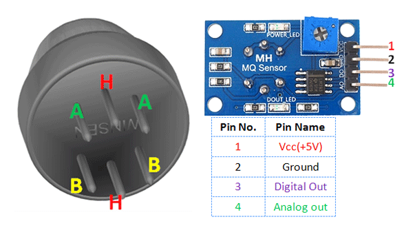
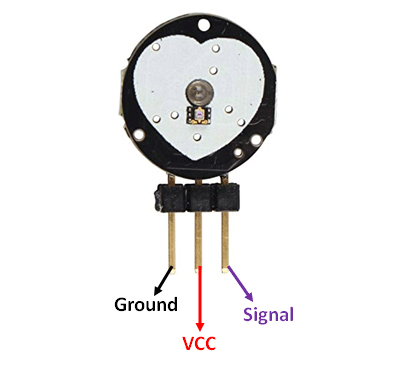
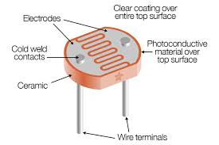
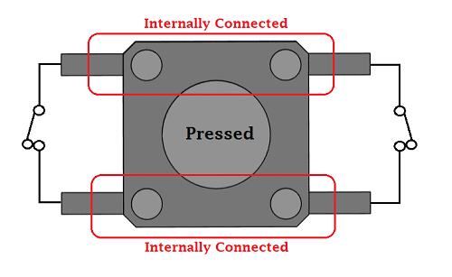
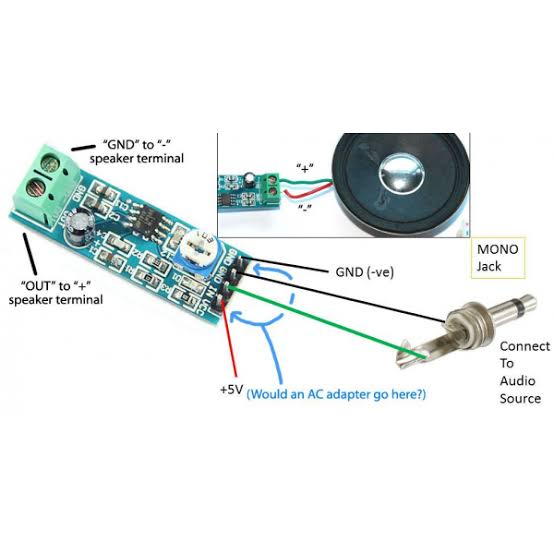

Pinout for the Geekcreit common cathode Red, Green & Blue (RGB) LED module, from the Geekcreit 37 in 1 sensor module board set kit for Arduino.
In some kits this module may be called 3-color LED module.
This pinout is for the Geekcreit RGB LED module with a through-hole mounting LED that has four pins and current limiting resistors on the module.
The LED has a common cathode pin and can display red, green or blue depending on which anode pin power is connected to.
LDifferent colours can be obtained by switching more than one of the RGB colours on at the same time.
As can be seen in the circuit diagram for this module, the LED module has built-in current limiting resistors on each anode.
This means that the module can be used directly with a 5V controller such as any 5V Arduino. The common cathode (-) of the module connects to GND. 5V applied to any of the anodes will then switch that colour on.
Micro Servo with 3-pin JST Cable
×
The TowerPro SG90 9g Mini Servo is 180° rotation servo. It is a Digital Servo Motor which receives and processes PWM signal faster and better. It equips sophisticated internal circuitry that provides good torque, holding power, and faster updates in response
to external forces.
• Operating Voltage is +5V typically • Torque: 2.5kg/cm • Operating speed is 0.1s/60° • Gear Type: Plastic • Rotation : 0°-180° • Weight of motor : 9gm • Package includes gear horns and screws
MG90S Metal Gear, MG995 High Torque Metal Gear, VTS-08A Analog Servo
There are lots of servo motors available in the market and each one has its own speciality and applications. The following two paragraphs will help you identify the right type of servo motor for your project/system. Most
of the hobby Servo motors operates from 4.8V to 6.5V, the higher the voltage higher the torque we can achieve, but most commonly they are operated at +5V. Almost all hobby servo motors can rotate only from 0° to 180° due
to their gear arrangement so make sure you project can live with the half circle if no, you can prefer for a 0° to 360° motor or modify the motor to make a full circle. The gears in the motors are easily subjected to wear and
tear, so if your application requires stronger and long running motors you can go with metal gears or just stick with normal plastic gear.
Specs of a large servo motor:-
Size 38 x 11.5 x 24mm (Include tabs) 28 x 12.7 x 27mm (Not include tabs)
Weight 17g (Not include a cable and a connector) 18g (Include a cable and a connector)
Connector type JR type (Yellow: Signal, Red: VCC, Brown:GND)
• Used as actuators in many robots like Biped Robot, Hexapod, robotic arm etc.. • Commonly used for steering system in RC toys • Robots where position control is required without feedback • Less weight hence used in
multi DOF robots like humanoid robots
Assembled DC Motor + Stepper FeatherWing
×
A Feather board without ambition is a Feather board without FeatherWings! This is the DC Motor + Stepper FeatherWing which will let you use 2 x bi-polar stepper motors or 4 x brushed DC motorx (or 1 stepper and 2 DC motors). Using
our Feather Stacking Headers (http://adafru.it/2830) or Feather Female Headers (http://adafru.it/2886) you can connect a FeatherWing on top or bottom of your Feather board and let the board take flight!
4 full H-Bridges: the TB6612 chipset provides 1.2A per bridge with thermal shutdown protection, internal kickback protection diodes. Can run motors on 4.5VDC to 13.5VDC.
Up to 4 bi-directional DC motors with individual 12-bit speed selection (so, about 0.02% resolution)
Up to 2 stepper motors (unipolar or bipolar) with single coil, double coil, interleaved or micro-stepping.
Motors automatically disabled on power-up
Big 3.5mm terminal block connectors to easily hook up wires (18-26AWG) and power
Polarity protected 2-pin terminal block and jumper to connect external power, for separate logic/motor supplies
Completely stackable design: 5 address-select jumper pads means up to 32 stackable wings: that's 64 steppers or 128 DC motors! What on earth could you do with that many steppers? I have no idea but if you come up with something
send us a photo because that would be a pretty glorious project.
PJRC Teensy 4.0 USB Development Board
×
More Teensy 4.0 are in production now, likely to arrive in 1 week. Get your order in now to reserve your's from that batch, as they very well may sell out. We are currently are working through a backlog of orders. If you placed
an order before 5AM Friday, we will very likely be able to ship it by Tuesday. I know waiting is painful, but please understand we're working to ship them as quickly as we can. If you are in Europe, look for Teensy 4.0 at
distributors. They will sell out quickly. We hope to get much more stock to distributors within the next few weeks. Teensy 4.0 is the latest Teensy, offering the fastest microcontroller and powerful peripherals in the Teensy
1.4 by 0.7 inch form factor.
• ARM Cortex-M7 at 600 MHz • 1024K RAM (512K is tightly coupled) • 2048K Flash (64K reserved for recovery & EEPROM emulation) • 2 USB ports, both 480 MBit/sec • 3 CAN Bus (1 with CAN FD) • 2 I2S Digital Audio • 1 S/PDIF Digital Audio • 1 SDIO (4 bit) native SD • 3 SPI, all with 16 word FIFO • 3 I2C, all with 4 byte FIFO • 7 Serial, all with 4 byte FIFO • 32 general purpose DMA channels • 31 PWM pins •
40 digital pins, all interrrupt capable • 14 analog pins, 2 ADCs on chip • Cryptographic Acceleration • Random Number Generator • RTC for date/time • Programmable FlexIO • Pixel Processing Pipeline • Peripheral cross triggering • Power On/Off management
When running at 600 MHz, Teensy 4.0 consumes approximately 100 mA current. Teensy 4.0 provides support for dynamic clock scaling. Unlike traditional microcontrollers, where changing the clock speed causes wrong baud rates and
other issues, Teensy 4.0 hardware and Teensyduino's software support for Arduino timing functions are designed to allow dynamically speed changes. Serial baud rates, audio streaming sample rates, and Arduino functions like
delay() and millis(), and Teensyduino's extensions like IntervalTimer and elapsedMillis, continue to work properly while the CPU changes speed. Teensy 4.0 also provides a power shut off feature. By connecting a pushbutton
to the On/Off pin, the 3.3V power supply can be completely disabled by holding the button for 5 seconds, and turned back on by a brief button press. If a coin cell is connected to VBAT, Teensy 4.0's RTC also continues to
keep track of date & time while the power is off. Teensy 4.0 also can also be overclocked, well beyond 600 MHz!
Small Alligator Clip to Female Jumper Wire
×
For bread-boarding with unusual non-header-friendly surfaces, these cables will be your best friends! No longer will you have long strands of alligator clips that are grabbing little wires. These compact jumper cables have a premium
male header on one end, and a grippy mini alligator clip on the other. Grab onto your Flora, Circuit Playground, micro:bit, Gemma, or even a banana, and plug it into a breadboard for prototyping joy! You get 12 pieces in 6
colors. • 12 piece set, color coded vinyl covered 1.25" alligator clips on one end, and male jumper wires on the other end • Contains two of each: black, red, white, green, blue, and yellow • 24 AWG wire
Bundle weight: 25g/0.89oz
Wire length end-to-end: 150mm / 6" ± 0.5"
Adafruit VCNL4040 Proximity and Lux Sensor
×
• Vin - this is the power pin. Since the sensor chip uses 3 VDC, we have included a voltage regulator on board that will take 3-5VDC and safely convert it down. To power the board, give it the same power as the logic level of your
microcontroller - e.g. for a 5V micro like Arduino, use 5V • 3Vo - this is the 3.3V output from the voltage regulator, you can grab up to 100mA from this if you like • GND - common ground for power and logic
• SCL - this is the I2C clock pin, connect to your microcontroller's I2C clock line. • SDA - this is the I2C data pin, connect to your microcontroller's I2C data line • STEMMA QT - These connectors allow you to connectors
to dev boards with STEMMA QTconnectors or to other things with various associated accessories
• INT -This is the interrupt pin. You can setup the VCNL4040 to pull this low when certain conditions are met such as proximity or lux level thresholds being crossed.
Serial.print("Raw white light:"); Serial.println(vcnl4040.getWhiteLight());
Serial.println("");
delay(500);
}
Adafruit DS3502 I2C Digital 10K Potentiometer Breakout
×
The sensor on the breakout requires between a 2.7V and 5.5V, and can be easily used with most microcontrollers from an Arduino to a Feather or something else. • Vcc - this is the power pin. To power the board, give it the same
power as the logic level of your microcontroller - e.g. for a 5V micro like Arduino, use 5V • GND - common ground for power and logic
• SCL - I2C clock pin, connect to your microcontrollers I2C clock line. The logic level is the same as Vcc and it has a 10K pullup already on it. • SDA - I2C data pin, connect to your microcontrollers I2C data line. The logic
level is the same as Vcc. and it has a 10K pullup already on it. • STEMMA QT - These connectors allow you to connectors to dev boards with STEMMA QTconnectors or to other things with various associated accessoriess
• RL is the Low Terminal of the potentiometer, often connected to ground. • RW is the wiper of the potentiometer. As the wiper value is adjusted via I2C, the resistance between RW and RL/RH changes • RH is the High Terminal
of the potentiometer, often connected to your high voltage source. • V+ is the wiper bias pin and is used to bias the gates of the MOSFETs that are responsible for changing the resistance between RW and RH or RL. If the
voltage at RH is higher than VCC, V+ must be at the same or higher voltage than RH. By default this is connected with a jumper to RH but you can cut the solder jumper and wire it directly
• A0 and A1 - These are the address select pins. Since you can only have one device with a given address on an I2C bus, there must be a way to adjust the address if you want to put more than one DS3502 on a shared I2C bus.
The A0/A1 pins set the bottom two bits of the I2C address. There are pull-down resistors on the board so connect them to VDD, you can solder the back jumpers or wire them on a breadboard, to set the bits to '1'. They are read
on power up, so de-power and re-power to reset the address. The default address is 0x28 and the address can be calculated by 'adding' the A0/A1 to the base of 0x28 A0 sets the lowest bit with a value of 1, and A1 sets
the middle bit with a value of 2. The final address is 0x28 + A1 + A0. • So for example if only A0 is tied to VDD, the address is 0x28 + 1 = 0x29 • If only A1 is tied to VDD, the address is 0x28 + 2 = 0x2A • If
A1 is tied to VDD and A0 is tied to VDD, the address is 0x28 + 2 + 1 = 0x2B.
1. #include
2. 3. Adafruit_DS3502 ds3502 = Adafruit_DS3502(); 4. /* For this example, make the following connections: 5. * DS3502 RH to 5V 6. * DS3502 RL to GND 7. * DS3502 RW to the pin specified by WIPER_VALUE_PIN 8. */ 9. 10. #define WIPER_VALUE_PIN A0 11. 12. void setup() { 13. Serial.begin(115200); 14. // Wait until serial port is opened 15. while (!Serial) { delay(1); } 16. 17. Serial.println("Adafruit
DS3502 Test"); 18. 19. if (!ds3502.begin()) { 20. Serial.println("Couldn't find DS3502 chip"); 21. while (1); 22. } 23. Serial.println("Found DS3502 chip"); 24. } 25. 26. void loop()
{
27. Serial.print("Wiper voltage with wiper set to 0: "); 28. ds3502.setWiper(0); 29. float wiper_value = analogRead(WIPER_VALUE_PIN); 30. wiper_value *= 5.0; 31. wiper_value /= 1024; 32. Serial.print(wiper_value); 33. Serial.println(" V"); 34. 35. Serial.println(); 36. delay(1000); 37. 38. Serial.print("Wiper voltage with wiper set to 63: "); 39. ds3502.setWiper(63); 40. wiper_value = analogRead(WIPER_VALUE_PIN); 41. wiper_value *= 5.0; 42. wiper_value /= 1024; 43. Serial.print(wiper_value); 44. Serial.println(" V"); 45. 46. Serial.println(); 47. delay(1000); 48. 49. Serial.print("Wiper voltage
with wiper set to 127: "); 50. ds3502.setWiper(127); 51. wiper_value = analogRead(WIPER_VALUE_PIN); 52. wiper_value *= 5.0; 53. wiper_value /= 1024; 54. Serial.print(wiper_value); 55. Serial.println("
V");
56. 57. Serial.println(); 58. delay(1000); 59. }
8 Channel LoRa Gateway Kit comes with Raspberry Pi, LoRa and GPS
×
If you’re building a IoT project and need to send data back-and-forth, the WiFi module built into newer Pi’s should be fine for most cases. But, what if you find WiFi does not have a long range you need? If you’re deploying
your project somewhere more remotely, without WiFi or a strong cellular network, like a rural area, you’ll need another option. Something that can be deployed quickly with no overhead setup and that will transmit/receive
over a long distance. Enter LoRa (Long Range) Radio – a smart, long-range, wireless transmission technology that enables the future of IoT (Internet of Things) without Cellular fees. This LoRa HAT from RAK Wireless is capable
of multi-channel, multi-node communication all running in a non-intimidating, hackable Raspberry Pi environment. Unlike our basic LoRa gateway bonnet, this chipset can support all 8 channels, so it can handle multiple clients,
on different LoRa channels, without having to do any code tweaks.
• Raspberry Pi 3 B+ • 5V 2.5A Switching Power Supply with 20AWG MicroUSB Cable • 915MHz 8-Channel LoRa concentrator + GPS shield • 16GB MicroSD card ready to pop into your Raspberry Pi • Magnetic mount GPS/GNSS
antenna 1m with SMA connector • 915 MHz LoRa compatible antenna (2dBi Gain / 50 Ω) • Mounting kit with 4 x brass standoffs & 4 x washers • Sleek and compact anodized enclosure (3 pieces): 68.3 mm x 92 mm x 53.5
mm
• 8 x 10mm tall screws • 4 x 4.75mm tall screws • 4 x Rubber stoppers Once you have your Internet-to-LoRa gateway set up with this kit, make LoRa nodes using our Feather line for easy deployment of sensor networks
that run on battery power. Don’t forge to only use 900 MHz LoRa modules to match up with this transceiver HAT’s frequency.
KittenBot IO:bit for micro:bit - Version 2.0
×
This is a low-cost expansion board for Micro:bit, which isspecifically used for the IO ports of Micro:bit. It has taken all the IO resources on the Micro:bit, and also has a buzzer on the board. It is connected to the P0 pin through
the jumper cap. The P0 pin can be released using a jumper cap. The small size is very suitable for small projects using Micro:bit.
• Small size, very suitable for DIY • All IO ports are extracted • On-board buzzer- you can directly use the music module in MakeCode to play music. At the same time, the 3.5mm audio connector on the board can be connected
to audio equipment; such as, headphones to have more creative endeavors. • Two LEGO-compatible pin holes for easy assembly and integration • The 3PIN interface is distinguished by yellow, red, and black. It is created
so that plugging it in the wrong way is difficult, and it is convenient to plug in the sensors. • It imitates the 5PIN gold fingers on the Micro:bit. This is convenient for makers who like to use the alligator clips. • Compared with IObit1.0, the biggest difference is that it can input and output 5V, support 5V sensor use, and increases the drive capacity (can drive multiple 9g small servos). • Includes 1A self-recovery fuse • Custom-designed
silk screen board
Length x width x height: 57mmx44mmx12mm
• Power supply mode: IobitV.2.0 supports USB5V power supply. This power supply mode requires pressing the blue power switch. • Working voltage: 3V-5V (5V sensor module is not supported under 3V power supply) • Output
current: 3V and 5V power interface with maximum output 1A • Serial port extraction: serial port can map IO • I2C port leads: pins 19 and 20 can only be used as I2C function pins. They cannot be read and written as
ordinary IO ports, because Micro:bit bottom is dead. • Spi port leads; 14, 15 (IO port can be read and written).
5V power:- Insert the USB power supply (5V 1A) as shown in Figure 1. Press the blue button at 2, and the red indicator light at 3 will light up. You can use the left 5V interface. P0 buzzer:- Toggle switch to turn off the buzzer
function (see the silk screen on the back of the board for status) 3Pin IO port leads:- All the pins in the Micro:bit have been taken out without any reservation (Note: there are no P17 and P18 on the Micro:bit, it’s not
that the IObit is not taken out) Yellow corresponds to the different IO pins Red corresponds to 3.3V/5V (with silkscreen) Black corresponds to GND 5PIN gold fingers:- The gold fingers of the Micro:bit are used
to draw 3v, gnd, P1, P2, and P3 respectively. This is for users who prefer to use alligator clips 40P Micro:- bit horizontal socket Compact size socket Board mounting holes and fixing:-> The two outermost holes
are approximately 4.8 mm in diameterand are compatible with Lego friction pins with a spacing of 48mm. 3.5mm audio interface:- You can plug in a 3.5mm jack audio device and play the sound of the P0 pin.
If you haven’t gotten started with Micro:bit, first get started with Micro:bit, this is the operating premise. Use music blocks directly in MakeCode to CQ0056. P0 pin is If you use P0, remember to turn the buzzer
toggle switch off (because the buzzer is combined with P0) • When using the Micro:bit power supply, IObit IO port drive capability is very weak, IO port current is less than 200mA, please do not connect high current devices
(such as large servo MG995, DC motor), otherwise it will burn out the Micro:bit , you must fully understand before using what the device current conditions needed • When using a 5V external power supply, you can drive multiple
small servos, but please note that the maximum current is 1A! • If you use the high-low read function of the pin, you must set the pull-down on the pin. • If P0 is used as a normal IO port, the buzzer toggle switch
must be turned off, otherwise the buzzer will sound or the IO read value will be abnormal. • Use the shared pin with the Micro:bit dot matrix (such as 3, 4, 5, 6, 7, 8, 9, 10, 11), remember to disable the dot matrix screen
on the software, otherwise it will be a bit of a screen burst • Do not use IO19, 20. 19 and 20 cannot be used as an IO port. Although the display on the MakeCode software can be used, it is actually not used! It can only
be used for I2C communication • The USB port allows a maximum input current of 1A. • Do not place it on a metal surface to avoid short circuit
Electric Heating Pad
×
This is hot! Literally! Apply 5-12VDC and the stainless steel fibers in this heating fabric will warm up, creating a little heating pad. On one hand, it's just a gigantic resistor. On the other hand, it's flexible, light, and can
be wrapped around a project. Originally designed for portable wearable heating pads, this fabric can be used for wearables, weather balloons, diy-bio projects, thermal cycling for materials testing, etc. The temperature reached
varies with voltage. This piece is ~ 10cm long, so look in the spec sheets in the Technical Details tab for a table of voltage/current/temperature outputs.
T• Dimensions: 110.65mm / 4.35" x 70.45mm / 2.77" x 1.54mm / 0.06" • Wire Length: 35.8mm / 1.4" • Weight: 2.53g • Insulation: Polyimide film ('Kapton') • Fabric made of Polyester filament and micro stainless steel
fiber
• Power requirements: 5V DC up to 1A
Testing conditions: (1)The width of the Ultra Heating Fabric is 5 cm (2)The diameter of metal-polymer composite conductive yarn is about 0.27 mm (3)The pitch of the conductive yarn in the Fabric is about 5 mm
(4)The input voltage to the Fabric is 5, 7.4, 9, 12 Voltage, respectively.
Adafruit Feather nRF52840 Express
×
The following pins have some restrictions that need to be taken into account when using them: • D2/NFC2: The D2 pin is uses the same pad as one-half of the NFC antenna pins. By default, the nRF52840 Feather ships with these
pins configured for GPIO mode, which is done by writing a value to the UICR flash config memory. If you wish to use NFC, you will need to erase the UICR memory which requires erasing the entire chip, and you will need a Segger
J-Link to reflash the bootloader and firmware.
• 3V: This pin is connected to the output of the on board 3.3V regulator. It can be used to supply 3.3V power to external sensors, breakouts or Feather Wings. • LIPO Input (Bat): This is the voltage supply off the optional
LIPO cell that can be connected via the JST PH connector. It is nominally ~3.5-4.2V. • VREG Enable (En): This pin can be set to GND to disable the 3.3V output from the on board voltage regulator. By default it is set high
via a pullup resistor. • USB Power (USB): This is the voltage supply off USB connector, nominally 4.5-5.2V.
The 6 available analog inputs (A0 .. A5) can be configured to generate 8, 10 or 12-bit data (or 14-bits with over-sampling), at speeds up to 200kHz (depending on the bit-width of the values generated), based on either an internal
0.6V reference or the external supply. The following default values are used: • Default voltage range: 0-3.6V (uses the internal 0.6V reference with 1/6 gain) • Default resolution: 12-bit (0..4096) • Default
mV per lsb (assuming 3.6V and 12-bit resolution): 1 LSB = 0.87890625 mV An additional two ADC pins are available but pre-connected to provide specific functionality: • AREF (A7 / P0.31), which can be used as an optional
external analog reference. This pin can be accessed in code via PIN_AREF or A7. If using an external AREF, this must be less than or equal to VDD, which is usually 3.3V! • VDIV (A6 / P0.29): This pin is hard wired to a
voltage-divider on the LIPO battery input, allowing you to safely measure the LIPO battery level on your device. If possible, you should avoid using this pin as an input because you will lose the ability to read the battery
voltage. You can use it as an output just make sure to switch the pin to analog input when you want to do the battery read, then back to output when toggling pins.
Any GPIO pin can be configured as a PWM output, using the dedicated PWM block. Three PWM modules can provide up to 12 PWM channels with individual frequency control in groups of up to four channels.
I2C pins on the nRF52840 require external pullup resistors to function, which are not present on the Adafruit nRF52840 Feather by default. You will need to supply external pullups to use these. All Adafruit I2C breakouts have appropriate
pullups on them already, so this normally won't be an issue for you.
A tactile switch is provided for use in your projects, which is connected to P1.02 and is accessible in code as D7. Holding this button down coming out of a board reset will also force the device to enter and remain in USB bootloader
mode, which can be useful if you lock your board up with bad application code!
For advanced debugging or to reprogram your nRF52840 Feather Express, a 2*5 pin 0.05" standard SWD header is populated on the boards. This allows you to use something like a Segger J-Link and a 1.27mm SWD cable to connect from
your PC to the nRF52840.
There are three basic LEDs available on the nRF52840 Feather Express: • D3 is a general-purpose RED LED that can be used for blinky, or other purposes. When running in bootloader mode it is used under the control of the bootloader
as a status indicator, with a rapid blinky pattern indicating that the board is currently in DFU bootloader mode. This LED is on D3 (or P1.15). Programmatically you can access this LED as LED_RED. • CONN can be used as
a general-purpose BLUE LED, but is generally controlled by the examples to indicate connection status for BLE. This LED is on P1.10. Programmatically you can access this LED as LED_BLUE. • CHG indicates that the on-board
LIPO charger is currently charging the connected LIPO battery cell, using USB as a power supply.
Stacking Headers for Feather
×
These two Female Stacking Headers alone are, well, lonely. But pair them with any of our Feather boards and you're in business! What do they do? They stack. Put the headers through your Feather and then you can not only plug them
into a solderless breadboard, but you could attach circuitry on top as well Note: Comes with one 12-pin and one 16-pin header, Feathers not included.
Header Kit for Feather
×
These two Female Headers alone are, well, lonely. But pair them with any of our Feather boards and you're in business! What do they do? They get soldered on either side of the Feather board. Now you can plug in FeatherWings
to add more capability to your portable project. Unlike our Feather Stacking Headers, they aren't designed to 'stack', but they're more compact. Note: Comes with one 12-pin and one 16-pin header, Feathers not included.
Joystick Module
×
Pin no.
Pin Name
Description
1
Gnd
Ground terminal of Module
2
+5v
Positive supply terminal of Module
3
VRx
Voltage Proportional to X axis
4
VRy
Voltage Proportional to Y axis
5
SW
Switch
• Two independent Potentiometer: one for each axis ( X and Y) • Auto return to center position • Low weight • Cup-type Knob • Compatible to interface with Arduino or with most microcontrollers
• Operating Voltage: 5V • Internal Potentiometer value: 10k • 2.54mm pin interface leads • Dimensions: 1.57 in x 1.02 in x 1.26 in (4.0 cm x 2.6 cm x 3.2 cm) • Operating temperature: 0 to 70 °C
The below image is the internal diagram of a Joystick Module. It consists of two Potentiometer, each for one axis (X and Y). Both 10k potentiometer are independent to move in their particular direction. SW (Switch) pin is connected
to a push button internally.
When we listen the word “Joystick” we think of Game controllers. If we talk about Electronics there are many useful application of Joystick. These type of module are mostly used in Arduino based DIY projects and Robot Control.
As we know, the module gives analog output so it can be used for feeding the analog input based on direction or movement. It can also be connected to a movable camera to control its movement.
We can use a Joystick Module with Arduino, Raspberry Pi and any other Micro-controllers. We just have to connect the axis Pins VRx and VRy to the ADC Pins of the micro-controller. If you want to use the switch then connect it to
the digital Pin of the Micro-controller. Follow the below block diagram to connect Joystick Module with Microcontroller.
• Camera Pan/Tilt Control • Game Input/Control • Robot Control • Analog Input of Parameters • Widely use in DIY projects
DHT11
×
Pin no.
Pin Name
Description
For Sensor
1
Vcc
Power supply 3.5V to 5.5V
2
Data
Outputs both Temperature and Humidity through serial Data
3
NC
No Connection and hence not used
4
Ground
Connected to the ground of the circuit
For Module
1
Vcc
Power supply 3.5V to 5.5V
2
Data
Outputs both Temperature and Humidity through serial Data
3
Ground
Connected to the ground of the circuit
• Operating Voltage: 3.5V to 5.5V • Operating current: 0.3mA (measuring) 60uA (standby) • Output: Serial data • Temperature Range: 0°C to 50°C • Humidity Range: 20% to 90% • Resolution: Temperature and Humidity
both are 16-bit • Accuracy: ±1°C and ±1% Note: The DHT11 datasheet can be found at the bottom of the page.
The DHT11 sensor can either be purchased as a sensor or as a module. Either way, the performance of the sensor is same. The sensor will come as a 4-pin package out of which only three pins will be used whereas the module will
come with three pins as shown above. The only difference between the sensor and module is that the module will have a filtering capacitor and pull-up resistor inbuilt, and for the sensor, you have to use them externally
if required.
The DHT11 is a commonly used Temperature and humidity sensor. The sensor comes with a dedicated NTC to measure temperature and an 8-bit microcontroller to output the values of temperature and humidity as serial data. The sensor
is also factory calibrated and hence easy to interface with other microcontrollers. The sensor can measure temperature from 0°C to 50°C and humidity from 20% to 90% with an accuracy of ±1°C and ±1%. So if you are looking
to measure in this range then this sensor might be the right choice for you.
The DHT11 Sensor is factory calibrated and outputs serial data and hence it is highly easy to set it up. The connection diagram for this sensor is shown below. As you can see the data pin is connected to an I/O pin of the MCU
and a 5K pull-up resistor is used. This data pin outputs the value of both temperature and humidity as serial data. If you are trying to interface DHT11 with Arduino then there are ready-made libraries for it which will give
you a quick start. If you are trying to interface it with some other MCU then the datasheet given below will come in handy. The output given out by the data pin will be in the order of 8bit humidity integer data + 8bit
the Humidity decimal data +8 bit temperature integer data + 8bit fractional temperature data +8 bit parity bit. To request the DHT11 module to send these data the I/O pin has to be momentarily made low and then held high
as shown in the timing diagram below. The duration of each host signal is explained in the DHT11 datasheet, with neat steps and illustrative timing diagrams.
• Measure temperature and humidity • Local Weather station • Automatic climate control • Environment monitoring
DHT22
×
Pin no.
Pin Name
Description
For DHT22 Sensor
1
Vcc
Power supply 3.5V to 5.5V
2
Data
Outputs both Temperature and Humidity through serial Data
3
NC
No Connection and hence not used
4
Ground
Connected to the ground of the circuit
For DHT22 Module
1
Vcc
Power supply 3.5V to 5.5V
2
Data
Outputs both Temperature and Humidity through serial Data
3
Ground
Connected to the ground of the circuit
• Operating Voltage: 3.5V to 5.5V • Operating current: 0.3mA (measuring) 60uA (standby) • Output: Serial data • Temperature Range: -40°C to 80°C • Humidity Range: 0% to 100% • Resolution: Temperature and Humidity
both are 16-bit • Accuracy: ±0.5°C and ±1% Note: The DHT22 datasheet can be found at the bottom of the page
The DHT22 sensor is the successor of the DHT11 module, it can either be purchased as a sensor or as a module. Either way the performance of the sensor is same. The sensor will come as a 4-pin package out of which only three pin will be used whereas the
module will come with just three pins as shown in the DHT22 pinout above. The only difference between the sensor and module is that the module will have a filtering capacitor and pull-up resistor
inbuilt, and for the sensor you have to use them externally if required. The module is slightly costly than the DHT11, but it has a higher measuring range and slightly better accuracy .
The DHT22 is a commonly used Temperature and humidity sensor. The sensor comes with a dedicated NTC to measure temperature and an 8-bit microcontroller to output the values of temperature and humidity as serial data. The
sensor is also factory calibrated and hence easy to interface with other microcontrollers. The sensor can measure temperature from -40°C to 80°C and humidity from 0% to 100% with an accuracy of ±1°C and ±1%. So if you are
looking to measure in this range then this sensor might be the right choice for you.
The DHT22 Sensor is factory calibrated and outputs serial data and hence it is highly easy to set it up. The connection diagram for this sensor is shown below. As you can see the data pin is connected to an I/O pin of the
MCU and a 5K pull up resistor is used. This data pin outputs the value of both temperature and humidity as serial data. If you are trying to interface DHT22 with Arduino Uno then there are ready made libraries for it which
will give you a quick start.
• Measure temperature and humidity • Local Weather station • Automatic climate control • Environment monitoring
5v Relay Module
×
Arduino is a microcontroller based prototyping board that runs on small DC power. A Relay is a device that helps microcontrollers (or microcontroller based boards) like Arduino to switch on or off different household appliances
like motors, lights, water heaters, television and fans etc. Today, Arduino is being used for a wide range of applications like controlling LEDs, monitoring temperature, logging data and turning on motors etc. Another
important task that can be accomplished by the Arduino is controlling a 5V Relay to operate high voltage AC appliances and devices. Arduino family of microcontrollers, like UNO, Nano and Mega etc. can be programmed to control
a simple 5V relay i.e. switch it on or off on the event of pushing a button, reading the value of temperature from a thermistor or just by setting up a predefined timer.
• Arduino UNO (or any other Arduino board) • 5V Relay • 1N4007 Diode • BC547 – NPN Transistor • Red LED (can be used as a Power ON LED) • Green LED (can be used as a Relay ON LED) • 2 x 1K Ohm Resistors
(1/4 W – for Red and Green LEDs) • Lamp • Wires for connecting DC Voltage components • Wires for connecting AC Mains and lamp
const int relay=8; const int Ainput=A0; int ldrValue = 0; int range = 0; void setup() {
pinMode(relay,OUTPUT);
digitalWrite(relay,HIGH); // My Relay is an active LOW Relay. Serial.begin(9600);
}
void loop() {
ldrValue = analogRead(Ainput); range = map(ldrValue, 0, 1023, 0, 255); Serial.println(range);
if(range>125)
digitalWrite(relay,LOW);
else
digitalWrite(relay,HIGH);
}
Advantages:- The main and important advantage of connecting a 5V relay with Arduino is that it can be powered by Arduino itself. Disadvantages:-
A transistor based relay might not be ideal for long time use as there will always be noise in the relay coil. A suitable option will be using additional isolation like an opto-isolator or completely eliminating the electromechanical
relay and replacing it with solid state relay.
• Interfacing a 5V Relay with Arduino opens up the door to a huge number of applications. Although the main task of the relay is to control a load, how that relay is being operated by the Arduino makes it an interesting project. • Some of the techniques and methods using which we can control the relay are: Bluetooth, Infrared (IR) remote, RF Transmitter – Receiver Pair or even using Internet. • Arduino based Home Automation requires the combination
of Arduino and many relay module (depending on the number of loads).
Ultrasonic Sensor HC-SR04
×
Pin no.
Pin Name
Description
1
Vcc
The Vcc pin powers the sensor, typically with +5V
2
Trigger
Trigger pin is an Input pin. This pin has to be kept high for 10us to initialize measurement by sending US wave.
3
Echo
Echo pin is an Output pin. This pin goes high for a period of time which will be equal to the time taken for the US wave to return back to the sensor.
4
Ground
This pin is connected to the Ground of the system.
• Operating voltage: +5V • Theoretical Measuring Distance: 2cm to 450cm • Practical Measuring Distance: 2cm to 80cm • Accuracy: 3mm • Measuring angle covered: less than 15° • Operating Current: less than 15mA • Operating Frequency: 40Hz
US transmitter Receiver pair, IR sensor module, IR sensor pair, IR Analog distance sensor,
As shown above the HC-SR04 Ultrasonic (US) sensor is a 4 pin module, whose pin names are Vcc, Trigger, Echo and Ground respectively. This sensor is a very popular sensor used in many applications where measuring distance or sensing
objects are required. The module has two eyes like projects in the front which forms the Ultrasonic transmitter and Receiver. The sensor works with the simple high school formula that Distance = Speed × Time.
• Used to avoid and detect obstacles with robots like biped robot, obstacle avoider robot, path finding robot etc. • Used to measure the distance within a wide range of 2cm to 400cm • Can be used to map the objects surrounding
the sensor by rotating it • Depth of certain places like wells, pits etc can be measured since the waves can penetrate through water
KY-036 Metal-touch sensor module
×
Outputs a signal if the metal pike of the Sensor was touched. You can adjust the sensitivity of the sensor with the controller. Digital Out: At the moment of contact detection, a signal will be outputted. Analog Out: Direct
measuring value of the sensor unit. LED1: Shows that the sensor is supplied with voltage LED2: Shows that the sensor detects a magnetic field
The sensor has 3 main components on its circuit board. First, the sensor unit at the front of the module which measures the area physically and sends an analog signal to the second unit, the amplifier. The amplifier amplifies
the signal, according to the resistant value of the potentiometer, and sends the signal to the analog output of the module. The third component is a comparator which switches the digital out and the LED if the signal falls
under a specific value. You can control the sensitivity by adjusting the potentiometer.
// Declaration and initialization of the input pin int Analog_Eingang = A0; // X-axis-signal int Digital_Eingang = 3; // Button void setup () {
pinMode (Analog_Eingang, INPUT); pinMode (Digital_Eingang, INPUT); Serial.begin (9600); // Serial output with 9600 bps }
// The program reads the current value of the input pins // and outputs it via serial out void loop () {
float Analog; int Digital; // Current value will be read and converted to the voltage Analog = analogRead (Analog_Eingang) * (5.0 / 1023.0); Digital = digitalRead (Digital_Eingang); // and outputted
here
Serial.print ("Analog voltage value:"); Serial.print (Analog, 4); Serial.print ("V, "); Serial.print ("Extreme value:"); if(Digital==1)
{
Serial.println (" reached"); }
else
{
Serial.println (" not reached yet"); }
Serial.println ("----------------------------------------------------------------"); delay (200); }
digital Signal = [Pin 3] +V = [Pin 5V] GND = [Pin GND] analog Signal = [Pin 0]
A flame sensor module that consists of a flame sensor (IR receiver), resistor, capacitor, potentiometer, and comparator LM393 in an integrated circuit. It can detect infrared light with a wavelength ranging from 700nm to 1000nm.The
far-infrared flame probe converts the light detected in the form of infrared light into current changes. Sensitivity is adjusted through the onboard variable resistor with a detection angle of 60 degrees. Working voltage
is between 3.3v and 5.2v DC, with a digital output to indicate the presence of a signal. Sensing is conditioned by an LM393 comparator.
// Flame Sensor Module int LED = 13; // Use the onboard Uno LED int isFlamePin = 7; // This is our input pin int isFlame = HIGH; // HIGH MEANS NO FLAME void setup() { pinMode(LED, OUTPUT); pinMode(isFlamePin,
INPUT);
Serial.begin(9600);
}
void loop() { isFlame = digitalRead(isFlamePin); if (isFlame== LOW) {
Serial.println("FLAME, FLAME, FLAME"); digitalWrite(LED, HIGH); }
else
{
Serial.println("no flame"); digitalWrite(LED, LOW); }
}
Open the Serial Monitor on your Arduino program.Move a flame in and out of the viewing angle of the sensor.You should see an output that looks something like the picture below. You should also see the red LED illuminate on your
module and you should see also see the module LED connected to pin 13 of your Arduino light up.
RGB LED module consists of a plug-in full color LED made by R, G, B three pin PWM voltage input can be adjusted Section three primary colors (red / blue / green) strength in order to achieve full color mixing effect. Control of
the module with the Arduino can be achieved Cool lighting effects.
the use of plug-in full-color LED RGB trichromatic limiting resistor to prevent burnout through the PWM adjusting three primary colors can be mixed to obtain different colors with a variety of single-chip interface the working voltage: 5V LED drive mode: common cathode driver
//KY016 3-color LED module int redpin = 11; // select the pin for the red LED int bluepin = 10; // select the pin for the blue LED int greenpin = 9 ;// select the pin for the green LED int val; void setup ()
{
pinMode (redpin, OUTPUT); pinMode (bluepin, OUTPUT); pinMode (greenpin, OUTPUT); Serial.begin (9600); }
void loop () {
for (val = 255; val> 0; val --) {
analogWrite (11, val); analogWrite (10, 255-val); analogWrite (9, 128-val); delay (10); Serial.println (val, DEC); }
for (val = 0; val
< 255; val ++)
{ analogWrite (11, val); analogWrite (10, 255-val); analogWrite (9, 128-val); delay (10); Serial.println (val, DEC); }
}
LEDS
×
LEDs are available in a variety of sizes and shapes including the 3mm LED. We carry a wide assortment of the most common models of 3mm, 5mm, 8mm and 10mm models. The size refers to the outside diameter of the LED. 3mm LEDs
are the smallest and used in tight-fitting applications, while 8mm and 10mm models are used where you want to get out as much light as possible. Super bright 3mm LEDs are extremely bright good for use in your projects,
illuminations, headlamps, spotlights, car lighting, models. 3mm LEDs can be used anywhere where you need low power, high-intensity reliable lighting or indication. They go easily into a breadboard and will add that extra
zing to your project.
LEDs are available in a variety of sizes and shapes including the 5mm LED. We carry a wide assortment of the most common models of 3mm, 5mm, 8mm and 10mm models. The size refers to the outside diameter of the LED, with the
5mm LED being the industry standard as the most common LED model. 3mm LEDs are the smallest and used in tight-fitting applications, while 8mm and 10mm models are used where you want to get out as much light as possible.
The longer lead indicates the anode, the lead frame arrangement and “cathode flat” on the case flange may be reversed for some LEDs, always use the longer lead as the anode or test the devices first.
RGB LED Strips
×
The NeoPixel LEDs are RGB LED lights with a built driver IC that makes these lights addressable and programmable. The idea was originally coined by Adafruit and since then there are many types of Neo pixels of varying sizes
and shapes available in the market. In this article we will focus only on the strip type flexible Neo Pixels which are commonly available and most used. The picture and pinouts of a NeoPixel LED is shown above.
Pin no.
Pin Name
Description
1
Vcc
This powers the LED with 5V
2
Data
This is the Data in pin which is provided with PWM signal
3
Ground
Connected to the ground of the circuit.
• Individually addressable and programmable RGB LEDs • Flexible and available in different form factors • Operating voltage: 3.3V to 5V • Power consumption: 60mA per LED at full brightness • Communication: PWM through
data pin • Driver IC: WS2812 • Available in many different packages and form factors
RGB and RGBW strip type, Ring type, SMD type, Through hole type, Matrices, Arduino/Pi shield type, stick type, Jewel type and wearable type.
The Neo pixels are small in size with less circuitry and almost no messy wires since the driver IC is embedded into each LED. Each LED has a minimum of RGB light and hence they can be combined to get almost any colour of your
choice. This makes it a very good choice for wearable electronics and other decorative lights. Each LED on this strip can be individually addressed and programmed, meaning each LED can be set to glow in a different colour. Also
you can add as many leds in series as you like at control all of them with a single controller. I personally have seen LED strips having upto 200+ LEDS, the only constrain is the power and RAM of your controller. If you
are using a controller like Arduino, then Adafruit has a library readily available using which these LED can be easily programmed. So if you are looking for easy to use programmable LED light then NeoPixels are what you
are looking for.
• Wearable electronics • Linear clock • Mood Lamp • Digital Posters • Electronic/Digital advertisements
TCRT5000 Tracking Line Follower Sensor
×
The TCRT5000 and TCRT5000L are reflective sensors which include an infrared emitter and phototransistor in a leaded package which blocks visible light. The package includes two mounting clips. TCRT5000L is the long lead version.
• Active InfraRed (IR) reflection sensor. • Purpose: o Can be used for detection of distance to a nearby object o Can also be used to sense the difference between light and dark colours and hence be used in vehicular robotic competition
where one has to follow a line/grid on the floor. • Power supply: 3.3V to 5VDC • Supply Current:
< 9mA (when the onboard SMD LED is off) • Output: Open collector output capable of sinking upto 20mA of current - Active Low Logic • Connector: 4 Pin 0.1 inch pitch header for power & digital output (Vcc, Gnd, DO, AO) • AO is the analog output • The digital
output (DO) is like an alarm which goes on when the distance to the object or light reflected off the object reaches a specific value. • Adjustment: Activation threshold can be adjusted via the onboard multi-turn potentiometer
• PCB Dimensions: 32mm x 14mm (not including the protruding connector) • Height of components: upto 10 mm on component side. The sensor is mounted on back side. • Mounting hole: Single of 1/8 inch diameter
Linear Magnetic Hall Sensor
×
The KY-024 Linear magnetic Hall sensor reacts in the presence of a magnetic field. It has a potentiometer to adjust the sensitivity of the sensor and it provides both analog and digital outputs. The digital output acts as
a switch that will turn on/off when a magnet is near, similar to the KY-003. On the other hand, the analog output can measure the polarity and relative strength of the magnetic field.
The KY-024 module consists of a 49E Linear Hall-Effect Sensor, a LM393 Dual Differential Comparator, a potentiomenter, two leds and six resistors. It's compatible with popular electronics platforms like Arduino, Raspberry Pi, Esp8266
and Teensy. Operating Voltage 2.7V to 6.5V Sensitivity 1.0 mV/G min., 1.4 mV/G typ., 1.75 mV/G max. Board Dimensions 1.5cm x 3.6cm [0.6in x 1.4in]
int led = 13 ; // LED on arduino int digitalPin = 3; // linear Hall magnetic sensor digital interface int analogPin = A0; // linear Hall magnetic sensor analog interface int digitalVal ; // digital readings int
analogVal; // analog readings void setup () {
pinMode (led, OUTPUT); pinMode (digitalPin, INPUT); //pinMode(analogPin, INPUT); Serial.begin(9600);
}
void loop () {
// Read the digital interface digitalVal = digitalRead(digitalPin) ; if (digitalVal == HIGH) // When magnetic field is present, Arduino LED is on {
digitalWrite (led, HIGH); }
else
{
digitalWrite (led, LOW); }
// Read the analog interface analogVal = analogRead(analogPin); Serial.println(analogVal); // print analog value delay(100);
}
Rotary Encoder Module
×
ROTORY ENCODER is a device used for knowing the axial movement and its direction. Although they are available in various types here we are going to discuss about simple contact type encoder module. Here we are going to use M274
ROTARY ENCODER MODULE.
ROTARY ENCODER module is five pin device as shown in the M274 pinout. In them four pins are compulsory for using the module.
Pin no.
Pin Name
Description
1
GND
Connected to GROUND
2
Vcc
Connected to +5V
3
SW
Output of internal button
4
DT
Contact A output or DATA
5
CLK
Contact B output or CLOCK
• 360º free rotation. • 20 steps or cycles per revolution • Incremental type encoder • Can work on low voltages • Maximum operating temperature: 0°C to + 80°C • Easy interface • Long life.
• Security systems. • Motors • Robotic arms • Vending machines. • Industrial machines. • Engineering systems. • Measuring instruments. • Hobby projects. • Systems where systematic change INPUT device
is needed like CROs, signal generator etc.
Active Buzzer Module
×
This is a small buzzer module which operates around the audible 2 kHz frequency range. It is an active buzzer, which means that it produces sound by itself, without needing an external frequency generator.
Product Name:3.3 to 5V Active Buzzer Alarm Module Sensor Transistor drive module uses 8550 With fixed bolt hole- easy installation- 2.6mm aperture. Operating voltage 3.3V-5V PCB Dimensions: 34.28 mm (L) * 13.29
mm (W) * 11.5 mm (H)
1.An active buzzer with a concussion internal source- so long as it will be called an energized 2. Program easy to control- SCM can let a high-low sound- while passive buzzer did not.
+ External 3.3V-5V voltage (can be directly connected with the 5v and 3.3v MCU MCU) – External GND out external microcontroller IO port
Magic Cup Light Module
×
Arduino KY-027 Magic Light Cup Module is a set of two boards, each one has a led and a mercury tilt switch. Using PWM to drive the LEDs on each module you can achieve the effect of light being "magically" transferred from one module
to the other when tilting them.
The KY-027 is a pair of modules, each one consist of a mercury switch, a led and a 10 kΩ resistor. Each board have a pins to control the switch, LED, power and ground. Operating Voltage 3.3V to 5.5V Board Dimensions 1.5cm
x 3.6cm [0.6in x 1.4in]
KY-027 (A) Arduino G GND + 5v S 8 L 9 KY-027 (B) Arduino G GND + 5v S 7 L 6
int ledPinA = 9; int switchPinA = 8; int switchStateA = 0; int ledPinB = 6; int switchPinB = 7; int switchStateB = 0; int brightness = 0; void setup() {
pinMode(ledPinA, OUTPUT); pinMode(ledPinB, OUTPUT); pinMode(switchPinA, INPUT); pinMode(switchPinB, INPUT); }
void loop() {
switchStateA = digitalRead(switchPinA); if (switchStateA == HIGH && brightness != 255) { brightness ++; } switchStateB = digitalRead(switchPinB); if (switchStateB == HIGH && brightness != 0) { brightness --; } analogWrite(ledPinA, brightness); // A slow fade out analogWrite(ledPinB, 255 - brightness); // B slow bright up delay(20);
}
Small Passive Buzzer Module
×
This buzzer module is passive because it does not have any internal electronics to generate a sound or tone. External electronics or a microcontroller based device, such as an Arduino, is needed to make the device produce a
sound.
Because the device is passive, it acts more like a tiny loudspeaker than a buzzer.
• Voltage: 3.3 - 5V • With fixed bolt hole: 3mm for easy installation • Module adopts 9012 transistor drive • No oscillation source, need square wave (frequency 2K-5K ) to drive • Sound frequency control, you can
make a “do re mi fa sol la si” effect
Passive internal shocks without source- so if you can not make it with a DC signal tweet. Must be a square wave 2K ~ 5K to drive it Sound frequency control- you can make a “more than a meter hair Suola” effect. In
some special cases- you can reuse a control and LED mouth
int buzzer = 8 ; void setup () {
pinMode (buzzer, OUTPUT) ; }
void loop () {
unsigned char i, j ; while (1) {
for (i = 0; i
< 80; i++) // When a frequency sound
{ digitalWrite (buzzer, HIGH) ; //send tone delay (1) ; digitalWrite (buzzer, LOW) ; //no tone delay (1) ; }
for (i = 0; i
< 100; i++)
{ digitalWrite (buzzer, HIGH) ; delay (2) ; digitalWrite (buzzer, LOW) ; delay (2) ; }
}
}
KY-028 Digital Temperature Sensor Module
×
Digital Temperature Sensor KY-028 for Arduino, it measures temperature changes based on the thermistor resistance. This module has both digital and analog outputs, there's a potentiometer to adjusts the detection threshold on the
digital interface.
The KY-028 consist of a of a NTC thermistor, a LM393 dual differential comparator a 3296W trimmer potentiometer, six resistors and two indicator LEDs. The board features an analog and a digital output. Operating Voltage 3.3V to
5.5V
Temperature measurement range -55°C to 125°C [-67°F to 257°F] Measurement Accuracy ±0.5°C Board Dimensions 15mm x 36mm [0.6in x 1.4in]
Connect the board's analog output (A0) to pin A0 on the Arduino and the digital output (D0) to pin 3. Connect the power line (+) and ground (G) to 5V and GND respectively. KY-028 Arduino A0 A0 G GND + 5V D0 2
int led = 13; // define the LED pin int digitalPin = 2; // KY-028 digital interface int analogPin = A0; // KY-028 analog interface int digitalVal; // digital readings int analogVal; //analog readings void setup() {
pinMode(led, OUTPUT); pinMode(digitalPin, INPUT); //pinMode(analogPin, OUTPUT); Serial.begin(9600);
}
void loop() {
// Read the digital interface digitalVal = digitalRead(digitalPin); if(digitalVal == HIGH) // if temperature threshold reached {
digitalWrite(led, HIGH); // turn ON Arduino's LED }
else
{
digitalWrite(led, LOW); // turn OFF Arduino's LED }
// Read the analog interface analogVal = analogRead(analogPin); Serial.println(analogVal); // print analog value to serial delay(100);
}
Broken Light Module
×
Foto-onderbrekingsmodule triggert een signaal wanneer licht tussen de opening van de sensor is geblokkeerd. Foto onderbrekingsmodule bestaat uit een optische emitter / detector aan de voorkant en twee weerstanden (1 kΩ en 33
Ω) aan de achterkant. De sensor gebruikt een lichtstraal tussen de emitter en een detector om te controleren of het pad tussen beide wordt geblokkeerd door een ondoorzichtig object.
• Voltage 5V • Afmetingen: 19 mm x 15 mm x 8 mm • Gewicht:3 gram Aansluiting t.b.v. voorbeeldsketch: • - (links) GND • + (midden) 5V • S (rechts) Pin 3
The Temperature Sensor Module
×
This is DS18B20 digital temperature sensor module for Arduino -55°C~125°C Digital signal output Detect ambient air temperature Compatible with Arduino DIY project Main chip: 18B20 temperature sensor Material:
PCB
Resolution adjustment range :9-12 With mounting holes for easy installation, Aperture: 2.5 Temperature measuring range: -55 ~ +125 ℃ Temperature measurement accuracy: 0.5 ℃ Working voltage: DC 5V Size: 28mm
x 12mm x 10mm
note about raspberry test: both 5v and 3.3v setup as described around the links below are working. when i was testing with my finger to elevate temperature, the ds18B20 stop working after few measure. It seems to be dead and
not viewable from the pi. After waiting a little bit, i powered off and on the pi and the sensor start to answer again. It's perhaps it is a cheap module and the elevation speed too fast ?. 1. the tuto that works for me
(very simple and working well !): raspberry pi 2 detailed setup and python script with DS18B20 and raspberry pi 2 2. Raspberry pi tutorial and details about KY001 can be found here: https://www.cl.cam.ac.uk/projects/raspberrypi/tutorials/temperature/ 3. in french (1): another link in french 4. in french (2)step by step setup in french
Arduino controller × 1 DS18B20 Temperature Sensor Module × 1 USB data cable × 1 download and install the OneWire libary
Pin - = connect to Arduino GND Pin (middel) = connect to arduino +5V Pin S = Signal, in this example connect to Arduino Digital port 10 When everything is properly connected, there is a led on the module that
blinks when the sensor is read.
#include OneWire.h
// DS18S20 Temperature chip i/o OneWire ds(10); // on pin 10 void setup(void) { // initialize inputs/outputs // start serial port Serial.begin(9600);
}
void loop(void) { //For conversion of raw data to C int HighByte, LowByte, TReading, SignBit, Tc_100, Whole, Fract; byte i; byte present = 0; byte data[12]; byte addr[8]; if ( !ds.search(addr))
{
Serial.print("No more addresses.\n"); ds.reset_search();
return;
}
Serial.print("R=");
for( i = 0; i
< 8; i++) {
Serial.print(addr[i], HEX); Serial.print(" "); }
if ( OneWire::crc8( addr, 7) != addr[7]) { Serial.print("CRC is not valid!\n"); return;
}
if ( addr[0] == 0x10) { Serial.print("Device is a DS18S20 family device.\n"); }
else if ( addr[0] == 0x28) { Serial.print("Device is a DS18B20 family device.\n"); }
else { Serial.print("Device family is not recognized: 0x"); Serial.println(addr[0],HEX);
return;
}
ds.reset();
ds.select(addr);
ds.write(0x44,1); // start conversion, with parasite power on at the end delay(1000); // maybe 750ms is enough, maybe not // we might do a ds.depower() here, but the reset will take care of it. present
= ds.reset(); ds.select(addr);
ds.write(0xBE); // Read Scratchpad Serial.print("P=");
Serial.print(present,HEX);
Serial.print(" "); for ( i = 0; i
< 9; i++) { // we need 9 bytes
data[i] = ds.read(); Serial.print(data[i], HEX); Serial.print(" "); }
Serial.print(" CRC="); Serial.print( OneWire::crc8( data, 8), HEX); Serial.println();
//Conversion of raw data to C LowByte = data[0]; HighByte = data[1]; TReading = (HighByte
<< 8) + LowByte;
SignBit = TReading & 0x8000; // test most sig bit if (SignBit) // negative {
TReading = (TReading ^ 0xffff) + 1; // 2's comp }
Tc_100 = (6 * TReading) + TReading / 4; // multiply by (100 * 0.0625) or 6.25 Whole = Tc_100 / 100; // separate off the whole and fractional portions Fract = Tc_100 % 100; if (SignBit) // If its
negative
{
Serial.print("-");
}
Serial.print(Whole);
Serial.print(".");
if (Fract
< 10)
{ Serial.print("0");
}
Serial.print(Fract);
Serial.print("\n");
//End conversion to C }
Double Color LED Module
×
LED module which provides a red and a green LED. These LEDs are connected with a common cathode. Resistors are needed for different input voltages. Vf [typ]= 2,0-2,5V If= 20mA Pre-resistors:
Rf (3,3V) [Green]= 120Ω Rf (3,3V) [Red]= 120Ω [for example using ARM CPU-Core based microcontroller like Raspbarry Pi] Rf (5V) [Green] = 220Ω Rf (5V) [Red] = 220Ω
LED Green = [Pin 10] LED Red = [Pin 11] Sensor GND = [Pin GND]
This module consist of a common cathode 3mm red/green LED and a 0Ω resistor, Since operating voltage is 2.0v ~2.5v you'll need to use limiting resistors to prevent burnout when connecting to the Arduino. Operating Voltage 2.0v
~ 2.5v Using Current 10mA Diameter 3mm Package Type Diffusion Color Red + Green Beam Angle 150 Wavelength 571nm + 644nm Luminosity Intensity (MCD) 20-40; 40-80
The following Arduino sketch will gradually alternate between red and green color. int redpin = 11; // pin for red signal int greenpin = 10; // pin for green signal int val; void setup() { pinMode(redpin, OUTPUT); pinMode(greenpin, OUTPUT); }
void loop() { for(val = 255; val > 0; val--) { analogWrite(redpin, val); //dim red analogWrite(greenpin, 255 - val); // brighten green delay(15);
}
for(val = 0; val
< 255; val++) {
analogWrite(redpin, val); //brighten red analogWrite(greenpin, 255 - val); //dim green delay(15);
}
}
Code example ON/OFF # Needed modules will be imported and configured. import RPi.GPIO as GPIO import time GPIO.setmode(GPIO.BCM)
# Output pin declaration for the LEDs. LED_Red = 5 LED_Green = 4 GPIO.setup(LED_Red, GPIO.OUT, initial= GPIO.LOW) GPIO.setup(LED_Green, GPIO.OUT, initial= GPIO.LOW) print "LED-Test [press ctrl+c to
end the test]" # Main program loop try:
while True: print("LED Red will be on for 3 seconds") GPIO.output(LED_Red,GPIO.HIGH) #LED will be switched on GPIO.output(LED_Green,GPIO.LOW) #LED will be switched off time.sleep(3) # Waitmode for 3 seconds print("LED Green will be on for 3 seconds") GPIO.output(LED_Red,GPIO.LOW) #LED will be switched off GPIO.output(LED_Green,GPIO.HIGH) #LED will be switched on time.sleep(3) #Waitmode for another 3 seconds in which
the LEDs are shifted # Scavenging work after the end of the program except KeyboardInterrupt: GPIO.cleanup()
LED Green = GPIO4 [Pin 16] LED Red = GPIO5 [Pin 18] Sensor GND = GND [Pin 6]
Mercury Medallion Module
×
Arduino KY-017 mercury tilt switch module, it uses a small mercury ball that completes the circuit when you tilt the module.
This module consists of a mercury switch, a 680Ω resistor and a LED that will light up when tilt is detected. The mercury ball will open/close the circuit when the module is rotated. Operating Voltage 3.3V to 5.5V
Connect the Power line (middle) and ground (-) to +5 and GND respectively. Connect signal (S) to pin 3 on the Arduino. KY-017 Arduino S Pin 3 middle +5V - GND
int led_pin = 13; // Define the LED interface int switch_pin = 3; // Definition of mercury tilt switch sensor interface int val; // Defines a numeric variable void setup() {
pinMode(led_pin, OUTPUT); pinMode(switch_pin, INPUT); }
void loop() {
val = digitalRead(switch_pin); // check mercury switch state if(val == HIGH) {
digitalWrite(led_pin, HIGH); }
else
{
digitalWrite(led_pin, LOW); }
} Mercury switch module and a digital interface, built-in 13 LED build a simple circuit to produce tilt warning lamp 13 comes with digital interfaces of the LED, the mercury tilt switch sensor interface to access digital
3, when the tilt switch sensor senses a key signal, LED lights, otherwise off.
Arduino GND --> Pin - of module Arduino 5+ --> Pin middel of module Arduino 3 --> pin S of module
Hall Magnetic Sensor Module
×
KEYES KY-003 Arduino Hall Magnetic Sensor Module is a switch that will turn on/off in the presence of a magnetic field.
The KY-003 Hall Magnetic Sensor consists of a 3144EUA-S sensitive Hall-effect switch for high-temperature operation, a 680Ω resistor and a LED. Compatible with popular electronics platforms like Arduino and Raspberry Pi. Operating
Voltage 4.5V to 24V Operating Temperature Range -40°C to 85°C [-x°F to x°F] Dimensions 18.5mm x 15mm [0.728in x 0.591in]
Connect the Power line (middle) and ground (-) to +5 and GND respectively. Connect signal (s) to pin 3 on the Arduino. KY-003 Arduino S Pin 3 Middle +5V - GND
int led = 13;//LED pin int sensor = 3; //sensor pin int val; //numeric variable void setup() {
pinMode(led, OUTPUT); //set LED pin as output pinMode(sensor, INPUT); //set sensor pin as input }
void loop() {
val = digitalRead(sensor); //Read the sensor if(val == LOW) //when magnetic field is detected, turn led on {
digitalWrite(Led, HIGH); }
else
{
digitalWrite(Led, LOW); }
}
Mini Reed Module
×
Arduino magnetic reed switch module Keyes KY-021. A reed switch is a magnetic sensor that is normally open and gets closed when exposed to a magnetic field.
The KY-021 Mini Magnetic Reed Switch Module consists of a 10kΩ resistor and a small reed switch actuated by a magnetic field, commonly used in mechanical systems as proximity sensors. Compatible with popular electronic platforms
like Arduino, Teensy and ESP8266. Operating Voltage 3.3V to 5v Output Type Digital
Connect the module's Power line (middle) and ground (-) to +5 and GND respectively. Connect signal (S) to pin 2 on the Arduino. KY-021 Arduino S 2 Middle +5V - GND
<
int led = 13; // LED pin int reelSwitch = 2; // magnetic senso rpin int switchState; // variable to store reel switch value void setup() {
pinMode (led, OUTPUT); pinMode (reelSwitch, INPUT); }
void loop() {
switchState = digitalRead(reelSwitch); // read the value of digital interface 2 and assign it to switchState if (switchState == HIGH) // when the magnetic sensor detect a signal, LED is flashing {
digitalWrite(led, HIGH); }
else {
digitalWrite(led, LOW); }
}
Tilt Switch Module
×
KY-020 Arduino tilt switch sensor module. Closes the circuit when it is tilted to the side as long as it is moved with enough force and degree of inclination to activate the ball switch inside.
The KY-020 consists of a 10kΩ resistor and a metallic ball switch with bidirectional conduction that will open/close the circuit depending on its tilt degree. It does not measure tilt angle. Operating Voltage 3.3V to 5v Output Type Digital
Connect the module's Power line (middle) and ground (-) to +5 and GND respectively. Connect signal (S) to pin 2 on the Arduino. KY-020 Arduino S 2 middle +5V - GND
The following sketch will turn on the LED on pin 13 of the Arduino when the module detects a change in inclination degree. Tilt the KY-020 to turn the LED on/off. int tiltPin = 2; // pin number for tilt switch signal int
ledPin = 13; // pin number of LED int tiltState = 0; // variable for reading the tilt switch status void setup() { pinMode(ledPin, OUTPUT); // set the LED pin as output pinMode(tiltPin, INPUT); // set the
tilt switch pin as input }
void loop(){ // get the tilt switch state tiltState = digitalRead(tiltPin); // check if tilt switch is tilted. if (tiltState == HIGH) { digitalWrite(ledPin, HIGH); } else { digitalWrite(ledPin,
LOW);
}
}
Button switch module(KY-004)
×
Arduino Key Switch Module Keyes KY-004 is a push button that will output a high signal when pressed.
The module consists of a FZ1713 tactile push button switch and a resistor. Compatible with popular electronics platforms like Arduino, Raspberry Pi and Esp8266. Rating 50mA 12VC Environment temperature -25°C to 105°C [
-13°F to 221°F] Electrically Life 100,000 cycles Operating Force 180/230(±20gf) Dimensions 18.5mm x 15mm [0.728in x 0.591in]
Connect the power line (middle) and ground to +5V and GND respectively. Connect signal (S) to pin 3 on the arduino. KY-004 Arduino S Pin 3 Middle +5V - GND
The following sketch will turn on Arduino's pin 13 LED when the button on KY-004 is pressed. int led = 13; //Define the LED pin int buttonpin = 3; //Define the push button pin int val; //Define a numeric variable void setup() {
pinMode(led,OUTPUT);
pinMode(buttonpin,INPUT);
}
void loop() {
val = digitalRead(buttonpin); // check the state of the button if(val==HIGH) // if button is pressed, turn LED on {
digitalWrite(led,HIGH);
}
else
{
digitalWrite(led,LOW);
}
}
Vibration switch module
×
This vibration detector switch is OFF in the resting state, when the external force to touch and to achieve a proper vibration meet the appropriate speed or from the (partial) heart, conductive pin will momentarily enable conduction
(ON) status, make changes in electric property, and disappear when the external force electric property open (OFF) state is restored.
The Vibration module is connect to pin 10 of the Arduino Omnidirectional, any Angle can trigger job Component model:SW-18015P
Pin - = GND, connect to GND of the Arduino Pin (middel pin) +5 v, connect to Arduino +5 Pin S signal, connect to Arduino pin 10 When there is vibration the Arduino LED on pin 13 flashes.
int Led = 13 ;// define LED Interface int Shock = 10; // define the vibration sensor interface int val; // define numeric variables val void setup () {
pinMode (Led, OUTPUT) ; // define LED as output interface pinMode (Shock, INPUT) ; // output interface defines vibration sensor }
void loop () {
val = digitalRead (Shock) ; // read digital interface is assigned a value of 3 val if (val == HIGH) // When the shock sensor detects a signal, LED flashes {
digitalWrite (Led, LOW); }
else
{
digitalWrite (Led, HIGH); }
}
The knock sensor module
×
The knock sensor, detects the knocks and the taps. It can work like a switch. The sensor sends data momentarily to the board. To keep the LED on, the button state change codes should be used. So the sensor will work as a switch.
LED + = [Pin 13] LED - = [Pin GND] Sensor signal = [Pin 10] Sensor +V = [Pin 5V] Sensor - = [Pin GND]
int Led = 13 ; // define LED Interface int Shock = 3 // define the percussion Sensor Interface int val ; // define numeric variables val void setup () {
pinMode (Led, OUTPUT) ; // define LED as output interface pinMode (Shock, INPUT) ; // define knock sensor output interface }
void loop () {
val = digitalRead (Shock) ; // read digital interface is assigned a value of 3 val if (val == HIGH) // When the percussion when the sensor detects a signal, LED flashes {
digitalWrite (Led, LOW); }
else
{
digitalWrite (Led, HIGH); }
}
The microphone sound sensor module
×
Can detect the intensity of the sound environment, use note: the sound sensor can identify the presence of sound (according to the principle of vibration) or a particular frequency of sound does not recognize the volume of
the sound. Sensitivity adjustable digital potentiometer to adjust (blue) working voltage 3.3-5V Output form: digital switch output (0 and 1) Has a fixed bolt hole, convenient installation Small board PCB
size: 3.2 cmx1.7 cm
VCC voltage is 3.3 V to 5 V converter (which can be directly connected to 3.3 V or 5 V single-chip microcontroller) GND external to GND OUT of small plate switch output interface (0 and 1)
Sound module is the most sensitive to the environment sound intensity, commonly used to detect the intensity of the sound of the surroundings. When module in the intensity of the sound environment can not reach set threshold,
the OUT will output high level, when the intensity of the sound from the outside environment more than set threshold, the module OUT output low level. Small digital output board OUT can be directly to the microcontroller,
through single chip microcomputer to detect the high and low level, thus to detect sound environment.
MQ-2
×
Pin no.
Pin Name
Description
For Module
1
Vcc
This pin powers the module, typically the operating voltage is +5V
2
Ground
Used to connect the module to system ground
3
Digital Out
You can also use this sensor to get digital output from this pin, by setting a threshold value using the potentiometer
4
Analog Out
This pin outputs 0-5V analog voltage based on the intensity of the gas
For Sensor
1
H -Pins
Out of the two H pins, one pin is connected to supply and the other to ground
2
A-Pins
The A pins and B pins are interchangeable. These pins will be tied to the Supply voltage.
3
B-Pins
The A pins and B pins are interchangeable.One pin will act as output while the other will be pulled to ground.
• Operating Voltage is +5V • Can be used to Measure or detect LPG, Alcohol, Propane, Hydrogen, CO and even methane • Analog output voltage: 0V to 5V • Digital Output Voltage: 0V or 5V (TTL Logic) • Preheat duration
20 seconds • Can be used as a Digital or analog sensor • The Sensitivity of Digital pin can be varied using the potentiometer
The MQ-2 Gas sensor can detect or measure gasses like LPG, Alcohol, Propane, Hydrogen, CO and even methane. The module version of this sensor comes with a Digital Pin which makes this sensor to operate even without a microcontroller
and that comes in handy when you are only trying to detect one particular gas. When it comes to measuring the gas in ppm the analog pin has to be used, the analog pin also TTL driven and works on 5V and hence can be used
with most common microcontrollers. So if you are looking for a sensor to detect or measure gasses like LPG, Alcohol, Propane, Hydrogen, CO and even methane with or without a microcontroller then this sensor might be the
right choice for you.
Using an MQ sensor it detects a gas is very easy. You can either use the digital pin or the analog pin to accomplish this. Simply power the module with 5V and you should notice the power LED on the module to glow and when no
gas it detected the output LED will remain turned off meaning the digital output pin will be 0V. Remember that these sensors have to be kept on for pre-heating time (mentioned in features above) before you can actually work
with it. Now, introduce the sensor to the gas you want to detect and you should see the output LED to go high along with the digital pin, if not use the potentiometer until the output gets high. Now every time your sensor
gets introduced to this gas at this particular concentration the digital pin will go high (5V) else will remain low (0V). You can also use the analog pin to achieve the same thing. Read the analog values (0-5V) using a
microcontroller, this value will be directly proportional to the concentration of the gas to which the sensor detects. You can experiment with this values and check how the sensor reacts to different concentration of gas
and develop your program accordingly.
• Detects or measure Gases like LPG, Alcohol, Propane, Hydrogen, CO and even methane • Air quality monitor • Gas leak alarm • Safety standard maintenance • Maintaining environment standards in hospitals
MQ-3
×
Pin no.
Pin Name
Description
For Module
1
Vcc
This pin powers the module, typically the operating voltage is +5V
2
Ground
Used to connect the module to system ground
3
Digital Out
You can also use this sensor to get digital output from this pin, by setting a threshold value using the potentiometer
4
Analog Out
This pin outputs 0-5V analog voltage based on the intensity of the gas
For Sensor
1
H -Pins
Out of the two H pins, one pin is connected to supply and the other to ground
2
A-Pins
The A pins and B pins are interchangeable. These pins will be tied to the Supply voltage.
3
B-Pins
The A pins and B pins are interchangeable.One pin will act as output while the other will be pulled to ground.
• Power requirements: 5 VDC @ ~165 mA (heater on) / ~60 mA (heater off) • Current Consumption: 150mA • DO output: TTL digital 0 and 1 ( 0.1 and 5V) • AO output: 0.1- 0.3 V (relative to pollution), the maximum concentration
of a voltage of about 4V • Detecting Concentration: 0.05-10mg/L Alcohol • Interface: 1 TTL compatible input (HSW), 1 TTL compatible output (ALR) • Heater consumption: less than 750mW • Operating temperature:
14 to 122 °F (-10 to 50°C) • Load resistance: 200kΩ • Sensitivity S: Rs(in air)/Rs(0.4mg/L Alcohol)≥5 • Sensing Resistance Rs: 2KΩ-20KΩ(in 0.4mg/l alcohol) • Dimensions: 32 x 22 x 16 mm
• Sensor Type - Semiconductor • Easy SIP header interface • Compatible with most of the microcontrollers • Low-power standby mode • Requires heater voltage • Good sensitivity to alcohol gas • Fast response
and High sensitivity • Long life and low cost • Requires simple Drive circuit
MQ-2, MQ214 (detection of Methane), MQ303A.
MQ-3 module is suitable for detecting Alcohol, Benzine, CH4, Hexane, LPG, CO. Sensitive material of MQ-3 gas sensor is SnO2, which with lower conductivity in clean air. When the target alcohol gas exist, the sensor’s conductivity
is more higher along with the gas concentration rising. MQ-3 gas sensor has high sensitity to Alcohol, and has good resistance to disturb of gasoline, smoke and vapor. This sensor provides an analog resistive output
based on alcohol concentration. When the alcohol gas exist, the sensor’s conductivity gets higher along with the gas concentration rising. There is a resistance across an A and B inside the sensor which varies on detection
of alcohol. More the alcohol, the lower the resistance. The alcohol is measured by measuring this resistance. The sensor and load resistor form a voltage divider, and the lower the sensor resistance, the higher the voltage
reading will be.
This pin powers the module, typically the operating voltage is +5V
2
Ground
Used to connect the module to system ground
3
Digital Out
You can also use this sensor to get digital output from this pin, by setting a threshold value using the potentiometer
4
Analog Out
This pin outputs 0-5V analog voltage based on the intensity of the gas
For Sensor
1
H -Pins
Out of the two H pins, one pin is connected to supply and the other to ground
2
A-Pins
The A pins and B pins are interchangeable. These pins will be tied to the Supply voltage.
3
B-Pins
The A pins and B pins are interchangeable.One pin will act as output while the other will be pulled to ground.
• Good sensitivity to Combustible gas in wide range • High sensitivity to CH4, Natural gas. • Small sensitivity to alcohol, smoke. • Fast response Stable and long life • Simple drive circuit
• Sensor Type Semiconductor • Power requirements: VCC - 5V±0.1 • DO output: TTL digital 0 and 1 (0.1 and 5V) • AO output: 0.1-0 .3 V (relative to pollution), the maximum concentration of a voltage of about 4V •
Detection Gas: Natural gas/Methane • Detection Concentration: 200-10000ppm (Natural gas / Methane) • Interface: 1 TTL compatible input (HSW), 1 TTL compatible output (ALR) • Heater consumption: less than 750mw • Operating temperature: 14 to 122 °F (-10 to 50°C) • RH Related humidity less than 95%Rh • O2 Oxygen concentration is 21% (standard condition) - Oxygen concentration can affect sensitivity • Load resistance: 20KΩ • Sensing Resistance Rs: 10KΩ- 60KΩ (1000ppm CH4) • Preheat time:Over 24 hour • Standard Encapsulation Bakelite, Metal cap
Structure and configuration of MQ-4 gas sensor is shown in above figure (Configuration A or B), sensor composed by micro AL2O3 ceramic tube, Tin Dioxide (SnO2) sensitive layer, measuring electrode and heater are fixed into a crust
made by plastic and stainless steel net. The heater provides necessary work conditions for work of sensitive components. The enveloped MQ-4 have 6 pin ,4 of them are used to fetch signals, and other 2 are used for providing
heating current.
The connections of MQ4 Gas Sensor Module are very simple. They are made as follows: • VCC to 5V • GND to GND • AO to AnalogO • DO to DigitalO Using a MQ sensor and detecting the gas is quite easy. You can either
use the digital pin or the analog pin to accomplish this. Simply power the module with 5V and you should notice the power LED on the module to glow and when no gas is detected the output LED will remain turned off meaning the
digital output pin will be 0V. Remember that these sensors have to be kept on for pre-heating time (mentioned in features above) before you can actually work with it. Now, introduce the sensor to the gas and you should
see the output LED to go high along with the digital pin. Now every time your sensor gets introduced to this gas at this particular concentration the digital pin will go high (5V) else will remain low (0V).
• Used in gas leakage detecting equipment for homes and industry. They are suitable for detecting of CH4 and CNG. • Industrial Combustible gas detector • Portable gas detectors
MQ-5
×
The MQ5 Gas Sensor module is useful for gas leakage detecting. It can detect LPG, i-butane, methane, alcohol, Hydrogen, smoke and so on. The sensitivity can be adjusted using the on-board potentiometer, and you'd use this sensor
by reading the analog pin to which it is connected. Please use these sensors only in controlled experiments! Combustible gases and fumes are very dangerous! Here are details for some MQ gas sensor.
• Working voltage: 5V • Working Current: 150mA • DO: TTL output • AO: Analog output, it will be higher with more such gas. • Preheat time: Over 20s
MQ-6
×

Pin no.
Pin Name
Description
For Module
1
Vcc
This pin powers the module, typically the operating voltage is +5V
2
Ground
Used to connect the module to system ground
3
Digital Out
You can also use this sensor to get digital output from this pin, by setting a threshold value using the potentiometer
4
Analog Out
This pin outputs 0-5V analog voltage based on the intensity of the gas
For Sensor
1
H -Pins
Out of the two H pins, one pin is connected to supply and the other to ground
2
A-Pins
The A pins and B pins are interchangeable. These pins will be tied to the Supply voltage.
3
B-Pins
The A pins and B pins are interchangeable.One pin will act as output while the other will be pulled to ground.
• Operating Voltage is +5V • Can be used to detect LPG or Butane gas • Analog output voltage: 0V to 5V • Digital Output Voltage: 0V or 5V (TTL Logic) • Preheat duration 20 seconds • Can be used as a Digital
or analog sensor • The Sensitivity of Digital pin can be varied using the potentiometer
MQ-2, MQ-5,AQ-2, MQ-306A, AQ-3
Using a MQ sensor it detect a gas is very easy. You can either use the digital pin or the analog pin to accomplish this. Simply power the module with 5V and you should notice the power LED on the module to glow and when no gas
it detected the output LED will remain turned off meaning the digital output pin will be 0V. Remember that these sensors have to be kept on for pre-heating time (mentioned in features above) before you can actually work with
it.
Now, introduce the sensor to the gas you want to detect and you should see the output LED to go high along with the digital pin, if not use the potentiometer until the output gets high. Now every time your sensor gets introduced
to this gas at this particular concentration the digital pin will go high (5V) else will remain low (0V). You can also use the analog pin to achieve the same thing. Read the analog values (0-5V) using a microcontroller,
this value will be directly proportional to the concentration of the gas to which the sensor detects. You can experiment with this values and check how the sensor reacts to different concentration of gas and develop your
program accordingly.
• Detect or measure Gases like LPG, and butane • Air quality monitor • Gas leak alarm • Safety standard maintenance • Maintaining environment standards in hospitals
MQ-7
×
A carbon monoxide detector for the Arduino-based DIY security system. The carbon monoxide detector is a semiconductor gas sensor tuned to detect carbon monoxide. It is in the same family of devices as the smoke detector sensor,
measuring the change in surface conductivity of tin dioxide in the presence of carbon monoxide. This sensor has a high sensitivity and fast response time. The sensor's output is an analog resistance.
The MQ-7 carbon monoxide sensor module allows for the sensing of CO concentrations in the air. This module can detect CO gas concentrations from anywhere between 20 and 2000ppm. The sensor is highly sensitive and has a quick
response time. It uses analogue resistance as an output and is extremely easy to connect with the use of Arduino.
MQ-8
×
This is a simple-to-use hydrogen gas sensor, suitable for sensing hydrogen concentrations in the air. The MQ-8 can detect hydrogen gas concentrations anywhere from 100-10000ppm. This sensor has a high sensitivity and fast response
time.
The sensor’s output is an analog resistance. The drive circuit is very simple; all you need to do is power the heater coil with 5V, add a load resistance, and connect the output to an ADC.
• Power supply needs: 5V • Interface type: Analog, Digital • High sensitivity to Hydrogen (H2) • Small sensitivity to alcohol, LPG,cooking fumes • Stable and long life • Size: 32x20mm • Circuit voltage:
5V±0.1
• Heating voltage: 5V±0.1 • Load resistance: 10KΩ • Heater resistance: 31±5% • Heating consumption: less than800mW • Using Temperature: -10°C-50°C • Storage Temperature: -20°C-70°C • Related humidity:
less than 95%Rh • Oxygen concentration: 21%(standard condition)Oxygen concentration can affect sensitivity
1. With a signal output instructions. 2. Dual signal output (TTL level output and analog output) 3. TTL output valid signal for low level. (when the low output electric signal lights at 4. ordinary times, can be directly
pick up SCM) 4. Analog 0 ~ 5 v voltage, the higher the concentration, the higher the voltage. 5. High sensitivity to hydrogen 6. Can be resistant to ethanol steam, LPG (petroleum), smoke interference 7. Has
a long service life and reliable stability 8. Quick response recovery features
MQ-9
×
This is MQ-9 Carbon Monoxide, Methane, and LPG Gas Sensor Module can be used to sense Carbon Monoxide and Methane Gas. Sensitive material of MQ-9 gas sensor is SnO2, which with lower conductivity in clean air. It makes detection
by the method of cycle high and low temperature, and detect CO when the low temperature (heated by 1.5V). The sensor’s conductivity is higher along with the gas concentration rising. When high temperature (heated by
5.0V), it detects Methane, Propane etc. combustible gas and cleans the other gases adsorbed under low temperature.
VCC – Positive pole (5V) GND – Negative pole DO – TTL switch signal output AO – Analog signal output
1. The domestic gas leakage detector 2. Industrial gas detector 3. Portable gas detector
1. Good sensitivity to CO/Combustible Gas 2. High sensitivity to Methane, Propane, and CO 3. Long life and low cost 4. Simple drive circuit
Model MQ-9 Operating Voltage(VDC) 5 Current Consumption (mA) 150 Do output TTL digital 0 and 1 (0.1 and 5V) Ao output 0.1-0.3V (relatively clean) Dimensions in mm (LxWxH) 32x22x20 Weight (gm) 5 Shipment
Weight 0.095 kg Shipment Dimensions 5 x 5 x 4 cm
MQ131
×
Sensitive material of MQ131 gas sensor is O3 SnO2, which with lower conductivity in clean air. When Ozone gas exists. The sensor’s conductivity is more higher along with the gas concentration rising. Please use simple electrocircuit,
Convert change of conductivity to correspond output signal of gas concentration. MQ131 gas sensor has high sensitity to Ozone, also sensitive to O3 CL2, NO2, etc.
• with the signal light indicates the output; • the dual signal output (analog output, and TTL-level output); • TTL output valid signal is low; (low output signal light, can be accessed by the microcontroller IO port) • the analog output increases with the concentration, the higher the voltage the higher the concentration; • the ozone gas with high sensitivity (detection concentration range 10PPB-2PPM Ozone) • with a long life and
reliable stability; • Fast response characteristics; • with mounting holes to facilitate fixed installation;
Model No.-MQ-131 Sensor-Type Semiconductor Standard Encapsulation-Stainless steel Detection Gas-Ozone Concentration-10PPB-2PPM Ozone Circuit:-
Loop Voltage-Vc-≤24V DC Heater Voltage-VH-5.0V±0.2V AC or DC Load Resistance-RL-Adjustable Character:-
Heater Resistance-RH-31Ω±3Ω Room Temp Heater consumption-PH-≤900mW Sensing Resistance-Rs-50KΩ-500KΩ(in 50ppm O3) Sensitivity-S-Rs(in air)/Rs(in 50ppm O3)≥3 Slope-α-≤0.6 (R50ppm/R10ppm O3) Condition:-
Tem. Humidity-20℃±2℃; 65%±5%RH Standard test circuit-Vc:5.0V±0.1V VH: 5.0V±0.1V Preheat time -Over 48 hours
MQ135
×
Pin no.
Pin Name
Description
For Module
1
Vcc
This pin powers the module, typically the operating voltage is +5V
2
Ground
Used to connect the module to system ground
3
Digital Out
You can also use this sensor to get digital output from this pin, by setting a threshold value using the potentiometer
4
Analog Out
This pin outputs 0-5V analog voltage based on the intensity of the gas
For Sensor
1
H -Pins
Out of the two H pins, one pin is connected to supply and the other to ground
2
A-Pins
The A pins and B pins are interchangeable. These pins will be tied to the Supply voltage.
3
B-Pins
The A pins and B pins are interchangeable.One pin will act as output while the other will be pulled to ground.
• Wide detecting scope • Fast response and High sensitivity • Stable and long life • Operating Voltage is +5V • Detect/Measure NH3, NOx, alcohol, Benzene, smoke, CO2, etc. • Analog output voltage: 0V to 5V • Digital output voltage: 0V or 5V (TTL Logic) • Preheat duration 20 seconds • Can be used as a Digital or analog sensor • The Sensitivity of Digital pin can be varied using the potentiometer
The MQ-135 Gas sensors are used in air quality control equipments and are suitable for detecting or measuring of NH3, NOx, Alcohol, Benzene, Smoke, CO2. The MQ-135 sensor module comes with a Digital Pin which makes this sensor
to operate even without a microcontroller and that comes in handy when you are only trying to detect one particular gas. If you need to measure the gases in PPM the analog pin need to be used. The analog pin is TTL driven
and works on 5V and so can be used with most common microcontrollers. If you are looking for a sensor to detect or measure common air quality gases such as CO2, Smoke, NH3, NOx, Alcohol, Benzene then this sensor might be
the right choice for you.
You can either use the digital pin or the analog pin to do this. Simply power the module with 5V and you should notice the power LED on the module to glow and when no gas it detected the output LED will remain turned off meaning
the digital output pin will be 0V. Remember that these sensors have to be kept on for pre-heating time (mentioned in features above) before you can actually work with it. Now, introduce the sensor to the gas you want to
detect and you should see the output LED to go high along with the digital pin, if not use the potentiometer until the output gets high. Now every time your sensor gets introduced to this gas at this particular concentration
the digital pin will go high (5V) else will remain low (0V). You can also use the analog pin to achieve the same thing. Read the analog values (0-5V) using a microcontroller, this value will be directly proportional to
the concentration of the gas to which the sensor detects. You can experiment with this values and check how the sensor reacts to different concentration of gas and develop your program accordingly.
• Used to detect leakage/excess of gases like Ammonia, nitrogen oxide, alcohols, aromatic compounds, sulfide and smoke. • Air quality monitors.
MQ136
×
MQ136 Gas Sensor can be used to monitor the concentration Hydrogen Sulfide gas. This Module simplifies using the MQ-136 gas sensor by providing digital as well as analog output which can be interfaced to Microcontrollers, Arduino
and Raspberry pi. Senitive material of MQ136 gas sensor is SnO2, which with lower conductivity in clean air. When the target Hydrogen sulfide gas exist, the sensor’s conductivity is higher along with the Hydrogen sulfide
concentration rising. Please use simple electric circuit, Convert change of conductivity to correspond output signal of gas concentration. MQ136 gas sensor has high sensitivity to Hydrogen sulfide, Low sensitivity for other
combustible gas. It is with low cost and suitable for different application.
• Good sensitivity to Hydrogen sulfide • Long life and low cost • Simple drive circuit
• Model No: MQ136 • Sensor Type:Semiconductor • Standard Encapsulation:Bakelite (Black Bakelite) • Detection Gas:Hydrogen sulfide • Concentration:1-200ppm (Hydrogen sulfide) • Heater Voltage (VH):5.0V±0.2V AC
or DC • Load Resistance(RL):Adjustable • Character Heater Resistance(RH): 31O±3O(Room Tem.) • Sensing Resistance(Rs):2KO-20KO(in 50ppm SO2) • Preheat time:Over 48 hours
MQ137
×
Pin no.
Pin Name
Description
For Module
1
Vcc
This pin powers the module, typically the operating voltage is +5V
2
Ground
Used to connect the module to system ground
3
Digital Out
You can also use this sensor to get digital output from this pin, by setting a threshold value using the potentiometer
4
Analog Out
This pin outputs 0-5V analog voltage based on the intensity of the gas
For Sensor
1
H -Pins
Out of the two H pins, one pin is connected to supply and the other to ground
2
A-Pins
The A pins and B pins are interchangeable. These pins will be tied to the Supply voltage.
3
B-Pins
The A pins and B pins are interchangeable.One pin will act as output while the other will be pulled to ground.
• Operating Voltage is +5V • Can be used to Measure Ammonia, Carbon monoxide • Analog output voltage: 0V to 5V • Digital Output Voltage: 0V or 5V (TTL Logic) • Preheat duration over 24 hours • Can be used as
a Digital or analog sensor • The Sensitivity of Digital pin can be varied using the potentiometer
MQ-135, CJMCU-4541
When it comes to measuring or detecting a particular Gas the MQ series Gas sensors are the most commonly used ones. These sensors can either be purchased as a module or as just the sensor alone. If you are trying to only detect
(not measuring ppm) the presence of a gas then you can buy it as a module since it comes with an op-amp comparator and a digital out pin. But if you planning to measure the ppm of a gas it is recommend to buy the sensor
alone (without module).
The MQ-137 Gas sensor can detect or measure gasses like Ammonia (NH3) and Carbon Mono-oxide (CO). The module version of this sensor comes with a Digital Pin which makes this sensor to operate even without a microcontroller and
that comes in handy when you are only trying to detect one particular gas. When it comes to measuring the gas in ppm the analog pin has to be used, the analog pin is also TTL driven and works on 5V and hence can be used
with most common microcontrollers. So if you are looking for a sensor to detect or measure Ammonia or CO with or without a microcontroller then this sensor might be the right choice for you.
Using a MQ sensor to detect a gas is very easy. You can either use the digital pin or the analog pin to accomplish this. Simply power the module with 5V and you should notice the power LED on the module to glow and when no gas
it detected the output LED will remain turned off meaning the digital output pin will be 0V. Remember that these sensors have to be kept on for pre-heating time (mentioned in features above) before you can actually work with
it.
Now, introduce the sensor to the gas you want to detect and you should see the output LED to go high along with the digital pin, if not use the potentiometer until the output gets high. Now every time your sensor gets
introduced to this gas at this particular concentration the digital pin will go high (5V) else will remain low (0V).
• Detect or measure Gases like NH3 or CO • Air quality monitor • Gas leak alarm • Safety standard maintenance
<
• Maintaining environment standards in hospitals
MQ138
×
MQ138 Gas Sensor can be used to monitor the concentration formaldehyde gasses. This Module simplifies using the MQ-138 gas sensor by providing digital as well as analog output which can be interfaced to Microcontrollers, Arduino
and Raspberry pi. For the family, the environment of the volatile compounds detection devices, suitable aldehydes, alcohols, ketones, aromatic compounds detected, the gas sensor test concentration range: • 1 to 100
ppm benzene • Toluene 10 to 100 ppm • Methanol 5 to 100 ppm • Alcohol 30 to 300 ppm • Acetone 10 to 300 ppm • Formaldehyde 1 to 10 ppm
• With the signal output LED indication. • 2-way signal output (analog output, and TTL-level output). • TTL output valid signal is low; (low output signal light, which can be accessed microcontroller IO port). • Analog
output increases with the concentration, the higher the voltage the higher the concentration. • Aldehydes, alcohols, ketones, aromatic compounds with high sensitivity. • With a long life and reliable stability. • Fast response characteristics. • With mounting holes for easy permanent installation. • The probe can plug design for easy testing.
• Module with MQ138 gas sensor and circuitry to enable easy plug and use, just connect power and the module is ready to interface with microcontroller. • Working voltage: DC 5V • Comes with power and digital signal LED
indicator
• 2-way signal output (analog output, and TTL-level output) • TTL output valid signal is low; (low output signal light, which can be accessed microcontroller IO port) • Analog output increases with the concentration,
the higher the voltage the higher the concentration Aldehydes, alcohols, ketones, aromatic compounds with high sensitivity • With a long life and reliable stability • Fast response characteristics • With mounting
holes for easy permanent installation • Main chip: LM393, formaldehyde-sensing probe • Size: 35mm x 20mm x 28mm • Weight: 14 g
• For home, volatiles environment detection means, be suitable for detection of aldehydes, alcohols, ketones, aromatic compounds, gas sensitive element concentration ranges: o Benzene 1 to 100ppm o Toluene 10 to 100ppm o Methanol 5 to 100ppm o Alcohol 30 to 300ppm o Formaldehyde 1 to 10ppm o Acetone 10 to 300ppm
MQ214
×
MQ - 214 is a Methane (CH4) gas sensor detects the concentrations of methane in the air and outputs its reading as an analog voltage. • 1. Wide detecting scope • 2. Fast response and High sensitivity • 3. Stable and
long life • 4. Simple drive circuit They are used in gas leakage detecting equipment in family and industry, are suitable for detecting of methane LPG, i-butane, propane
• Operating Voltage: 4.5V to 5V DC. • High sensitivity to Methane Gas. • Suitable for LPG, LNG, iso-butane, propane, H2. • Interface type: Analog. • Long life and low cost.
MQ303A
×
MQ303A is a semiconductor sensor for Alcohol detection. It has very good sensitivity and fast response to alcohol, suitable for portable alcohol detector. MQ303A is a semiconductor sensor for Alcohol detection. It has very
good sensitivity and fast response to alcohol, suitable for portable alcohol detector.
• High sensitivity • Fast response and resume • long life and low cost • Mini size
MQ306A
×
MQ - 306 is a flammable gas sensor detects the concentrations of combustible gas in the air and outputs its reading as an analog voltage.
• Operating Voltage: 4.5V to 5V DC. • High sensitivity to flammable gasses • Suitable for LPG, LNG, iso-butane, propane, H2 • Interface type: Analog • Long life and low cost
MQ - 306 Flammable Gas sensor
• Household Gas leakage detection • Portable Gas Detector
The gasses detected by these gas sensors can be deadly in high concentrations. Always be careful to perform gas tests in well ventilated areas.
MQ307A
×
The MQ307A is a tin dioxide semiconductor gas sensor which has an excellent performance in CO detection. Using a mini-bead type sensing element with a periodic temperature change operation method, high sensitivity, selectively,
small effect from humidity and other remarkable characteristics have been achieved. The MQ307A realizes the development of reliable CO detection devices.
Gas sensitive semiconductor material is a mini bead type and a heater coil and electrode wire are embedded in the element. The sensing element is installed in the metal housing which uses double stainless steel mesh (100mesh) in
the path of gas flow.
MQ309A
×
MQ309A is a tin dioxide semiconductor gas sensor which has excellent performance in detecting both CO and Methane. It is miniature sensor adopt changing working temperature periodically to detect with high sensitivity and selectivity,
the humidity has little influence on it.
Gas sensor sensitivity material is a mini bead, a heater coil and electrode wire are embedded in the element，this element is installed in the in the metal housing which uses double stainless steel mesh(100mesh) with anti-explosion
function.
LM34
×
In this project, we will demonstrate how to build temperature sensor circuit using a LM34 sensor. As a temperature sensor, the circuit will read the temperature of the surrounding environment and relay this temperature to us
back in degrees fahrenheit. The difference between an LM34 and a LM35 temperature sensor is the LM34 sensor gives out the temperature in degrees fahrenheit, while the LM35 sensor gives out the temperature in degrees celsius. The IC we will use to measure the temperature in this circuit is the LM34 IC. We will integrate this with the arduino to measure the temperature. The arduino will then read this measured value from the LM34 and translate
into degrees fahrenheit and celsius, which we will be able to read from the computer from the arduino serial monitor.
• Arduino Board • LM34 Temperature Sensor IC • Computer • USB with type A and B connectors We can use any type of arduino board. The LM34 is a low voltage IC which uses approximately +5VDC of power. This is
ideal because the arduino's power pin gives out 5V of power. The IC has just 3 pins, 2 for the power supply and one for the analog output. The output pin provides an analog voltage output that is linearly proportional to
the fahrenheit temperature. Pin 2 gives an output of 1 millivolt per 0.1°F (10mV per degree). So to get the degree value in fahrenheit, all that must be done is to take the voltage output and divide it by 10- this give out
the value degrees in fahrenheit. So, for example, if the output pin, pin 2, gives out a value of 785mV (0.785V), this is equivalent to a temperature of 78.5°C. We can then easily convert this fahrenheit value into celsius
by plugging in the appropriate conversion equation. All we must do is write this code and upload it to the arduino to convert this fahrenheit temperature into celsius. The code is shown below. Below is the pinout of the
LM34 IC:- Pin 1 receives positive DC voltage in order for the IC to work. This, again, is voltage approximately 5 volts. Pin 3 is the ground, so it receives the ground or negative terminal of the DC power supply. And Pin
2 is the output of the IC, outputting an analog voltage in porportion to the temperature it measures. This is the datasheet of the LM34 IC: LM34 Temperature Sensor Datasheet. The arduino, with suitable code, can then
interpret this measured analog voltage and output to us the temperature in degrees celsius and fahrenheit. Also to do this project we need a USB cable with a Type A connector on one end and a Type B connector on the other
end. This is so that we can hook our arduino to a computer and send it code that it can run to display to us the temperature.
circuit connections are: Pin 1 of the LM34 goes into +5V of the arduino Pin 2 of the LM34 goes into analog pin A0 of the arduino Pin 3 of the LM34 goes into ground (GND) of the arduino Now that we have this circuit
setup, we now connect the USB cable from the arduino to the computer. The type B side of the connector goes into the arduino and the type A side into the USB port of the computer. Now the computer is connected to the arduino.
We can now write code in the processing software to give instructions to the arduino.
//initializes/defines the output pin of the LM34 temperature sensor int outputpin= 0; //this sets the ground pin to LOW and the input voltage pin to high void setup() {
Serial.begin(9600);
}
//main loop void loop() {
int rawvoltage= analogRead(outputpin); float millivolts= (rawvoltage/1024.0) * 5000; float fahrenheit= millivolts/10; Serial.print(fahrenheit);
Serial.println(" degrees Fahrenheit, "); float celsius= (fahrenheit - 32) * (5.0/9.0); Serial.print (celsius); Serial.println(" degrees Celsius"); delay(1000);
}
The code will now be explained. Before we can get a celsius reading of the temperature, the analog output voltage must first be read. This will be the raw value divided by 1024 times 5000. It is divided by 1024 because a
span of 1024 occupies 5V. We get the ratio of the raw value to the full span of 1024 and then multiply it by 5000 to get the millivolt value. Since the output pin can give out a maximum of 5 volts (1024), 1024 represents
the possible range it can give out. The raw voltage over this 1024 (value) therefore represents the ratio of how much power the output pin is outputting against this full range. Once we have this ratio, we then multiply
it by 5000 to give the millivolt value. This is because there is 5000 millvolts in 5 volts. Once this analog voltage in millivolts is calculated, we then can find the temperature in celsius by the equation: ((fahrenheit
- 32) * 5/9). At the end of this program, we put a delay of 3000ms to take the temperature reading every 3 seconds. You can adjust this value to meet your personal preference or program needs.
LM335
×
In this project, we will demonstrate how to build temperature sensor circuit using a LM335 sensor. As a temperature sensor, the circuit will read the temperature of the surrounding environment and relay this temperature to
us back in degrees Kelvin. The difference between an LM335 and LM34 and LM35 temperature sensors is the LM335 sensor gives out the temperature in degrees Kelvin, while the LM35 sensor gives out the temperature in degrees
Celsius and the LM34 sensor gives out the temperature in degrees Fahrenheit. All 3 are calibrated different to output the millivolt voltage reading in proportional to these different units of measurement. The LM335 sensor
outputs 10mV/°K. So if the LM335 is giving an output reading of 2.943 (which is 2943mV), then this is equivalent to a temperature of 294.3° Kelvin. All you have to do is take the output reading and divide it by 10 in order
to get the temperature output reading. This output reading of 294.3° kelvin is equivalent to 70°F and 21.11°C. The IC we will use to measure the temperature in this circuit is the LM335 IC. We will integrate this with the
arduino to measure the temperature. The arduino will then read this measured value from the LM335 and translate into degrees kelvin, fahrenheit and celsius, which we will be able to read from the computer from the arduino serial
monitor.
• Arduino Board • LM335 Temperature Sensor IC • Computer • USB with type A and B connectors We can use any type of arduino board. The LM335 is a low voltage IC which uses approximately +5VDC of power. This is
ideal because the arduino's power pin gives out 5V of power. The IC has just 3 pins, 2 for the power supply and one for the analog output. The output pin provides an analog voltage output that is linearly proportional to
the fahrenheit temperature. Pin 2 gives an output of 1 millivolt per 0.1°F (10mV per degree). So to get the degree value in fahrenheit, all that must be done is to take the voltage output and divide it by 10- this give out
the value degrees in fahrenheit. So, for example, if the output pin, pin 2, gives out a value of 785mV (0.785V), this is equivalent to a temperature of 78.5°K. We can then easily convert this value into fahrehnheit
and celsius by plugging in the appropriate conversion equations. All we must do is write this code and upload it to the arduino to convert this kelvin temperature into fahrenheit and celsius. The code is shown below. Pin 1 is the Adjustable Pin (Adj). This allows us to calibrate the temperature sensor if we want a more precise temperature readout. It isn't required. Pin 2 is the output pin. We attach this pin to analog pin A0 of the arduino
board. We then take a 2KΩ resistor and connect that to the 5V terminal of the arduino. Pin 3 is the ground pin and connects to the ground (GND) terminal of the arduino. This is the datasheet of the LM335 IC: LM335 Temperature
Sensor IC Datasheet. The arduino, with suitable code, can then interpret this measured analog voltage and output to us the temperature in degrees Kelvin, Celsius, and Fahrenheit. Also to do this project we need a USB
cable with a Type A connector on one end and a Type B connector on the other end. This is so that we can hook our arduino to a computer and send it code that it can run to display to us the temperature.
So you circuit connections are: Pin 1 of the LM335 is unconnected Pin 2 of the LM335 goes into analog pin A0 of the arduino Pin 3 of the LM335 goes into ground (GND) of the arduino Now that we have this circuit
setup, we now connect the USB cable from the arduino to the computer. The type B side of the connector goes into the arduino and the type A side into the USB port of the computer. Now the computer is connected to the arduino.
We can now write code in the processing software to give instructions to the arduino.
//initializes/defines the output pin of the LM335 temperature sensor int outputPin= 0; //this sets the ground pin to LOW and the input voltage pin to high void setup() {
Serial.begin(9600);
}
//main loop void loop() {
int rawvoltage= analogRead(outputPin); float millivolts= (rawvoltage/1024.0) * 5000; float kelvin= (millivolts/10); Serial.print(kelvin);
Serial.println(" degrees Kelvin"); float celsius= kelvin - 273.15; Serial.print(celsius);
Serial.println(" degrees Celsius"); float fahrenheit= ((celsius * 9)/5 +32); Serial.print(fahrenheit);
Serial.println(" degrees Fahrenheit"); delay(3000);
}
The code will now be explained. Before we can get a Kevlin reading of the temperature, the analog output voltage must first be read. This will be the raw value divided by 1024 times 5000. It is divided by 1024 because a
span of 1024 occupies 5V. We get the ratio of the raw value to the full span o1024 and then multiply it by 5000 to get the millivolt value. Since the output pin can give out a maximum of 5 volts (1024), 1024 represents the
full possible range it can give out. The raw voltage over this 1024 (value) therefore represents the ratio of how much power the output pin is outputting against this full range. Once we have this ratio, we then multiply
it by 5000 to give the millivolt value. This is because there is 5000 millvolts in 5 volts. Once this analog voltage in millivolts is calculated, we then can find the temperature in kelvin by the equation: (millivolts/10). To get the equivalent temperature in Celsius, we subtract the Kelvin value by 273.15. Once we obtain this Celsius value, we can convert into Fahrenheit with the following equation: ((celsius * 9)/5 +32). At the end of this
program, we put a delay of 3000ms to take the temperature reading every 3 seconds. You can adjust this value to meet your personal preference or program needs.
LM35DZ
×
In this project, we will demonstrate how to build temperature sensor circuit using a LM35 sensor. As a temperature sensor, the circuit will read the temperature of the surrounding environment and relay thi temperature to us
back in degrees celsius. The IC we will use to measure the temperature is the LM35 IC. We will integrate this with the arduino to measure the temperature.
The arduino will then read this measured value from the LM35 and translate into degrees fahrenheit and celsius, which we will be able to read from the computer from the arduino serial monitor.
• Arduino Board • LM35 Temperature Sensor IC • Computer • USB with type A and B connectors We can use any type of arduino board. The LM35 is a low voltage IC which uses approximately +5VDC of power. This is
ideal because the arduino's power pin gives out 5V of power. The IC has just 3 pins, 2 for the power supply and one for the analog output. The output pin provides an analog voltage output that is linearly proportional to
the celsius (centigrade) temperature. Pin 2 gives an output of 1 millivolt per 0.1°C (10mV per degree). oSo to get the degree value in celsius, all that must be done is to take the voltage output and divide it by 10- this give
out the value degrees in celsius. So, for example, if the output pin, pin 2, gives out a value of 315mV (0.315V), this is equivalent to a temperature of 31.5°C. We can then easily convert this celsius value into fahrenheit
by plugging in the appropriate conversion equation. All we must do is write this code and upload it to the arduino to convert this celsius temperature into fahrenheit. The code is shown below. Below is the pinout of the
LM35 IC: Pin 1 receives positive DC voltage in order for the IC to work. This, again, is voltage approximately 5 volts. Pin 3 is the ground, so it receives the ground or negative terminal of the DC power supply. And Pin
2 is the output of the IC, outputting an analog voltage in porportion to the temperature it measures. This is the datasheet of the LM35 IC: LM35 Temperature Sensor IC Datasheet. The arduino, with suitable code, can
then interpret this measured analog voltage and output to us the temperature in degrees celsius and fahrenheit. Also to do this project we need a USB cable with a Type A connector on one end and a Type B connector on the
other end. This is so that we can hook our arduino to a computer and send it code that it can run to display to us the temperature.
So you circuit connections are: Pin 1 of the LM35 goes into +5V of the arduino Pin 2 of the LM35 goes into analog pin A0 of the arduino Pin 3 of the LM35 goes into ground (GND) of the arduino Now that we have this
circuit setup, we now connect the USB cable from the arduino to the computer. The type B side of the connector goes into the arduino and the type A side into the USB port of the computer. Now the computer is connected to the
arduino. We can now write code in the processing software to give instructions to the arduino.
//initializes/defines the output pin of the LM35 temperature sensor int outputpin= 0; //this sets the ground pin to LOW and the input voltage pin to high void setup() {
Serial.begin(9600);
}
//main loop void loop() {
int rawvoltage= analogRead(outputpin); float millivolts= (rawvoltage/1024.0) * 5000; float celsius= millivolts/10; Serial.print(celsius);
Serial.print(" degrees Celsius, "); Serial.print((celsius * 9)/5 + 32); Serial.println(" degrees Fahrenheit"); delay(1000);
}
The code will now be explained. Before we can get a celsius reading of the temperature, the analog output voltage must first be read. This will be the raw value divided by 1024 times 5000. It is divided by 1024 because a span of 1024 occupies 5V. We
get the ratio of the raw value to the full span of 1024 and then multiply it by 5000 to get the millivolt value. Since the output pin can give out a maximum of 5 volts (1024), 1024 represents the possible range it can give
out.
The raw voltage over this 1024 (value) therefore represents the ratio of how much power the output pin is outputting against this full range. Once we have this ratio, we then multiply it by 5000 to give the millivolt value.
This is because there is 5000 millvolts in 5 volts. Once this analog voltage in millivolts is calculated, we then can find the temperature in fahrenheit by the equation: ((celsius * 9)/5 + 32). At the end of this program,
we put a delay of 5000ms to take the temperature reading every 5 seconds. You can adjust this value to meet your personal preference or program needs.
BMP180
×
BMP180 is one of sensor of BMP XXX series. They are all designed to measure Barometric Pressure or Atmospheric pressure. BMP180 is a high precision sensor designed for consumer applications. Barometric Pressure is nothing but
weight of air applied on everything. The air has weight and wherever there is air its pressure is felt. BMP180 sensorsenses that pressure and provides that information in digital output. Also the temperature affects the
pressure and so we need temperature compensated pressure reading. To compensate, the BM180 also has good temperature sensor.
BMP180 is available in two modules. One is Five pin module and other is Four pin module. With Five pin module we have additional +3.3V pin which is absent in four pin module. Other than that the functioning is same. Pin Name------Description VCC------Connected to +5V GND------Connected to ground. SDA------Serial Data pin (I2C interface) SCL------Serial Clock pin (I2C interface) 3.3V------If +5V is not present. Can power module by connecting +3.3V
to this pin.
• Can measure temperature and altitude. • Pressure range: 300 to 1100hPa • High relative accuracy of ±0.12hPa • Can work on low voltages • 3.4Mhz I2C interface • Low power consumption (3uA) • Pressure conversion
time: 5msec • Potable size
• Operating voltage of BMP180: 1.3V – 3.6V • Input voltage of BMP180MODULE: 3.3V to 5.5V • Peak current : 1000uA • Consumes 0.1uA standby • Maximum voltage at SDA , SCL : VCC + 0.3V • Operating temperature:
-40ºC to +80ºC
BMP280, BMP085, etc
There are many reasons why BMP180 is preferred over other modules, here are a few reasons:- Case1: Where you want accurate atmospheric pressure. Over many modules present in market, BMP180 measures barometric pressure more
accurately.
Case2: Where power consumption is issue. BMP180 MODULE consumes very less power to function. So this module can be used on systems which work on battery like smart watches and mobile phones. Case3: Where high speed
communication is of need. BMP180 MODULE capable of communicating with high speed TWI interface. With altitude measure, high speed sense and temperature sensor on board the use of BMP180 module is promoted even further than
other modules.
As seen in PIN DIAGRAM. There are only two pins present to communicate with the module. And this communication is I2C interface. The data is sent to the module or received from the module though I2C interface. So we have to
get the information of barometric pressure and temperature through this interface. A typical circuit diagram of BMP180 with ARDUINO is shown below. As shown in circuit diagram the module is connected to +5V power supply
or to ARDUINO UNO Vout pin. The module can work on +5V regulated power and higher voltage may damage the module. The I2C interface is established as shown in figure. All you need to do is connect SDA PIN of module to SDA
PIN of ARDUINO and SCL PIN of module to SCL of ARDUINO. Although connecting to BMP180 sensor module is easy communicating with it is not easy. The data exchange between controller of ARDUINO and module is really complex. Usually
to send information to module or receive the information from it we have to follow the protocol. This protocol is sequence of steps to be followed without an error. These steps are complex to follow for starters. So using
libraries which are pre written for the module is ideal. Using libraries makes the communication easy. All you need to do is download these libraries and call them in programs. Once the header file is included, the ARDUINO
follows the protocol automatically and decodes the required data. Once this data is available we can perform functions of desire. Hence by using libraries we can use BMP180 module easily.
The TMP36 is a low voltage, precision centigrade temperature sensor. It provides a voltage output that is linearly proportional to the Celsius temperature.
Pin no.
Pin Name
Description
1
GND
Ground pin
2
Vcc
Positive supply pin
3
Vout
Output voltage pin
• Operate on low voltage • 10 mV/°C scale factor • ±2°C Temperature accuracy • ±0.5°C linearity • External Calibration not required • Stable with large capacitive loads • Specified −40°C to +125°C, operation
to +150°C • Less than 50 µA quiescent current • Auto Shutdown current 0.5 µA max • Low self-heating Qualified for automotive applications
• Supply Voltage: 2.7 V to 5.5 V • Supply Current up to 50uA • Ramp-Up Rate 3°C/sec • Ramp-Down Rate −6°C/sec • Offset Voltage: 0.5V • Output voltage at 25°C: 750mV • Device turning ON time: 0.5ms •
Operating Temperature Range: −55°C to +150°C • Storage Temperature Range: −65°C to +160°C • Package Available: TO-92; SOIC_N; SOT-23
As per the TMP36 example circuit diagram shown above, the characteristics of output voltage results as 1 mV/°F but is referenced to the common ground of the circuit. Also, there is a 58 mV (58°F) offset in the output voltage. Let’s take an example: The output voltage of the circuit reads 18 mV if the temperature of TMP36 is -40°F environment and 315 mV at +257°F. The offset voltage refers to the difference of 58(offset value) between temperature
and the output voltage.
• Environmental control systems • Thermal protection • Industrial process control • Fire alarms • Power system monitors • CPU thermal management
BME280
×
Bosch has stepped up their game with their new BME280 sensor, an environmental sensor with temperature, barometric pressure and humidity! This sensor is great for all sorts of weather/environmental sensing and can even be used
in both I2C and SPI! This precision sensor from Bosch is the best low-cost sensing solution for measuring humidity with ±3% accuracy, barometric pressure with ±1 hPa absolute accuraccy, and temperature with ±1.0°C accuracy. Because
pressure changes with altitude, and the pressure measurements are so good, you can also use it as an altimeter with ±1 meter accuracy! The BME280 is the next-generation of sensors from Bosch, and is the upgrade to the BMP085/BMP180/BMP183
- with a low altitude noise of 0.25m and the same fast conversion time. It has the same specifications, but can use either I2C or SPI. For simple easy wiring, go with I2C. If you want to connect a bunch of sensors without
worrying about I2C address collisions, go with SPI. Nice sensor right? So we made it easy for you to get right into your next project. The surface-mount sensor is soldered onto a PCB and comes with a 3.3V regulator and
level shifting so you can use it with a 3V or 5V logic microcontroller without worry. We even wrote up a nice tutorial with wiring diagrams, schematics, libraries and examples to get you running in 10 minutes!
• Vin - this is the power pin. Since the sensor chip uses 3 VDC, we have included a voltage regulator on board that will take 3-5VDC and safely convert it down. To power the board, give it the same power as the logic level of your
microcontroller - e.g. for a 5V micro like Arduino, use 5V • 3Vo - this is the 3.3V output from the voltage regulator, you can grab up to 100mA from this if you like • GND - common ground for power and logic.
All pins going into the breakout have level shifting circuitry to make them 3-5V logic level safe. Use whatever logic level is on Vin! • SCK - This is the SPI Clock pin, its an input to the chip • SDO - this is the Serial
Data Out / Master In Slave Out pin, for data sent from the BMP183 to your processor • SDI - this is the Serial Data In / Master Out Slave In pin, for data sent from your processor to the BME280 • CS - this is the Chip
Select pin, drop it low to start an SPI transaction. Its an input to the chip If you want to connect multiple BME280's to one microcontroller, have them share the SDI, SDO and SCK pins. Then assign each one a unique CS
pin.
• SCK - this is also the I2C clock pin, connect to your microcontrollers I2C clock line. • SDI - this is also the I2C data pin, connect to your microcontrollers I2C data line.
DS18B20 Temperature Sensor
×
DS18B20 is a temperature sensor which can measure temperature from -55oC to +125oC with an accuracy of +- 5%. It follows 1 wire protocol which has revolutionized the digital world. Because of its 1 wire protocol, you can control
multiple sensors from a single pin of Microcontroller.
Pin no.
Pin Name
Description
1
GND
Connect to the ground of the circuit
2
Vcc
Powers the Sensor, can be 3.3V or 5V
3
Vout
This pin gives output the temperature value which can be read using 1-wire method
• Programmable Digital Temperature Sensor • Communicates using 1-Wire method • Operating voltage: 3V to 5V • Temperature Range: -55°C to +125°C • Accuracy: ±0.5°C • Output Resolution: 9-bit to 12-bit (programmable) • Unique 64-bit address enables multiplexing • Conversion time: 750ms at 12-bit • Programmable alarm options • Available as To-92, SOP and even as a waterproof sensor
The DS18B20 is a 1-wire programmable Temperature sensor from maxim integrated. It is widely used to measure temperature in hard environments like in chemical solutions, mines or soil etc. The constriction of the sensor is rugged
and also can be purchased with a waterproof option making the mounting process easy. It can measure a wide range of temperature from -55°C to +125° with a decent accuracy of ±5°C. Each sensor has a unique address and
requires only one pin of the MCU to transfer data so it a very good choice for measuring temperature at multiple points without compromising much of your digital pins on the microcontroller.
The sensor works with the method of 1-Wire communication. It requires only the data pin connected to the microcontroller with a pull up resistor and the other two pins are used for power as shown below. The pull-up resistor
is used to keep the line in high state when the bus is not in use. The temperature value measured by the sensor will be stored in a 2-byte register inside the sensor. This data can be read by the using the 1- wire method
by sending in a sequence of data. There are two types of commands that are to be sent to read the values, one is a ROM command and the other is function command. The address value of each ROM memory along with the sequence
is given in the datasheet below. You have to read through it to understand how to communicate with the sensor . If you are planning to interface it with Arduino, then you need not worry about all these. You can develop the
readily available library and use the in-built functions to access the data.
• Measuring temperature at hard environments • Liquid temperature measurement • Applications where temperature has to be measured at multiple points
Pulse Sensor - Heart Rate Detector
×

• Biometric Pulse Rate or Heart Rate detecting sensor • Plug and Play type sensor • Operating Voltage: +5V or +3.3V • Current Consumption: 4mA • Inbuilt Amplification and Noise cancellation circuit. • Diameter:
0.625”
• Thickness: 0.125” Thick
Pin no.
Pin Name
Wire Colour
Description
1
GND
Black
Connected to the ground of the system
2
Vcc
Red
Connect to +5V or +3.3V supply voltage
3
Signal
Purple
Pulsating output signal.
The working of the Pulse/Heart beat sensor is very simple. The sensor has two sides, on one side the LED is placed along with an ambient light sensor and on the other side we have some circuitry. This circuitry is responsible
for the amplification and noise cancellation work. The LED on the front side of the sensor is placed over a vein in our human body. This can either be your Finger tip or you ear tips, but it should be placed directly on
top of a vein. Now the LED emits light which will fall on the vein directly. The veins will have blood flow inside them only when the heart is pumping, so if we monitor the flow of blood we can monitor the heart beats as
well. If the flow of blood is detected then the ambient light sensor will pick up more light since they will be reflect ted by the blood, this minor change in received light is analysed over time to determine our heart beats.
Using the pulse sensor is straight forward, but positioning it in the right way matters. Since all the electronics on the sensor are directly exposed it is also recommended to cover the sensor with hot glue, vinyl tape or other
non conductive materials. Also it is not recommended to handle these sensors with wet hands. The flat side of the sensor should be placed on top of the vein and a slight presser should be applied on top of it, normally clips
or Velcro tapes are used to attain this pressure. To use the sensor simply power it using the Vcc and ground pins, the sensor can operate both at +5V or 3.3V system. Once powered connect the Signal pin to the ADC pin
of the microcontroller to monitor the change in output voltage. If you are using a development board like Arduino then you can use the readily available code which will make things a lot easier. Refer the datasheet at the
bottom of the page for more information on how to interface the sensor with Arduino and how to mount it. The schematics of the sensor, code and processing sketch can be obtained from the Sprakfun product page.
• Sleep Tracking • Anxiety monitoring • Remote patient monitoring/alarm system • Health bands • Advanced gaming consoles
AD8232 ECG Monitor Sensor Module
×
The AD8232 from Analog Devices is a dedicated single lead heart rate monitor front end integrated circuit. The AD8232 is an integrated signal conditioning block for ECG and other biopotential measurement applications. It is
designed to extract, amplify, and filter small biopotential signals in the presence of noisy conditions, such as those created by motion or remote electrode placement. This design allows for an ultralow power analog-to-digital
converter (ADC) or an embedded microcontroller to acquire the output signal easily.
Electrocardiography (ECG or EKG) is the method of recording the electrical activity of heart over a period of time using the electrodes placed on the skin. This ECG wave has two sections as PR interval and QT interval, by using
the AD8232 IC we can get noise less information.
The simple and easy to use breakout board for heart rate monitoring from Sparkfun. This board measures electrical activity of heart through the Electrode pads placed on the skin. By Interfacing this board with Arduino we can get
ECG graph through Processing IDE window.
Board Label
Pin Function
Arduino Connection
GND
ground
GND
Vcc
3.3v power supply
3.3V
Output
output signal
A0
LO-
leads off detect-
11
LO+
leads off detect-
10
SDN
shutdown
not used
Cable Color
Signal
black
RA(right arm)
blue
LA(left arm)
red
RL(right leg)
We can use the electrode jack or else pin holes for electrodes. Connect corresponding electrode pads in skin and then provide 3.3V and GND power supply from the Arduino board, the SDN (shutdown) pin is not connected to any part.
Output from the breakout board is taken to Arduino’s A0 (Analog input 0) pin. To detect the Leads off situation LO – , LO + are connected to Arduino digital pin D11 and D10 respectively.
Heart_Rate_Display.inoDemo Program for AD8232 Heart Rate sensor. Casey Kuhns @ SparkFun Electronics 6/27/2014 https://github.com/sparkfun/AD8232_Heart_Rate_Monitor
void setup() { // initialize the serial communication: Serial.begin(9600);
pinMode(10, INPUT); // Setup for leads off detection LO + pinMode(11, INPUT); // Setup for leads off detection LO - }
void loop() { if((digitalRead(10) == 1)||(digitalRead(11) == 1)){ Serial.println('!');
}
else{
// send the value of analog input 0: Serial.println(analogRead(A0));
}
//Wait for a bit to keep serial data from saturating delay(1);
}
IR Proximity Sensor
×
This is a multipurpose infrared sensor which can be used for obstacle sensing, color detection(between basic contrasting colors), fire detection, line sensing, etc and also as an encoder sensor. The sensor provides a digital output. The
sensor outputs a logic one(+5V) at the digital output when an object is placed in front of the sensor and a logic zero(0V), when there is no object in front of the sensor. An on board LED is used to indicate the presence
of an object. This digital output can be directly connected to an Arduino, Raspberry Pi, AVR, PIC, 8051 or any other microcontroller to read the sensor output. IR sensors are highly susceptible to ambient light and the
IR sensor on this sensor is suitably covered to reduce effect of ambient light on the sensor. T For maximum, range the on board potentiometer should be used to calibrate the sensor. To set the potentiometer, use a screw
driver and turn the potentiometer till the output LED just turns off.
• Can be used for obstacle sensing, color detection(between basic contrasting colors), fire detection, line sensing, etc and also as an encoder sensor • Input Voltage: 5V DC • Comes with an easy to use digital output • Can be used for wireless communication and sensing IR remote signals • Sensor comes with ambient light protection • The sensor a hole of 3mm diameter for easy mounting.
IR Sensor have three to four Lines 1. +5V VCC 2. GND 3. D0 or OUT (Digital Output) 4. A0 - Analog Out
Arduino interfacing with IR Proximity sensor is very simple like interfacing of Switch with the arduino, The obstacle sensor gives logic 0 as output when there is no obstacle in front of it, and when obstacle is placed in front
of it, it will give logic high output i.e. +5V. We need to read these logic changes on the arduino. using digitalRead Command. In my design I have connected its output to Pin 2 of Arduino You can use any other IO line as
per your requirement.
/* IR Proximity Sensor interface code Turns on an LED on when obstacle is detected, else off. blog.circuits4you.com 2016 */
const int ProxSensor=2; void setup() { // initialize the digital pin as an output. // Pin 13 has an LED connected on most Arduino boards: pinMode(13, OUTPUT); //Pin 2 is connected to the output of proximity
sensor
pinMode(ProxSensor,INPUT);
}
void loop() { if(digitalRead(ProxSensor)==HIGH) //Check the sensor output {
digitalWrite(13, HIGH); // set the LED on }
else
{
digitalWrite(13, LOW); // set the LED off }
delay(100); // wait for a second }
1. Place the object in front of IR proximity sensor and observe the change in LED connected to Pin 13 (on board LED) 2. When you remove object you will see it gets turned off. 3. You can program this to display message
Obstacle detected using LCD. 4. Refer LCD Interfacing Tutorial 5. For measuring Linear distance using IR Sensors we have Sharp Distance sensor.
Photo cell (CdS photoresistor)
×

CdS cells are little light sensors. As the squiggly face is exposed to more light, the resistance goes down. When its light, the resistance is about 5-10KΩ, when dark it goes up to 200KΩ. To use, connect one side of the photo
cell (either one, its symmetric) to power (for example 5V) and the other side to your microcontroller's analog input pin. Then connect a 10K pull-down resistor from that analog pin to ground. The voltage on the pin will
be 2.5V or higher when its light out and near ground when its dark.
This 100mW laser module emits a small intense focused beam of visible red light. The module can be used with an Arduino and photo resistor module to perform basic remote signaling. Warning:
This is a low power laser device, however as with all laser devices care should be taken when in use. You should never look directly in to its beam or point the laser at another person. Doing so may cause permanent eye
damage.
This item is not suitable for children.
Operating Voltage 5V Output Power 5mW Wavelength 650nm Operating Current less than 40mA Working Temperature -10°C ~ 40°C [14°F to 104°F] Dimensions 18.5mm x 15mm [0.728in x 0.591in]
int laserPin = 13; void setup() { pinMode(laserPin, OUTPUT); // Define the digital output interface pin 13 }
void loop() { digitalWrite(laserPin, HIGH); // Open the laser head delay(1000); // Delay one second digitalWrite(laserPin, LOW); // Close the laser head delay(1000);
}
Laser_proximity_sensor
×
This is LASER proximity sensor. It is used for detecting objects passing in the LASER light pass by reflecting the projected LASER. This proximity sensor (object detector) is excellent in detecting very small size objects in the
detection range. This is because the LASER light ray is very focused and almost have no divergence over small distances. The sensor is easy to use, have 3 pins: power, ground and signal. It includes LASER source, LASER
detector, signal amplification (conditioning circuit). It can be used with Arduino or any other micro-controller.
The term PIR is the short form ofthe PassiveInfra Red. The term “passive”indicates that the sensor does not actively take part in the process, whichmeans, it does not emit the referred IR signals itself, rather passively detects
the infrared radiationscoming from thehuman body in the surrounding area.
The detected radiations are converted into an electrical charge, which is proportional to the detected level of the radiation.
Then this charge is further improved by a built in FET and fed to the output pin of the device which becomes applicable to an external circuit for further triggering and amplification of the alarm stages. The PIR sensor
range is up to 10 meters at an angle of +15o or -15o.
The Passive infrared sensors consist of three pins as indicated in the diagram shown above.
1.Pin1 corresponds to the drain terminal of the device, which should be connected to the positive supply 5V DC. 2.Pin2 corresponds
to the source terminal of the device, which should be connected to the ground terminal via a 100K or 47K resistor. The Pin2 is the output pin of the sensor, and the detected IR signal is carried forward to an amplifier from
the pin 2 of the sensor. 3.Pin3 of the sensor is connected to the ground.
The PIR sensors are more complicated thanthe other sensors as they consists of two slots. These slots are made of a special material which is sensitive to IR. The Fresnel lens is used to see that the two slots of the PIR can
see out past some distance. When the sensor is inactive, then the two slots sense the same amount of IR.The ambient amount radiates from the outdoors, walls or room,etc. When a human body or any animal passes by, then it
intercepts the first slot of the PIR sensor. This causes a positive differential change between the two bisects.When a human body leaves the sensing area,the sensor generates a negative differential change between the two bisects. The
infrared sensor itself is housed in a hermetically sealed metal to improve humidity/temperature/noise/immunity. There is a window which is made of typically coated silicon material to protect the sensing element.
n the above segment, we have learned the pin outs of a PIR sensor, now let’s move on to study a simple application of the PIR sensor. The below diagram depicts a motion detector PIR sensor circuit. In the presence of a human
IR energy or radiation, the infrared sensor detects the energy and immediately converts it into minute electrical pulses, enough to activate the transistor BC547 into conduction and to make its collector go low. As a comparator,
the IC741 is set up –which consists of 8 pins. Wherein the pin3 is allocated as the reference input, while the Pin2 as the sensing input. When the collector terminal of the transistor goes low, then the potential pin2 of the
IC becomes lower than the potential pin3. Immediately it makes the output of the IC high, triggering the relay driver consisting of another transistor and relay. The relay triggers and switches on the alarm device, which
is connected to the circuit. The capacitor 100uF/25V makes sure that the relay remains on even after the passive infrared sensor is turned off possibly due the exit of the radiation source. The PIR sensor device must
be properly enclosed in a Fresnel lens cover to ensure that its efficiency is sufficiently enhanced.
By understanding the use and limitations of sensors, gives a clear idea of developing the projects. Advanced level projects such as SCADA, fuzzy logic control, data acquisition usually adopts embedded systems and these projects
requires software domain knowledge, especially the C language. Here, the details about a few passive infrared sensor based projects with description is given below.
PIR Sensor based Automatic Door Opening System:- The main aim of this project is to opening and closing of doors, in places wherein a person’s presence is mandatory – for instance, hotels, shopping malls, theaters,etc. this project consists of a PIR sensor that senses the
presence of the human body and sends pulses to the 8051 microcontroller. This microcontroller controls the motor driver by sending suitable pulses to its input and enable pins.
Security Alarm System based on PIR sensor:- The main intention of this project is to provide security. This project is based on PIR sensor with an integrated circuit which generates a siren. This sensor senses the infrared radiation which is emitted from the humans and
then gives a digital output. This digital output is applied to the UM3561 IC. Thus, it generates the sound when any human body is detected. The UM3561 IC is a ROM IC, that generates multi siren tones such as fire engine sirens,
ambulance sirens, machine gun sound and police sirens.
Human Detection Robot Using PIR Sensor:- The human detection robot using PIR sensor mainly detects human, and it is based on an 8-bit microcontroller. A passive
infrared sensors used to detect the human beings and this project is mainly used to rescue people stuck in debris during earthquake. It basically brings humans stuck under debris to the surface, thereby saving them effectively.
PIR Sensor based Stepper Motor Control:- The main goal of this project is to control a stepper motor using PIR sensor. This project is mainly based on the robotic technology. This technology is mainly used for advanced
applications. In this project, internally PIR sensor is used for excellent performance- IR sensor is used in burglar alarm systems, light switches, visitor present monitoring and robots. In robotics, stepper motors are used
widely and they offer continuous rotation as well as amazing precision. Thus, an overview of PIR sensor basics and its applications has been discussed. These sensors are used in many applications such as in real-time monitoring
including physical health, electronic security systems, etc. Apart from this, for any help regarding this topic or sensor based project ideas, you can contact us by commenting in the comment section below.
LDR
×
The LDR Sensor Module is used to detect the presence of light / measuring the intensity of light. The output of the module goes high in the presence of light and it becomes low in the absence of light. The sensitivity of the signal
detection can be adjusted using potentiometer.
Operating Voltage: 3.3V to 5V DC Operating Current: 15ma Output Digital - 0V to 5V, Adjustable trigger level from preset Output Analog - 0V to 5V based on light falling on the LDR LEDs indicating output and power PCB Size: 3.2cm x 1.4cm LM393 based design
VCC = 3.3V to 5V DC GND = Ground DO = Digital Output AO = Analog Output
Photosensitive resistor module most sensitive to environmental light intensity is generally used to detect the ambient brightness and light intensity.
Module light conditions or light intensity reach the set threshold, DO port output high, when the external ambient light intensity exceeds a set threshold, the module D0 output low;
Digital output D0 directly connected to the MCU, and detect high or low TTL, thereby detecting ambient light intensity changes;
Digital output module DO can directly drive the relay module, which can be composed of a photoelectric switch;
Analog output module AO and AD modules can be connected through the AD converter, you can get a more accurate light intensity value.
Soil Moisture Sensor
×
This sensor measures the volumetric content of water inside the soil and gives us the moisture level as output. The sensor is equipped with both analog and digital output, so it can be used in both analog and digital mode. In
this article, we are going to interface the sensor in both modes. So let’s begin our tutorial on interfacing Arduino and Soil moisture sensor.
The soil moisture sensor consists of two probes which are used to measure the volumetric content of water. The two probes allow the current to pass through the soil and then it gets the resistance value to measure the moisture
value.
When there is more water, the soil will conduct more electricity which means that there will be less resistance. Therefore, the moisture level will be higher. Dry soil conducts electricity poorly, so when there will
be less water, then the soil will conduct less electricity which means that there will be more resistance. Therefore, the moisture level will be lower. This sensor can be connected in two modes; Analog mode and digital
mode. First, we will connect it in Analog mode and then we will use it in Digital mode.
The specifications of the soil moisture sensor FC-28 are as follows:- Input Voltage 3.3 – 5V Output Voltage 0 – 4.2V Input Current 35mA Output Signal Both Analog and Digital
The soil Moisture sensor FC-28 has four pins:- VCC: For power A0: Analog output D0: Digital output GND: Ground The Module also contains a potentiometer which will set the threshold value and then this threshold
value will be compared by the LM393 comparator. The output LED will light up and down according to this threshold value.
To connect the sensor in the analog mode, we will need to use the analog output of the sensor. When taking the analog output from the soil moisture sensor FC-28, the sensor gives us the value from 0-1023. The moisture is measured
in percentage, so we will map these values from 0 -100 and then we will show these values on the serial monitor. You can further set different ranges of the moisture values and turn on or off the water pump according to
it.
The connections for connecting the soil moisture sensor FC-28 to the Arduino are as follows.
VCC of FC-28 to 5V of Arduino GND of FC-28 to GND of Arduino A0 of FC-28 to A0 of Arduino
int sensor_pin = A0; int output_value ; void setup() { Serial.begin(9600);
Serial.println("Reading From the Sensor ..."); delay(2000);
}
void loop() { output_value= analogRead(sensor_pin); output_value = map(output_value,550,0,0,100); Serial.print("Mositure : "); Serial.print(output_value);
Serial.println("%");
delay(1000);
}
To connect the soil moisture sensor FC-28 in the digital mode, we will connect the digital output of the sensor to the digital pin of the Arduino. The Sensor module contains a potentiometer with it, which is used to set the
threshold value. This threshold value is then compared with the sensor output value using the LM393 comparator which is placed on the sensor module. The LM393 comparator will compare the sensor output value and the threshold
value and then gives us the output through the digital pin. When the sensor value will be greater than the threshold value, then the digital pin will give us 5V and the LED on the sensor will light up and when the sensor
value will be less than this threshold value, then the digital pin will give us 0V and the light will go down. The connections for connecting the soil moisture sensor FC-28 to the Arduino in digital mode are as follows:
VCC of FC-28 to 5V of Arduino GND of FC-28 to GND of Arduino D0 of FC-28 to pin 12 of Arduino LED positive
to pin 13 of Arduino LED negative to GND of Arduino
A Soil Moisture Sensor has many applications, especially in agriculture. Irrigation is a key factor in farming. Detecting the amount of moisture in the soil and managing irrigation systems (turn on the system when the moisture
level falls below a certain predefined value) helps to avoid a lot of wastage of water and human resources. These kinds of sensors make automation of farming easier. This is also used in controlled environments where experiments
are conducted.
Water Detector Sensor
×
Water sensor brick is designed for water detection, which can be widely used in sensing rainfall, water level, and even liquid leakage.Connecting a water sensor to an Arduino is a great way to detect a leak, spill, flood, rain,
etc. It can be used to detect the presence, the level, the volume and/or the absence of water. While this could be used to remind you to water your plants, there is a better Grove sensor for that. The sensor has an array
of exposed traces, which read LOW when water is detected. In this chapter, we will connect the water sensor to Digital Pin 8 on Arduino, and will enlist the very handy LED to help identify when the water sensor comes into
contact with a source of water.
Operating Voltage: +5V Working Current :
< 20mA Sensor Type : Analog or Digital Water Detection Area :. 1.58in X .63in (40mm X 16mm) Mounting Hole Size : .12in (3mm) Operating Humidity: 10% to 90% (non-condensating) Working Temperature: -22f to 122f (-30c
to 50c)
Weight :. 3 grams Product Dimensions : 2.56in X .79in (65mm x 20mm)
Water sensor has three terminals - S, Vout(+), and GND (-). Connect the sensor as follows − Connect the +Vs to +5v on your Arduino board. Connect S to digital pin number 8 on Arduino board. Connect GND with GND on Arduino. Connect LED to digital pin number 9 in Arduino board. When the sensor detects water, pin 8 on Arduino becomes LOW and then the LED on Arduino is turned ON.
#define Grove_Water_Sensor 8 // Attach Water sensor to Arduino Digital Pin 8 #define LED 9 // Attach an LED to Digital Pin 9 (or use onboard LED) void setup() { pinMode(Grove_Water_Sensor, INPUT); // The Water Sensor
is an Input pinMode(LED, OUTPUT); // The LED is an Output }
void loop() { /* The water sensor will switch LOW when water is detected. Get the Arduino to illuminate the LED and activate the buzzer when water is detected, and switch both off when no water is present */ if( digitalRead(Grove_Water_Sensor) == LOW) { digitalWrite(LED,HIGH);
}else { digitalWrite(LED,LOW
Turbidity Sensor Module
×
The gravity arduino turbidity sensor detects water quality by measuring the levels of turbidity, or the opaqueness. It uses light to detect suspended particles in water by measuring the light transmittance and scattering rate,
which changes with the amount of total suspended solids (TSS) in water. As the TTS increases, the liquid turbidity level increases. Turbidity sensors are used to measure water quality in rivers and streams, wastewater and
effluent measurements, control instrumentation for settling ponds, sediment transport research and laboratory measurements. This liquid sensor provides analog and digital signal output modes. The threshold is adjustable
when in digital signal mode. You can select the mode according to your MCU.
Operating Voltage: 5V DC Operating Current: 40mA (MAX) Response Time :
< 500ms
Insulation Resistance: 100M (Min) Output Method:
Analog output: 0-4.5V
Digital Output: High/Low level signal (you can adjust the threshold value by adjusting the potentiometer)
"A": Analog Signal Output, the output value will decrease when in liquids with a high turbidity
"D": Digital Signal Output, high and low levels, which can be adjusted by the threshold potentiometer
Threshold Potentiometer: you can change the trigger condition by adjusting the threshold potentiometer in digital signal mode.
Example-1:-
void setup() { Serial.begin(9600); //Baud rate: 9600 }
void loop() { int sensorValue = analogRead(A0);// read the input on analog pin 0: float voltage = sensorValue * (5.0 / 1024.0); // Convert the analog reading (which goes from 0 - 1023) to a voltage (0 - 5V): Serial.println(voltage); // print out the value you read: delay(500);
}
Example-2:-
int ledPin = 13; // Connect an LED on pin 13, or use the onboard one int sensor_in = 2; // Connect turbidity sensor to Digital Pin 2 void setup(){ pinMode(ledPin, OUTPUT); // Set ledPin to output mode pinMode(sensor_in, INPUT); //Set the turbidity sensor pin to input mode }
void loop(){ if(digitalRead(sensor_in)==LOW){ //read sensor signal digitalWrite(ledPin, HIGH); // if sensor is LOW, then turn on }
else{
digitalWrite(ledPin, LOW); // if sensor is HIGH, then turn off the led }
}
Tactile Switch
×

A tactile switch is an on/off electronic switch that is only on when the button is pressed or if there is a definitive change in pressure. ... Tact switches react to user interaction with the button or switch when it makes contact
with the control panel beneath. In most cases this is usually a printed circuit board (PCB).
Prevent flux rise by the insert-molded terminal Snap-in mount terminal Contact Bounce: MAX 5mS Crisp clicking by tactile feedback Dielectric Withstanding Voltage 250V AC for 1 minute
Mode of Operation: Tactile feedback Power Rating: MAX 50mA 24V DC Insulation Resistance: 100Mohm at 100v Operating Force: 2.55±0.69 N Contact Resistance: MAX 100mOhm Operating Temperature Range: -20 to +70 ℃
Push-Buttons are normally-open tactile switches. Push buttons allow us to power the circuit or make any particular connection only when we press the button. Simply, it makes the circuit connected when pressed and breaks when
released. A push button is also used for triggering of the SCR by gate terminal. These are the most common buttons which we see in our daily life electronic equipment’s. Some of the applications of the Push button are mentioned
at the end of the article.
When connecting in between of supply and the circuit we should only connect the wires with both the legs of the Push-Button. A Push-Button can also be used for the triggering purpose like of SCR. An SCR is a gate controlled
Switch which needs a triggering pulse. So, for this we can add a Push button in the circuit to give a triggering pulse.
Calculators Push-button telephones Kitchen appliances Magnetic locks Various other mechanical and electronic devices, home and commercials.
Breadboard trim potentiometer - 10K
×
A Trimpot is another type of potentiometer that comes in small package. It has three leads and can be easily mounted on breadboard or perf board for quick prototyping. The value of the pot can changed by varying the knob on
top of it.
Pin No.
Pin Name
Description
1
Fixed End 1
This end is connected to one end of the resistive track
2
Variable End
This end is connected to the wiper, to provide variable voltage
3
ixed End 1
This end is connected to another end of the resistive track
Type: Preset Potentiometer – Trimpot Available in standard or carbon film type Available in different resistance values like 500Ω, 1K, 2K, 5K, 10K, 20K, 50K, 100K, 200K,1M. Maximum operating Voltage: 50V DC Rotational
Life: 20 cycles
Thumbwheel Potentiometer, Potentiometer, Trimmer
Potentiometers also known as POT, are nothing but variable resistors. They can provide a variable resistance by simply varying the knob on top of its head. It can be classified based on two main parameters. One is their Resistance
(R-ohms) itself and the other is its Power (P-Watts) rating. The value or resistance decides how much opposition it provides to the flow of current. The greater the resistor value the smaller the current will flow. Some
standard values for a potentiometer are 500Ω, 1K, 2K, 5K, 10K, 22K, 47K, 50K, 100K, 220K, 470K, 500K, 1M. Resistors are also classified based on how much current it can allow; this is called Power (wattage) rating. The
higher the power rating the bigger the resistor gets and it can also more current. For potentiometers the power rating is 0.3W and hence can be used only for low current circuits.
Preset pots and potentiometer almost work like the same, but they both have totally different applications. The preset pot comes in small package and can be mounted on the PCB or perf board. Due to its small size the power rating
is also less than knob type potentiometers. These potentiometers are not meant to be controlled by users. They are used by engineers to fine tune or calibrate the design after the fabrication is complete. Once calibrated
to right value, these pots will no longer be used to vary the resistance and acts like normal resistors. This is why they have low rotation life of only turns.
The value of a preset potentiometer will be written on top of it in three digits, something similar to ceramic capacitors. The first two digits is the actual value and the 3rd digit has to be taken to the power of ten. For example
in digits 202, the first two digits 20 is taken as such and the 3rd digit is taken to the power of 10. So it becomes 20×102 which becomes 2000 which is nothing but 2K potentiometer.
Voltage and Current Control Circuits Used as volume control knobs in radios Tuning or controlling circuits Analog input control knobs
Resistor
×
A resistor is a passive two-terminal electrical component that implements electrical resistance as a circuit element. In electronic circuits, resistors are used to reduce current flow, adjust signal levels, to divide voltages,
bias active elements, and terminate transmission lines, among other uses.
Ohm's law Main article: Ohm's law The behaviour of an ideal resistor is dictated by the relationship specified by Ohm's law: {\displaystyle V=I\cdot R.}V=I \cdot R. Ohm's law states that the voltage (V) across a
resistor is proportional to the current (I), where the constant of proportionality is the resistance (R). For example, if a 300 ohm resistor is attached across the terminals of a 12 volt battery, then a current of 12 / 300
= 0.04 amperes flows through that resistor. Practical resistors also have some inductance and capacitance which affect the relation between voltage and current in alternating current circuits. The ohm (symbol: Ω) is
the SI unit of electrical resistance, named after Georg Simon Ohm. An ohm is equivalent to a volt per ampere. Since resistors are specified and manufactured over a very large range of values, the derived units of milliohm (1
mΩ = 10−3 Ω), kilohm (1 kΩ = 103 Ω), and megohm (1 MΩ = 106 Ω) are also in common usage.
Carbon Composition Resistor: – Made of carbon dust or graphite paste, low wattage values Film or Cermet Resistor: – Made from conductive metal oxide paste, very low wattage values Wire-wound Resistor: – Metallic bodies
for heatsink mounting, very high wattage ratings Semiconductor Resistor: – High frequency/precision surface mount thin film technology
Simply put, a variable resistor is able to have its electrical resistance adjusted. These devices are used when working with electrical circuitry because they help to control voltage and/or currents. They specifically work with
voltage and currents that are a part of the circuit.
There are many different types of Resistor available which can be used in both electrical and electronic circuits to control the flow of current or to produce a voltage drop in many different ways. But in order to do this the actual
resistor needs to have some form of “resistive” or “resistance” value. Resistors are available in a range of different resistance values from fractions of an Ohm ( Ω ) to millions of Ohms. Obviously, it would be impractical
to have available resistors of every possible value for example, 1Ω, 2Ω, 3Ω, 4Ω etc, because literally tens of hundreds of thousands, if not tens of millions of different resistors would need to exist to cover all the possible
values. Instead, resistors are manufactured in what are called “preferred values” with their resistance value printed onto their body in coloured ink. The resistance value, tolerance, and wattage rating are generally printed
onto the body of the resistor as numbers or letters when the resistors body is big enough to read the print, such as large power resistors. But when the resistor is small such as a 1/4 watt carbon or film type, these specifications
must be shown in some other manner as the print would be too small to read.
So to overcome this, small resistors use coloured painted bands to indicate both their resistive value and their tolerance with the physical size
of the resistor indicating its wattage rating. These coloured painted bands produce a system of identification generally known as a Resistors Colour Code. An international and universally accepted resistor colour code scheme
was developed many years ago as a simple and quick way of identifying a resistors ohmic value no matter what its size or condition. It consists of a set of individual coloured rings or bands in spectral order representing each
digit of the resistors value. The resistor colour code markings are always read one band at a time starting from the left to the right, with the larger width tolerance band oriented to the right side indicating its tolerance.
By matching the colour of the first band with its associated number in the digit column of the colour chart below the first digit is identified and this represents the first digit of the resistance value.
NTC Thermistor Temperature Sensor
×
NTC Thermistor temperature sensor module is low cost, small size module. It is very sensitive to ambient temperature. It is generally used to detect the temperature of the surrounding environment. Through potentiometer adjustment,
it is possible to change the temperature detection threshold. DO output can be directly connected to the microcontroller to detect high and low, by detecting temperature changes in the environment. The temperature detection
range of the module is between 20 and 80 degrees Celsius. This module can be replaced with a line temperature sensor for controlling the water temperature, water tank, etc. Generally, the 4 wire method of thermistor measurement
is the most accurate because there is effectively no current flowing in either of the measurement cable wires and therefore no added resistance due to the cable wires.
NTC thermistors are used in a wide variety of applications. The medical industry relies on NTC's in various applications including catheters, dialysis equipment, and patient monitoring. Appliances from dryers to coffee makers use
NTC thermistors to accurately measure temperature. HVAC and refrigeration equipment use NTC sensors to measure temperature in building controls and processes, resulting in increased efficiency and control. Automotive
and aerospace industries use NTC thermistors for test and measurement as well as production applications.
Adopt the NTC thermistor sensor, sensitivity is good. The comparator output, signal clean, good waveform, driving ability is strong, for more than 15 ma. With potentiometer to adjust the temperature detection threshold. Working voltage: 3.3 V to 5 V. Output form: digital switch output (0 and 1). It has a fixed bolt hole, convenient installation. Using the LM393 wide voltage comparator.
A thermistor module is sensitive to the environment temperature, are commonly used to detect the temperature of the surrounding environment. Through to the potentiometer adjustment, can change the temperature detection threshold
(i.e., temperature control), such as the need to control the environment temperature is 50 degrees, while the module corresponding environmental temperature to the green light, the DO output high level, below the set temperature,
the output high level, green light don’t. The DO output can be attached directly to the single-chip microcomputer, through a single-chip microcomputer to detect the high and low level, thus to detect the temperature of
the environment change. The DO output can be directly driven by our relay module, which can form a temperature control switch and control related equipment operating temperature, also can connect the fan used for cooling,
etc.
The module of the temperature detection range of 20-80 degrees Celsius. This module can also be replaced with a line of a temperature sensor, used for water temperature, control of the water tank, etc.
Raspberry Pi 8 channel Level Switching (3.5V to 5V) IO Module
×
Raspberry Pi 8 channel Level Switching (3.5V to 5V) IO Module Logic Level Converter is able to convert signals from 5V down to 3.3V (and vice versa) meaning you can safely use 5V or 3.3V devices with the Raspberry Pi (compatible). Because raspberries GPIO is 3.3 V, so regular 5 V sensor is not easy. Therefore the product realization 8 – channel high – voltage logic and logic low voltage bi-directional transformations embodiment Ax and Bxbi-directional
conversion between the two.
In the case of translating between 3.3V and 5V system: 1. VCCA/VA connects to the 3.3V power supply 2. VCCB/VB connects to the 5V power supply 3. GND connects to power negative pole respectively, the two power supply
should be common-grounded with each other 4. When Ax has TTL 3.3V input, Bx will get TTL 5V output 5. When Bx has TTL 5V input, Ax will get TTL 3.3V output 6. NO direction control required
VCCA Raspberry 3.3 V 8 channels bidirectional voltage translation between different logic level, translate between Ax and Bx automatically 4 pairs of power supply interfaces, supports more situation Use tantalum capacitors
for power filter, provides more stability VCCB 5V power supply (can be an external 5V power supply) GND connect the negative pole
Mini Panel Mount SPDT Toggle Switch
×
This or that, one or the other, perhaps or perhaps not! So hard to make decisions these days without feeling like you're just going back and forth constantly. Deciding whether or not to use this mini toggle switch? That's the
easiest decision you'll make all day! This Mini Panel Mount SPDT Toggle Switch is great for any project where you have two options to select between. Maybe you'll be selecting between two voltages? Two audio outputs? Two
sensor inputs? It's up to you! It's short, sweet, blue, and to the point! The part is marked at 6A 125VAC but we haven't tested it at such high current/voltages and don't recommend it for more than 1A at 24V.
SPDT 3 Terminal ON-ON 2 - Position Latching Toggle Switch. Each switch is assembled with two hex nuts, a flat and a locking washer. Easy installation, fits into any 6mm hole.
SPST ON/OFF Switch
×
SDDJE series comes with the electrical ratings of 10A 250V AC. They have Operating temperature range of –10 °C to +55 °C. This series of rocker switches have the operating life 10,000 cycles. SPST (single-pole, single-throw)
Rocker ON-OFF switch comes with two states of operation, either ON state or OFF state. They come with no marking or various marking on it indicating it’s ON and OFF states. There is H mark made at the input side terminal
indicating "high" state at the bottom surface. SDDJE11200 comes with horizontal IO Marking on it. At the I terminal input is given through through the SPST rocker switch and output is connected at the O terminal of the switch.
There are Illuminated Rocker switch, When the switch is ON the switch gets lighted up.
Pin No
Pin Name
Pin Function
1
I (Input)
ON, Connects the input supply to the output when pressed
2
O (Output)
OFF, Disconnects the input supply to the output when pressed dwon
Power switches Snap-in type SDDJE series comes in SPST (Single Pole Single Throw) and DPST (Double Throw Single Pole) configuration SDDJE11200 is SPST ON-OFF Rocker Switch with IO marking. Operating temperature
range –10 °C to +55 °C Contact resistance 100mΩ max. Insulation resistance 500MΩ min. 500V DC Voltage proof 2,000V AC for 1minute Operating life 10,000cycles Actuator strength - Operating direction 25N Actuator strength - Perpendicular direction 25N
The SPST switch has one input terminal and an output terminal. The input battery source is given at the input or I terminal of the switch. LED is connected to the output or the O side terminal of the switch as seen in the figure. When
the Rocker switch is pressed down the input terminal is connected to the output terminal and the LED glows. When the switch is again pressed down at the end of O terminal, the LED turns OFF.
Small appliances As AC and DC power ON-OFF switches Computers and peripherals Medical instrumentation
This breakout board is the simplest way to create a project with a single "momentary" capacitive touch sensor. No microcontroller is required here - just power with 1.8 to 5.5VDC and touch the pad to activate the sensor.
When a capacitive load is detected (e.g. a person touches the sensor-pad area) the red LED lights up and the output pin goes high. You can also solder a wire to the middle pad and create your own capacitive pad if the
built-in one isn't suited to your project.
If you want to save power, the LED can be disconnected from the output pin (cut the trace between the jumper marked as such). We designed this breakout to have the more-responsive "fast mode" which draws about 0.5mA. If
you need ultra-low (~50uA) power usage, the mode jumper can be cut on one side & soldered closed on the other to fix it into that mode. Check the datasheet for specific power usage measurements.
Comes with a fully assembled board, and a small stick of 0.1" header so you can solder and plug it into a breadboard. For additional contacts, we suggest using copper foil, then solder a wire that connects from the foil
pad to the breakout.
Momentary:- This sensor has a built-in sense-pad and is active for as long as the sensor area is touched. The sense-pad can be extended with wire and almost any conductive material.
Toggle:-
This sensor also has a built-in sense-pad. It becomes active when touched and remains active until it is touched again. As with the momentary sensor, the sense-pad can be extended with wire and almost any conductive
material.
5-Pad Momentary:- This version combines 5 momentary switches into one breakout. There are 5 pins for attaching wires to up to 5 external sensor pads.
These two breakouts are very similar and can be powered by anything from 1.8V to 5.5V DC. Simply connect Ground to GND and the positive voltage to VDD. The standalone sensors are fully functional without further connections. Toggle Operation:- The Toggle version of the sensor turns on when you touch it once, then turns off when you touch it again. The on-board LED indicates the state of the switch.
Momentary Operation:- The momentary
touch sensor works just like a momentary switch. It is on when you touch it and off when you move away. The on-board LED indicates the state of the switch.
The outputs of these touch switches are 'active high'. Use them like a positive logic signal, or a pushbutton that shorts to VCC. Simple Motor Control:- You can use it just like a pushbutton or logic signal with a transistor
or MOSFET to drive high-current loads like a DC motor.
The 5-pin momentary breakout can be powered with anything from 1.8V to 5.5VDC. Just connect ground to GND and the positive voltage to VDD. This sensor does not have built-in touch pads, but you can create your own pads in any
size or shape from wire, foil or any other conductive material. Simply connect your touch-pads to each of the 5 sense pins. When you touch the pad, the corresponding LED on the other side will light up. The chip only detects
one touch-pad at a time to prevent false readings. 5 touch inputs in one device makes this the perfect component for building your own custom capacitive touch panel!
Adafruit 12-Key Capacitive Touch Sensor
×
Add lots of touch sensors to your next microcontroller project with this easy-to-use 12-channel capacitive touch sensor breakout board, starring the MPR121. This chip can handle up to 12 individual touch pads.The MPR121 has
support for only I2C, which can be implemented with nearly any microcontroller. You can select one of 4 addresses with the ADDR pin, for a total of 48 capacitive touch pads on one I2C 2-wire bus. Using this chip is a lot
easier than doing the capacitive sensing with analog inputs: it handles all the filtering for you and can be configured for more/less sensitivity. This sensor comes as a tiny hard-to-solder chip so we put it onto a breakout
board for you. Since it's a 3V-only chip, we added a 3V regulator and I2C level shifting so its safe to use with any 3V or 5V microcontroller/processor like Arduino. We even added an LED onto the IRQ line so it will blink
when touches are detected, making debugging by sight a bit easier on you. Comes with a fully assembled board, and a stick of 0.1" header so you can plug it into a breadboard. For contacts, we suggest using copper foil or pyralux,
then solder a wire that connects from the foil pad to the breakout.
The little chip in the middle of the PCB is the actual MPR121 sensor that does all the capacitive sensing and filtering. We add all the extra components you need to get started, and 'break out' all the other pins you may want to
connect to onto the PCB.
The sensor on the breakout requires 3V power. Since many customers have 5V microcontrollers like Arduino, we tossed a 3.3V regulator on the board. Its ultra-low dropout so you can power it from 3.3V-5V just fine. Vin - this
is the power pin. Since the chip uses 3 VDC, we have included a voltage regulator on board that will take 3-5VDC and safely convert it down. To power the board, give it the same power as the logic level of your microcontroller
- e.g. for a 5V micro like Arduino, use 5V 3Vo - this is the 3.3V output from the voltage regulator, you can grab up to 100mA from this if you like GND - common ground for power and logic
SCL - I2C clock pin, connect to your microcontrollers I2C clock line. SDA - I2C data pin, connect to your microcontrollers I2C data line.
ADDR is the I2C address select pin. By default this is pulled down to ground with a 100K resistor, for an I2C address of 0x5A. You can also connect it to the 3Vo pin for an address of 0x5B, the SDA pin for 0x5C or SCL for address
0x5D
IRQ is the Interrupt Request signal pin. It is pulled up to 3.3V on the breakout and when the sensor chip detects a change in the touch sense switches, the pin goes to 0V until the data is read over i2c
Prepare the header strip:- Cut the strip to length if necessary. It will be easier to solder if you insert it into a breadboard - long pins down Add the breakout board:- Place the breakout board over the pins so that
the short pins poke through the breakout pads. And Solder!:- Be sure to solder all pins for reliable electrical contact.
You can easily wire this breakout to any microcontroller, we'll be using an Arduino. For another kind of microcontroller, just make sure it has I2C, then port the code - its pretty simple stuff! Connect Vin to the power supply,
3-5V is fine. Use the same voltage that the microcontroller logic is based off of. For most Arduinos, that is 5V Connect GND to common power/data ground Connect the SCL pin to the I2C clock SCL pin on your Arduino.
On an UNO & '328 based Arduino, this is also known as A5, on a Mega it is also known as digital 21 and on a Leonardo/Micro, digital 3 Connect the SDA pin to the I2C data SDA pin on your Arduino. On an UNO & '328 based Arduino,
this is also known as A4, on a Mega it is also known as digital 20 and on a Leonardo/Micro, digital 2
The MPR121 ADDR pin is pulled to ground and has a default I2C address of 0x5A You can adjust the I2C address by connecting
ADDR to other pins:- ADDR not connected: 0x5A ADDR tied to 3V: 0x5B ADDR tied to SDA: 0x5C ADDR tied to SCL: 0x5D
Capacitive Touch Sensor
×
1 Channel Capacitive Touch Sesnor Module uses the touch-sensing IC TTP223 to sense the touch input thus making it easy to add capacitive touch input to your project. The touching detection IC is designed for replacing traditional
direct button key with diverse pad size. The module has single touch pad. Power the module with 2 ~ 5.5V DC and the touch pad is all active to sense the input. Single Channel Capacitive Touch Sensor Module is easy to interface.
It can be used along with a microcontroller or an arduino or even without one. When a capacitive load (such as a human hand) is in close proximity to the sense-pad, the sensor detects the change in capacitance and activates
the switch. Custom sense-pads can be made from nearly any conductive material and these sensors can detect touch through thin layers of non-conductive materials such as glass, plastic, fabric or even wood. In the normal
state, the module output is low, low power consumption; When a finger touches the corresponding position, the module output high, if not touched for 12 seconds, switch to low-power mode. Jog type : the initial state is
low , high touch , do not touch is low ( similar touch of a button feature ). Module can be installed in such as surface plastic, glass of non-metallic materials. In addition to the thin paper ( non-metallic ) covering
the surface of the module , as long as the correct location of the touch , you can make hidden in the walls, desktops and other parts of buttons.
Low power consumption Power supply for 2 ~ 5.5V DC Can replace the traditional touch of a button Four M2 screws positioning holes for easy installation
Power supply voltage(VCC): 2.0, 3, 5.5 V. Output high VOH: 0.8VCC V Output low VOL: 0.3VCC V Response time (touch mode) : 60 mS Output Pin Sink Current (@ VCC = 3V, VOL = 0.6V) : 8 mA Output pin pull-up current
(@ VCC = 3V, VOH = 2.4V) : 4 mA Response time (low power mode) : 220 mS Size : 24 x 24 x 7.2 mm
Control Interface: A total of three pins (GND, VCC, SIG), GND to ground, VCC is the power supply, SIG digital signal output pin. Power Indicator: Green LED, power on the right that is shiny. Touch area: Similar to a fingerprint
icon inside the area, you can touch the trigger finger. Positioning holes: 4 M2 screws positioning hole diameter is 2.2mm, the positioning of the module is easy to install, to achieve inter-module combination.
Micro SD Card Module
×
This Micro SD Card is used for transfering data to and from a standard sd card. The pin out is directly compatible with Arduino and also can be used with other microcontrollers. It allow us to add mass storage and data logging
to our project.
Input Voltage: 3.3V/5V With all SD SPI Pins out :MOSI, SCK, MISO and CS ,for further connection Through programming, you can read and write to the SD card using your arduino Make your SD application more easier and
simple
Communicate with Arduino using SPI interface Push-pop socket with card slightly over the edge of the PCB so its easy to insert and remove 4 mounting holes with 2.2mm diameter Only use 4 I/O pins on the Arduino
This module uses the standard SPI interface for communication, which involve SPI buses, MISO, MOSI, SCK, and a CS signal pin. through programming, the data can easily be read and wrote into SD Card by using the Arduino or other
microcontrollers.
CS (chip select) SCK (serial clock) MOSI (master out slave in) VCC (3.3V or 5V) GND (ground)
The micro SD card module is fairly simple to connect. It has six pins:- VCC pin supplies power for the module and should be connected to 5V pin on the Arduino. GND should be connected to the ground of Arduino. MISO
(Master In Slave Out) is SPI output from the Micro SD Card Module. MOSI (Master Out Slave In) is SPI input to the Micro SD Card Module. SCK (Serial Clock) pin accepts clock pulses which synchronize data transmission
generated by Arduino. SS (Slave Select) pin is used by Arduino(Master) to enable and disable specific devices on SPI bus.
#include
#include
File myFile; // change this to match your SD shield or module; const int chipSelect = 10; void setup() {
// Open serial communications and wait for port to open: Serial.begin(9600);
while (!Serial) { ; // wait for serial port to connect. Needed for Leonardo only }
Serial.print("Initializing SD card..."); if (!SD.begin()) { Serial.println("initialization failed!"); return;
}
Serial.println("initialization done."); // open the file. note that only one file can be open at a time, // so you have to close this one before opening another. myFile = SD.open("test.txt", FILE_WRITE); // if the file opened okay, write to it: if (myFile) { Serial.print("Writing to test.txt..."); myFile.println("testing 1, 2, 3."); // close the file: myFile.close();
Serial.println("done.");
} else { // if the file didn't open, print an error: Serial.println("error opening test.txt"); }
// re-open the file for reading: myFile = SD.open("test.txt"); if (myFile) { Serial.println("test.txt:");
// read from the file until there's nothing else in it: while (myFile.available()) { Serial.write(myFile.read());
}
// close the file: myFile.close();
} else { // if the file didn't open, print an error: Serial.println("error opening test.txt"); }
}
void loop() {
// nothing happens after setup }
OV7670 CMOS Camera Image Sensor Module
×
The camera module is powered from a single +3.3V power supply. An external oscillator provide the clock source for camera module XCLK pin. With proper configuration to the camera internal registers via I2C bus, then the camera
supply pixel clock (PCLK) and camera data back to the host with synchronize signal like HREF and VSYNC. The OV7670 camera module is a low cost 0.3 mega pixel CMOS color camera module, it can output 640x480 VGA resolution
image at 30fps. The OV7670 camera module build in onboard LDO regulator only single 3.3V power needed and can be used in Arduino, STM32,Chipkit, ARM, DSP , FPGA and etc.
Optical size 1/6 inch Resolution 640x480 VGA Onboard regulator, only single 3.3V supply needed Mounted with high quality F1.8 / 6mm lens High sensitivity for low-light operation VarioPixel® method for sub-sampling Automatic image control functions including: Automatic Exposure Control (AEC), Automatic Gain Control (AGC), Automatic White Balance (AWB), Automatic Band Filter (ABF), and Automatic Black-Level Calibration (ABLC) Image quality controls including color saturation, hue, gamma, sharpness (edge enhancement), and anti-blooming ISP includes noise reduction and defect correction Supports LED and flash strobe mode Supports scaling Lens shading correction Flicker (50/60 Hz) auto detection Saturation level auto adjust (UV adjust) Edge enhancement level auto adjust De-noise level auto adjust
OV7670 Camera Module is a FIFO camera Module available from different Manufacturers with different pin Configurations. TheOV7670 provides full frame, windowed 8-bit images in a wide range of formats. The image array is capable
of operating at up to 30 frames per second (fps) in VGA. The OV7670 includes:- Image Sensor Array(of about 656 x 488 pixels) Timing Generator Analog Signal Processor A/D Converters Test Pattern Generator Digital Signal Processor(DSP) Image Scaler Digital Video Port LED and Strobe Flash Control Output
The OV7670 image sensor is controlled using Serial Camera Control Bus (SCCB) which is an I2C interface (SIOC,
SIOD) with a maximum clock frequency of 400KHz. The Camera comes with handshaking signals such as:- VSYNC: Vertical Sync Output – Low during frame HREF: Horizontal Reference – High during active pixels of row PCLK: Pixel Clock Output – Free running clock. Data is valid on rising edge
In addition to this, it has several more signals such as:- D0-D7: 8-bit YUV/RGB Video Component Digital Output PWDN: Power Down Mode
Selection – Normal Mode and Power Down Mode XCLK: System Clock Input Reset: Reset Signal The OV7670 is clocked from a 24MHz oscillator. This gives a Pixel Clock(PCLK) output of 24MHz. The FIFO provides 3Mbps of
video frame buffer memory. The test pattern generator features 8-bar color bar pattern, fade-to-gray color bar patter. Now let’s start programming the Arduino UNO for testing Camera OV7670 and grabbing frames using serial port
reader.
Barcode Reader/Scanner Module - CCD Camera
×
This reader module brings the benefits of bar code scanning to a variety of OEM devices, it is light, small and low-power. Now kiosks, medical instruments, diagnostic equipment, lottery terminals, vending machines and countless
other appliances can all be equipped with the leading-edge scanning technology and reliability. This scanner module is a compact long-range CCD bar code scanning module with high sensitive liner image sensor and build in
Auto-sense function, which can be used in your project to decode nearly any kind of 1D(striped) barcode.
Light Source: Visible Red light 632nm LED Sensor: Linear CCD Sensor Reading Indicator: Beeper Operating Voltage: DC 3.3V~5V Stand-by Current: 30mA Working Current: 110mA Interface: USB/TTL-RS232/PS2 Working Frequency: 8MHz Working Temperature: -20℃~50℃ Storage Temperature: -40℃~70℃ Detecting Angle(Test Conditions : Code 39, 10mil/0.25mm,PCS90%): tilt: ±60°; rotation: ±30°; deflection: ±60° Reading Distance:
500mm@20mil/0.5mm, PCS90% Scan Rate: 100 scans/sec ±10% Size: 46mm*32.5mm*11.5mm Weight: 80g
String code = ""; //initialize the output string boolean endbit = 0; //a flag to mark 0D received char temp; void setup() { Serial.begin(9600); //initialize the Serial port }
void loop() { if (Serial.available() > 0) { temp = char( Serial.read()); //read the input data code += temp; }
if (temp == 0x0D){ // Or temp == '\r' Serial.println(code);
code = ""; endbit = 0; temp = 0; }
}
Temperature Controller W/ Display and NTC Waterproof Temperature Sensor
×
This is XH-W1209 12V Digital Temperature Controller Module W/ Display and NTC Waterproof Temperature Sensor. W1209 Mini thermostat Temperature controller is low-cost 12V Temperature controller with 7-segment display and 3 switch
keypad for setting temperature and other parameters. The module features an NTC thermistor temperature sensing and has an accuracy of 0.1 C. The XH-W1209 12V Digital Temperature Controller Module W/ Display and NTC Waterproof
Temperature Sensor is an incredibly low cost yet highly functional thermostat controller. With this module, you can intelligently control power to most types of electrical device based on the temperature sensed by the included
high accuracy NTC temperature sensor. Although this module has an embedded microcontroller no programming knowledge is required. 3 tactile switches allow for configuring various parameters including on & off trigger temperatures.
The onboard relay can switch up to a maximum of 240V AC at 5A or 14V DC at 10A. The current temperature is displayed in degrees Centigrade via its 3 digit seven segment display and the current relay state by an onboard
LED.
Displaying the current temperature:- The thermostat will display the current temperature in °C by default. When in any other mode making no input for approximately 5 seconds will cause the thermostat to return
to this default display.
Setting the trigger temperature:- To set the trigger temperature press the button marked ‘SET’. The seven segment display will flash. You can now set a trigger temperature (in °C) using
the ‘+’ and ‘-‘ buttons in 0.1° increments. If no buttons are pressed for approximately 2 seconds the trigger temperature will be stored and the display will return back to the current temperature.
Setting the parameters:- To set any parameter first long press the ‘SET’ button for at least 5 seconds. The seven segment display should now display ‘P0’. This represents parameter P0. Pressing the ‘+’ or ‘-‘ buttons will cycle through the various
parameters (P0 to P6). Pressing the ‘SET’ button whilst any of these parameters are displayed will allow you to change the value for that parameter using the ‘+’ and ‘-‘ buttons. When finished setting a parameter press the
set button to exit that option. If no buttons are pressed for approximately 5 seconds the thermostat will exit the parameter options and will return back to the default temperature display.
Setting the cooling or heating
parameter P0:- The parameter P0 has two settings, C and H. When setting to C (default) the relay will energize when the temperature is reached. Use this setting if connecting to an air-conditioning system. When set to H
the relay will de-energize when the temperature is reached. Use this setting if controlling a heating device.
Setting the hysteresis parameter P1:- This sets how much change in temperature must occur before the
relay will change state. For example, if set to the default 2oC and the trigger temperature has been set to 25oC, it will not de-energize until the temperature falls back below 23oC. Setting this hysteresis helps stop the thermostat
from continually triggering when the temperature drifts around the trip temperature.
Setting the upper limit of the thermostat parameter P2:- This parameter limits the maximum trigger temperature that can be set.
It can be used as a safety to stop an excessively high trigger temperature from accidentally being set by the user.
Setting the lower limit of the thermostat parameter P3:- This parameter limits the minimum trigger
temperature that can be set. It can be used as a safety to stop an excessively low trigger temperature from accidentally being set by the user.
Setting temperature offset correction parameter P4:- Should you find
there is a difference between the displayed temperature and the actual temperature (for instance, if the temperature probe is on a long run of cable) you can make minor corrections to the temperature reading with this parameter.
Setting the trigger delay parameter P5:- This parameter allows for delaying switching of the relay when the trigger temperature has been reached. The parameter can be set in one-minute increments up to a maximum of 10 minutes.
Setting the high-temperature alarm parameter P6:- Setting a value for this parameter will cause the relay to switch off when the temperature reaches this setting. The seven segment display will also show ‘—‘ to indicate
an alarm condition. The relay will not re-energize until the temperature falls below this value. The default setting is OFF.
Long press the “SET” button to activate the menu. (SET THE VALUES AS MENTIONED IN BRACKET) Code Description Range Default Value:- P0 Heat C/H (C) P1 Backlash Set 0.1-15 (2) P2 Upper Limit 110 (110) P3 Lower
Limit -39 (-39) P4 Correction -7.0 ~ (0) P5 Delay Start Time 0-10 mins (0) P6 High Temperature Alarm 0-110 (OFF) Long pressing “+/-” will reset all values to their default
To measure and display temperature To Turn any application ON/OFF based on temperature reading . (Both AC and DC) Example Project :- A.Fire alarm system . B. Auto cut off Electric Water Heater
Power Consumption:- Static Current:
<=35mA
Current:
<=65mA
Environmental Requirements:- Temperature: -10 ~ 60 C Humidity: 20-85%
Capacitors
×
A capacitor is a passive electronic component that stores energy in the form of an electrostatic field. In its simplest form, a capacitor consists of two conducting plates separated by an insulating material called the dielectric.
The capacitance is directly proportional to the surface areas of the plates, and is inversely proportional to the separation between the plates. Capacitance also depends on the dielectric constant of the substance separating
the plates.
The standard unit of capacitance is the farad, abbreviated. This is a large unit; more common units are the microfarad, abbreviated µF (1 µF =10-6F) and the picofarad, abbreviated pF (1 pF = 10-12 F).
Capacitors can be fabricated onto integrated circuit (IC) chips. They are commonly used in conjunction with transistors in dynamic random access memory (DRAM). The capacitors help maintain the contents of memory. Because
of their tiny physical size, these components have low capacitance. They must be recharged thousands of times per second or the DRAM will lose its data.
Large capacitors are used in the power supplies of electronic
equipment o fall types, including computers and their peripherals. In these systems,the capacitors smooth out the rectified utility AC, providing pure, battery-like DC.
There are numerous types of capacitors with various functions and applications. Capacitors range from small to large, and each has characteristics that make them unique. For example, some capacitors are small and delicate, such
as the ones found in radio circuits. The range of capacitors is numerous. Take, for instance, variable type capacitors that give the user the ability to vary their capacitance value for use in "frequency tuning" type circuits.
Some capacitors look tube-like due to metal foil plates that roll up into a cylinder. Dielectric material typically sits between the metal foil plates and the cylinder. Then there are capacitors used for commercial
purposes which are made from metallic foil interweaved with thin sheets of either Mylar or paraffin-impregnated paper. Small capacitors are typically made from ceramic materials and then sealed with epoxy resin. No matter
what type of capacitor is used they all play an integral role in electronic circuits. Let's take a more in-depth look at many of the more common capacitor types currently available.
Film Capacitor Type:- A Mallory
150 100nF 630 VDC polyester film capacitor This is the most common type of capacitor (in terms of availability) that belongs to a relatively large family of capacitors. The primary difference between film capacitors
and other forms of capacitors is their dielectric properties.
These include polycarbonate, polypropylene, polyester (Mylar), polystyrene, Teflon, and metalized paper. Regarding capacitance range, film type capacitors are available in ranges starting from 5pF to 100uF.
Film
capacitors come in a variety of case styles and shapes that include: 1.Epoxy Case (Rectangular & Round) - the capacitor is enclosed within a molded plastic shell that's then filled with. epoxy.
2.Wrap and Fill (Oval and Round) - plastic tape is used to tightly wrap the capacitor, and the ends are sealed with epoxy. 3.Metal Hermetically Sealed (Rectangular and Round) - the capacitor is enclosed within
a metal can or tube and sealed with epoxy.
Dielectric Capacitors:- A capacitor with dielectric Dielectric capacitors considered to belong to the "variable type" of capacitors in which a continuous variation of capacitance is needed for tuning transistor
radios, transmitters, and receivers. Variable dielectric capacitors are unique in that they're multi-plate air-spaced types that have stator vanes (fixed plates) and rotor vanes (movable plates) that move between the fixed
plates.
The capacitance value is ultimately determined by the position of the moving plates in relation to the fixed plates. Typically, when the two sets of plates mesh together fully the capacitance value will be at its maximum.
Capacitors that have high voltages have relatively large air-gaps or spacing’s between the plates.
Ceramic Capacitors:- A ceramic capacitor Ceramic Capacitors are typically referred to as "Disc Capacitors."
They're made by taking a small ceramic or porcelain disc and coating both sides with silver before stacking them together to make a functioning capacitor. Single ceramic discs of around 3 - 6mm are used when low capacitance
values are needed. Ceramic capacitors have a high dielectric constant (High-K) and are typically available so that a high capacitance can be achieved from a smaller sized object.
Ceramic capacitors tend to display substantial non-linear changes in capacitance against temperature. As a result, ceramic capacitors are often used as by-pass or decoupling capacitors. Concerning values, ceramic capacitors
range from a couple of picofarads to several microfarads (μF). Typically, however, ceramic capacitors have low voltage ratings.
Electrolytic Capacitors:- An electrolytic capacitor Electrolytic capacitors are
typically reserved for situations where larger capacitance values are needed. Electrolytic capacitors are different in that instead of using a thin film layer (metallic) to act as one of the electrodes, an electrolyte solution
in the form of a semi-liquid jelly or paste is instead used as the second electrode. Most electrolytic types of capacitors are polarized, meaning that the correct polarity must be used for the DC voltage applied to the
capacitor.
In the event of an incorrect polarization, the oxide layer acting as insulation may break down and may become permanently damaged as a result. Due to their large capacitance and small size, electrolytic capacitors are
used in DC power supply circuits. This is done for coupling and decoupling applications and to lessen the ripple voltage. Electrolytic capacitors come with a relatively low voltage rating (one of its main disadvantages).
Because electrolytic capacitors polarize, they cannot (and must not) be used with AC supplies.
There are two forms of electrolytics you should be aware of – Tantalum Electrolytic Capacitors and Aluminum Electrolytic
Capacitors.
1) Tantalum Electrolytic Capacitors:- Tantalum Electrolytic Capacitors and Tantalum Beads come in two varieties – dry (solid) and wet (foil) electrolytic types. Dry tantalum capacitors are physically smaller than aluminium
capacitors and use manganese dioxide as the second terminal.
2) Aluminium Electrolytic Capacitors:- Aluminium Electrolytic Capacitors have two types – foil types and etched foil types. Due to the high breakdown voltage and the aluminium oxide film, Aluminium Electrolytic
Capacitors have high capacitance values when compared to their size.
The capacitor has foil plates that are anodized with a DC current. During this process, the polarity of the plate material is set up, and the positive and negative sides are created. The etched foil types differentiate
themselves from the plain foil types in one primary way – the aluminium oxide on the cathode and anode has been etched chemically to increase its permittivity and surface area.
Capacitors for Energy Storage:- Capacitors have been used to store electrical energy since the late 18th century. Benjamin Franklin was the first to coin the phrase "battery" for a series of capacitors in an energy store application. Individual
capacitors generally do not hold a great deal of energy, providing only enough power for electronic devices to use during temporary power outages or when they need additional power. For example, large capacitors are included
in car audio systems to provide extra power to amplifiers when needed.
Capacitors for Power Conditioning:- One important application of capacitors is the conditioning of power supplies. Capacitors allow AC signals
to pass but block DC signals when they are charged. They can effectively split these two signal types, cleaning the supply of power. This effect has been exploited to separate or decouple different parts of electrical circuits
to reduce noise which could lead to reduction of efficiency. Capacitors are also used in utility substations to counteract inductive loading introduced by transmission lines.
Capacitors as Sensors:- Capacitors
are used as sensors to measure a variety of things, including air humidity, fuel levels and mechanical strain. The capacitance of a device is dependent on its structure. Changes in the structure can be measured as a loss
or gain of capacitance. Two aspects of a capacitor are used in sensing applications: the distance between the parallel plates and the material between them. The former is used to detect mechanical changes such as acceleration
and pressure. Even minute changes in the material between the plates can be enough to alter the capacitance of the device, an effect exploited when sensing air humidity.
Capacitors for Signal Processing:- Capacitors
have found increasingly advanced applications in information technology. Dynamic Random Access Memory (DRAM) devices use capacitors to represent binary information as bits. The device reads one value when the capacitor is
charged and another when discharged. Charge Coupled Devices (CCDs) use capacitors in an analogue form. Capacitors are also used in conjunction with inductors to tune circuits to particular frequencies, an effect exploited
by radio receivers, speakers, and analog equalizers.
1.Nominal Capacitance, ( C ) The nominal value of the Capacitance, C of a capacitor is the most important of all capacitor characteristics
2.Working Voltage, ( WV ) 3.Tolerance, ( ±% ) 4.Leakage Current. 5.Working Temperature, ( T ) 6.Temperature Coefficient, ( TC ) 7.Polarization
8.Equivalent Series Resistance, ( ESR )
lcd for arduino
×
The LiquidCrystal library allows you to control LCD displays that are compatible with the Hitachi HD44780 driver. There are many of them out there, and you can usually tell them by the 16-pin interface. The LCDs have a parallel
interface, meaning that the microcontroller has to manipulate several interface pins at once to control the display. The interface consists of the following pins:- A register select (RS) pin that controls where in the LCD's
memory you're writing data to. You can select either the data register, which holds what goes on the screen, or an instruction register, which is where the LCD's controller looks for instructions on what to do next. A Read/Write
(R/W) pin that selects reading mode or writing mode. An Enable pin that enables writing to the registers. 8 data pins (D0 -D7). The states of these pins (high or low) are the bits that you're writing to a register when
you write, or the values you're reading when you read. There's also a display constrast pin (Vo), power supply pins (+5V and Gnd) and LED Backlight (Bklt+ and BKlt-) pins that you can use to power the LCD, control the display
contrast, and turn on and off the LED backlight, respectively. The process of controlling the display involves putting the data that form the image of what you want to display into the data registers, then putting instructions
in the instruction register. The LiquidCrystal Library simplifies this for you so you don't need to know the low-level instructions.
The LCD pins are numbered from 1- 16 , look behind the LCD to see the numbering. The table below explains how to connect the LCD pins to the Arduino.
In the case where the LCD is powered with the Arduino by the 5V USB cable, selecting the contrast resistor to be 2K ohm and the back LED resistor to be
100 ohm is a good start. Alternatively, a 5K potentiometer can be used to adjust the contrast for vest viewing.
Follow the above table and circuit diagram in Fig 1, and wire up the LCD using the wires provided. Color coding: Wire Color----------Description RED----------VCC of +5V BLACK----------Ground
Other colors----------Data and signal lines
/* * Arduino LCD Tutorial *
* Crated by Dejan Nedelkovski, *
*/
#include
// includes the LiquidCrystal Library LiquidCrystal lcd(1, 2, 4, 5, 6, 7); // Creates an LC object. Parameters: (rs, enable, d4, d5, d6, d7) void setup() { lcd.begin(16,2); // Initializes the interface to the LCD
screen, and specifies the dimensions (width and height) of the display } }
void loop() { lcd.print("Arduino"); // Prints "Arduino" on the LCD delay(3000); // 3 seconds delay lcd.setCursor(2,1); // Sets the location at which subsequent text written to the LCD will be displayed lcd.print("LCD Tutorial"); delay(3000);
lcd.clear(); // Clears the display lcd.blink(); //Displays the blinking LCD cursor delay(4000);
lcd.setCursor(7,1);
delay(3000);
lcd.noBlink(); // Turns off the blinking LCD cursor lcd.cursor(); // Displays an underscore (line) at the position to which the next character will be written delay(4000);
lcd.noCursor(); // Hides the LCD cursor lcd.clear(); // Clears the LCD screen }
Resistive Touch Display/Screen for Raspberry Pi
×
Is this not the cutest, little display for the Raspberry Pi? It features a 3.5" display with 480x320 16-bit color pixels and a resistive touch overlay, but is only slightly larger than our popular original. The plate uses the
high speed SPI interface on the Pi and can use the mini display as a console, X window port, displaying images or video etc. Best of all it plugs right in on top! It's designed to fit nicely onto the Pi Model A or B but
also works perfectly fine with the Model B+ as long as you don't mind the PCB overhangs the USB ports by 5mm. Uses the hardware SPI pins (SCK, MOSI, MISO, CE0, CE1) as well as GPIO #25 and #24. GPIO #18 can be used to PWM
dim the backlight if you like. All other GPIO are unused. There's a 2x13 header on the bottom, you can connect a standard Pi GPIO cable to it to use any of the other pins ask you like,Best of all, it comes fully assembled and
ready to plug into your Pi! You can use this as a display for running the X interface, or pygame. You can also have an HDMI display seperately connected.
You'll need to start with Raspbian or Raspbian Lite. The last known for-sure tested-and-working version is March 13, 2018 (https://downloads.raspberrypi.org/raspbian/images/raspbian-2018-03-14/) from https://downloads.raspberrypi.org/raspbian/images/
Raspbian does often 'break' stuff when new versions come out so to be safe, if you are having problems try this version!
This script will do all the work for you, and install both device tree overlay support as well as configure rotation and any HDMI mirroring. PiTFT no longer needs any custom kernels or modules, so you can continue to update/upgrade
your Pi and it will work with the most recent releases. Here's the commands to run. Make sure your Pi has network access, it needs to download the software! command:-
1.cd ~ 2.wget https://raw.githubusercontent.com/adafruit/Raspberry-Pi-Installer-Scripts/master/adafruit-pitft.sh 3.chmod +x adafruit-pitft.sh 4.sudo ./adafruit-pitft.sh
This is the simplest to set-up type of use. Its great if you have a simple text based or pygame/SDL based interface. If you want the PiTFT to act as a text console you can expect: 1.HDMI will be 'deactivated' - nothing appears
on the HDMI output but a black screen 2.The login prompt appears on the Pi 3.The Pi is all text, not a GUI (no PIXEL desktop) 4.Keyboard and mouse are used only by the PiTFT interface 5.Framebuffer-capable software
(such as fbi for displaying images, mplayer for videos, or pygame software, etc) appear on the PiTFT 6.OpenGL accelerated software will not appear on the PiTFT (it is unaccelerated framebuffer only) 7.But, non-OpenGL-accelerated
graphics software is a bit faster than using HDMI mirroring (not tons faster but you're not running fbcp which will always make it faster) If you want that say Yes to the question Would you like the console to appear on
the PiTFT display Then simply reboot. Once rebooted you will not see anything on HDMI, but the console will appear on the PiTFT. That's it!
This option is the easiest to understand: whatever appears on the HDMI display will be 'mirrored' to the PiTFT. Note that HDMI is much higher resolution so it's not like it turns the PiTFT into a 1080p display. This is great
for when you want to run OpenGL-optimized software, PIXEL desktop software, or really anything. The down-side is its a little slower than drawing directly to the framebuffer. You may not notice it but it's worth us mentioning!
1.HDMI will be 'activated' but at a lower resolution - you can change this later but it looks best at 320x240 (PiTFT 2.2", 2.4", 2.8" and 3.2") or 480x320 (PiTFT 3.5") 2.The login prompt or GUI appears on both HDMI and
PiTFT at the same time 3.Keyboard and mouse are shared, since the display is mirrored 4.All graphics appear on both HDMI and PiTFT, thanks to fbcp
For advanced users who are comfortable using framebuffer devices, it is possible to have the PiTFT and HDMI graphics be both active and display different data. 1.HDMI will be active and act like a normal Pi 2.The login
prompt or GUI (PIXEL) appears on the HDMI 3.PiTFT appears black, nothing appears on it 4.Keyboard and mouse are used by the HDMI interface but can, in theory, be captured and used to change graphics on PiTFT through
programming
5.Framebuffer-capable software (such as fbi for displaying images, mplayer for videos, or pygame software, etc) can appear on the PiTFT if you set it up to display to /dev/fb1 6.OpenGL accelerated software will never
appear on the PiTFT (it is unaccelerated framebuffer only)
We recently hear a lot about NFC. This feature is available in the latest high end smart phones present in the market. NFC stands for Near Field Communication. NFC is a protocol designed for smart phones and similar devices
to establish radio communication with each other by touching them together or bringing them into close proximity, usually no more than a few centimeters. This type of communication is needed for simple and fast data exchange
between devices.
And for engineers and hobbyists it is another important communication method. And for establishing this NFC communication we can use this PN532 MODULE. This module acts a modem to send and receive data.
PN532 is NFC RFID (Radio Frequency Identification) module. This module is built around NXP PN532 IC. NXP PN532 IC is very popular in NFC applications.
PIN NUMBER--------DESCRIPTION VCC--------Should be power source. GND--------Should be connected to ground. SDA/TXD--------SDA: Serial Data pin[I2C Interface],TXD: Transmit pin[UART Interface] SCL/RXD--------SCL:
Serial Clock pin[I2C Interface],RXD: Receive pin [UART Interface] SCK--------Serial Clock pin [SPI Interface] MISO--------Master Input Slave Output pin [SPI Interface] MOSI--------Master Output Slave Input pin [SPI
Interface]
SS--------Slave Select pin [SPI Interface] IRQ--------Interrupt Signal pin [SPI Interface] RSTO--------Reset pin
80C51 microcontroller core with 40 Kbyte ROM and 1 Kbyte RAM
Highly integrated analog circuitry to demodulate and decode responses
Buffered output drivers to connect an antenna with minimum number of external components
RF level detector
Integrated data mode detector
RFID reader/writer mode support [MIFARE 1k, 4k, Ultra light, and DESFIRE cards, ISO/IEC 14443-4 cards such as CD97BX, CD
light, DESFIRE, P5CN072 (SMX), INNOVISION Jewel cards such as IRT5001 card, FELICA cards such as RCS_860 and RCS_854]
Built in PCB Antenna, with 5cm to7cm communication distance
Supports MIFIRE higher transfer speed communication at 212Kbits/s and 424 Kbits/s
Supported host communication: SPI Interface, I2C Interface and High Speed Serial UART
Flexible interrupt using IRQ pin
Hard reset with low power function
Power down mode per embedded firmware
Automatic wake up on HSU,I2C and SPI interfaces when device is in power down mode
Programmable timer
Contactless communication at 13.56MHz
On-board level shifter, Standard 5V TTL for I2C and UART, 3.3V TTL SPI
Work as RFID reader and writer
Work as RFID card or a virtual card
Operating voltage: +2.7V to +5.5V
On-board level shifter: Standard 5V TTL for I2C and UART, 3.3V TTL SPI
PN532 module basically used to setup a communication mode to devices for quick data exchange. PN532 module can be used on experimental products to communicate with smart phones and PC. The module is used as a communication
shield for ARDUINO and PI platforms. The module can be used an RFID (Radio Frequency Identification) reader and writer. The module itself can be used as RFID card. The module consumes very less power so it can be
used in mobile systems which work on battery. The module can be used on any controller (or processer) who has any one of three Interfaces (I2C, UART, and SPI).
For using PN532 module, first we will choose the mode of communication between MODULE and CONTROLLER. As mentioned earlier this module has three interfaces, of which we have to choose one. Remember at any given point of time only
one of three interfaces can be used. All three cannot be used together. We will have to choose the mode of interface using two switches solder to the board. The switches are S1 and S2 shown in pin diagram. S1----S2----Interface
OFF----OFF----HSU (High Speed UART) ON----OFF----I2C
ON----ON----SPI
Choose the mode of interface and corresponding state of switches from above table. Next toggle the switches S1 and S2 to those positions. After choosing the type of interface, connect the module to the controller or
processor. Say if you opted to use I2C, then connect module to I2C of the controller. If you opted to use SPI, then connect module to SPI of controller.
Media or Data sharing Robotics
Smart Phones and Smart devices Security systems Computer Peripherals Package Identification Theft protection systems
Arduino Gps Module
×
Global Positioning System (GPS) makes use of signals sent by satellites in space and ground stations on Earth to accurately determine its position on Earth. The NEO-6M GPS receiver module uses USART communication to communicate
with microcontroller or PC terminal. It receives information like latitude, longitude, altitude, UTC time, etc. from the satellites in the form of NMEA string. This string needs to be parsed to extract the information that
we want to use.
#include
< TinyGPS++.h> #include
< SoftwareSerial.h> /* Create object named bt of the class SoftwareSerial */ SoftwareSerial GPS_SoftSerial(4, 3);/* (Rx, Tx) */ /* Create an object named gps of the class TinyGPSPlus */ TinyGPSPlus gps; volatile float
minutes, seconds; volatile int degree, secs, mins; void setup() { Serial.begin(9600); /* Define baud rate for serial communication */ GPS_SoftSerial.begin(9600); /* Define baud rate for software serial
communication */ }
void loop() { smartDelay(1000); /* Generate precise delay of 1ms */ unsigned long start; double lat_val, lng_val, alt_m_val; uint8_t hr_val, min_val, sec_val; bool loc_valid, alt_valid, time_valid; lat_val = gps.location.lat(); /* Get latitude data */ loc_valid = gps.location.isValid(); /* Check if valid location data is available */ lng_val = gps.location.lng(); /* Get longtitude data */ alt_m_val
= gps.altitude.meters(); /* Get altitude data in meters */ alt_valid = gps.altitude.isValid(); /* Check if valid altitude data is available */ hr_val = gps.time.hour(); /* Get hour */ min_val = gps.time.minute();
/* Get minutes */ sec_val = gps.time.second(); /* Get seconds */ time_valid = gps.time.isValid(); /* Check if valid time data is available */ if (!loc_valid) {
Serial.print("Latitude : "); Serial.println("*****");
Serial.print("Longitude : "); Serial.println("*****");
}
else
{
DegMinSec(lat_val);
Serial.print("Latitude in Decimal Degrees : "); Serial.println(lat_val, 6); Serial.print("Latitude in Degrees Minutes Seconds : "); Serial.print(degree);
Serial.print("\t");
Serial.print(mins);
Serial.print("\t");
Serial.println(secs);
DegMinSec(lng_val); /* Convert the decimal degree value into degrees minutes seconds form */ Serial.print("Longitude in Decimal Degrees : "); Serial.println(lng_val, 6); Serial.print("Longitude in Degrees
Minutes Seconds : "); Serial.print(degree);
Serial.print("\t");
Serial.print(mins);
Serial.print("\t");
Serial.println(secs);
}
if (!alt_valid) {
Serial.print("Altitude : "); Serial.println("*****");
}
else
{
Serial.print("Altitude : "); Serial.println(alt_m_val, 6); }
if (!time_valid) {
Serial.print("Time : "); Serial.println("*****");
}
else
{
char time_string[32]; sprintf(time_string, "Time : %02d/%02d/%02d \n", hr_val, min_val, sec_val); Serial.print(time_string);
}
}
static void smartDelay(unsigned long ms) {
unsigned long start = millis(); do {
while (GPS_SoftSerial.available()) /* Encode data read from GPS while data is available on serial port */ gps.encode(GPS_SoftSerial.read());
/* Encode basically is used to parse the string received by the GPS and to store it in a buffer so that information can be extracted from it */ } while (millis() - start
< ms);
} void DegMinSec( double tot_val) /* Convert data in decimal degrees into degrees minutes seconds form */ { degree = (int)tot_val; minutes = tot_val - degree; seconds = 60 * minutes; minutes
= (int)seconds; mins = (int)minutes; seconds = seconds - minutes; seconds = 60 * seconds; secs = (int)seconds; }
GPS satellites circle the Earth twice a day in a precise orbit. Each satellite transmits a unique signal and orbital parameters that allow GPS devices to decode and compute the precise location of the satellite. GPS receivers use
this information and trilateration to calculate a user's exact location. Essentially, the GPS receiver measures the distance to each satellite by the amount of time it takes to receive a transmitted signal. With distance measurements
from a few more satellites, the receiver can determine a user's position and display it. To calculate your 2-D position (latitude and longitude) and track movement, a GPS receiver must be locked on to the signal of at least
3 satellites. With 4 or more satellites in view, the receiver can determine your 3-D position (latitude, longitude and altitude). Generally, a GPS receiver will track 8 or more satellites, but that depends on the time of day
and where you are on the earth. Once your position has been determined, the GPS unit can calculate other information, such as:- Speed
Bearing
Track
Trip dist Distance to destination
GPS satellites transmit at least 2 low-power radio signals. The signals travel by line of sight, meaning they will pass through clouds, glass and plastic but will not go through most solid objects, such as buildings and mountains.
However, modern receivers are more sensitive and can usually track through houses. A GPS signal contains 3 different types of information:- 1.Pseudorandom code is an I.D. code that identifies which satellite is transmitting
information. You can see which satellites you are getting signals from on your device's satellite page. 2.Ephemeris data is needed to determine a satellite's position and gives important information about the health of
a satellite, current date and time. 3.Almanac data tells the GPS receiver where each GPS satellite should be at any time throughout the day and shows the orbital information for that satellite and every other satellite
in the system.
GND is the Ground Pin and needs to be connected to GND pin on the Arduino. TxD (Transmitter) pin is used for serial communication. RxD (Receiver) pin is used for serial communication. VCC supplies power for the module.
You can directly connect it to the 5V pin on the Arduino.
GPS L80-39 GPS Module for Raspberry Pi 3
×
-PPS output can be used to coordinate time with satellite -Internal patch antenna works well outdoors -EASY, advanced AGPS technology without external memory -Time service application can be achieved by PPS sync NMEA
feature
-Built-in LNA for better sensitivity -RTC battery-compatible With L80-39 GPS Chip inside, this US GPS L80-39 GPS Module for Raspberry Pi will help you communicate via satellite with UART or USB. It includes 66
search channels and 22 simultaneous tracking channels which helps acquire and track satellites in the shortest time outdoors. It uses chip CP2102 for the USB to UART bridge which works faster and is more stable. It is compatible
with all models of Raspberry Pi which includes Raspberry Pi 3/Pi 2/B+/A+/B/A/Zero.
Working Voltage: 4.5-5.5V 100mA current draw to startup Maximum Current: 100mA MAX Working Temperature: -40 ~ +85°c GPS: L80-M39 Patch Antenna Size: 15.0 x 15.0 x 4.0mm Position Accuracy:
< 2.5M CEP
Velocity Accuracy:
< 1.0m/s
Warm/cold start without ESEY:
< 35s
Warm/cold start with ESEY:
< 15s
Acquisition sensitivity: -148dBm Tracking sensitivity: -165dBm Update rate:1Hz (Default) up to 5Hz Baud Rate: 4800~115200 bps, 9600bps default Protocols: NMEA 0183 Mount Cable: 1x8 Stacking
Header USB micro data cable
-After power on and login to the system. you can open a terminal and typing following command to install packages for GPS module.sudo apt-get update && sudo apt-get -y install gpsd gpsd-clients python-gps -Reboot your Raspberry
Pi and login, also typing the command in your terminal, it will help you reconfigure your gpsd service:sudo dpkg-reconfigure gpsd -Start the gpsd service:sudo gpsd /dev/ttyUSB0 -F /var/run/gpsd.sock -you can stop
the gpsd service:sudo killall gpsd -You can also use systemctl command to manage this service,but at the first, you should modify the configuration file of gpsd in /etc/default/gpsd,filling the blank with your device name
and socket name and path.
Because of the Serial port issue of Raspberry Pi 3, Model B, it may cause an unexpected problem, we suggest that you do not connect the GPS module with Raspberry Pi directly with GPIO Pins. 1. You need a USB-to-TTL cable to
connect GPS module and Raspberry Pi, and you can wire it up like this chart: GPS module-----Wire color VCC-----Red wire GND-----Black wire TXD-----Green wire RXD-----White wire
Raspberry Pi Camera Module V2
×
The Raspberry Pi Camera Module is an official product from the Raspberry Pi Foundation. The original 5-megapixel model was released in 2013, and an 8-megapixel Camera Module v2 was released in 2016. For both iterations, there are
visible light and infrared versions.
Camera Module v1
Camera Module v2
Net price
$25
$25
Size
Around 25 × 24 × 9 mm
Weight
3g
3g
Still resolution
5 Megapixels
8 Megapixels
Video modes
1080p30, 720p60 and 640 × 480p60/90
1080p30, 720p60 and 640 × 480p60/90
Linux integration
V4L2 driver available
V4L2 driver available
C programming API
OpenMAX IL and others available
OpenMAX IL and others available
Sensor
OmniVision OV5647
Sony IMX219
Sensor resolution
2592 × 1944 pixels
3280 × 2464 pixels
Sensor image area
3.76 × 2.74 mm
3.68 x 2.76 mm (4.6 mm diagonal)
Pixel size
1.4 µm × 1.4 µm
1.12 µm x 1.12 µm
Optical size
1/4"
1/4"
Full-frame SLR lens equivalent
35 mm
S/N ratio
36 dB
Dynamic range
67 dB @ 8x gain
Sensitivity
680 mV/lux-sec
Dark current
16 mV/sec @ 60 C
Well capacity
4.3 Ke-
Fixed focus
1 m to infinity
Focal length
3.60 mm +/- 0.01
3.04 mm
Horizontal field of view
53.50 +/- 0.13 degrees
62.2 degrees
Vertical field of view
41.41 +/- 0.11 degrees
48.8 degrees
Focal ratio (F-Stop)
2.9
2.0
Available
Implemented
Chief ray angle correction
Yes
Global and rolling shutter
Rolling shutter
Automatic exposure control (AEC)
No - done by ISP instead
Automatic white balance (AWB)
No - done by ISP instead
Automatic black level calibration (ABLC)
No - done by ISP instead
Automatic 50/60 Hz luminance detection
No - done by ISP instead
Frame rate up to 120 fps
Max 90fps. Limitations on frame size for the higher frame rates (VGA only for above 47fps)
AEC/AGC 16-zone size/position/weight control
No - done by ISP instead
Mirror and flip
Yes
Cropping
No - done by ISP instead (except 1080p mode)
Lens correction
No - done by ISP instead
Defective pixel cancelling
No - done by ISP instead
10-bit RAW RGB data
Yes - format conversions available via GPU
Support for LED and flash strobe mode
LED flash
Support for internal and external frame synchronisation for frame exposure mode
No
Support for 2 × 2 binning for better SNR in low light conditions
Anything output res below 1296 x 976 will use the 2 x 2 binned mode
Support for horizontal and vertical sub-sampling
Yes, via binning and skipping
On-chip phase lock loop (PLL)
Yes
Standard serial SCCB interface
Yes
Digital video port (DVP) parallel output interface
No
MIPI interface (two lanes)
Yes
32 bytes of embedded one-time programmable (OTP) memory
No
Embedded 1.5V regulator for core power
Yes
Arduino Membrane Keypad
×
Matrix keypads are the kind of keypads you see on cell phones, calculators, microwaves ovens, door locks, etc. They’re practically everywhere. However, in DIY electronics, they are a great way to let users interact with your
project and are often needed to navigate menus, punch in passwords and control robots.
Membrane keypads are made of a thin, flexible membrane material. They do come in may sizes 4×3, 4×4, 4×1 etc. Regardless of their size, they all work in the same way. One of the great thing about them is that they come with
an adhesive backing so you can attach it to nearly anything. You just have to peel the paper backing off. Let’s take 4×4 keypad as an example. It has total 16 keys. Beneath each key is a special membrane switch. All
these membrane switches are connected to each other with conductive trace underneath the pad forming a matrix of 4×4 grid. If you had used 16 individual push buttons, you would have required 17 input pins (one for each key
and a ground pin) in order to make them work. However, with matrix arrangement, you only need 8 microcontroller pins (4-columns and 4-rows) to scan through the pad.
The working principle is very simple. Pressing a button shorts one of the row lines to one of the column lines, allowing current to flow between them. For example, when key ‘4’ is pressed, column 1 and row 2 are shorted. A
microcontroller can scan these lines for a button-pressed state. To do this, it follows below procedure. 1.Microcontroller sets all the column and row lines to input. 2.Then, it picks a row and sets it HIGH. 3.After
that, it checks the column lines one at a time. 4.If the column connection stays LOW, the button on the row has not been pressed. 5.If it goes HIGH, the microcontroller knows which row was set HIGH, and which column
was detected HIGH when checked. 6.Finally, it knows which button was pressed that corresponds to detected row & column.
Now that we know everything about the membrane keypad, we can begin hooking it up with Arduino. The connections are pretty straightforward. Start by connecting pin 1 of keypad to digital pin 9 on Arduino. Now keep on connecting
the pins leftwards like 2 with 8, 3 with 7 etc.
#include
< Keypad.h> const byte ROWS = 4; //four rows const byte COLS = 3; //three columns char keys[ROWS][COLS] = { {'1','2','3'},
{'4','5','6'},
{'7','8','9'},
{'*','0','#'}
};
byte rowPins[ROWS] = {9, 8, 7, 6}; //connect to the row pinouts of the keypad byte colPins[COLS] = {5, 4, 3}; //connect to the column pinouts of the keypad //Create an object of keypad Keypad keypad = Keypad(
makeKeymap(keys), rowPins, colPins, ROWS, COLS ); void setup(){ Serial.begin(9600);
}
void loop(){ char key = keypad.getKey();// Read the key // Print if key pressed if (key){ Serial.print("Key Pressed : "); Serial.println(key);
}
}
#include
< Keypad.h> const byte ROWS = 4; //four rows const byte COLS = 4; //four columns char keys[ROWS][COLS] = { {'1','2','3','A'},
{'4','5','6','B'},
{'7','8','9','C'},
{'*','0','#','D'}
};
byte rowPins[ROWS] = {9, 8, 7, 6}; //connect to the row pinouts of the keypad byte colPins[COLS] = {5, 4, 3, 2}; //connect to the column pinouts of the keypad //Create an object of keypad Keypad keypad
= Keypad( makeKeymap(keys), rowPins, colPins, ROWS, COLS ); void setup(){ Serial.begin(9600);
}
void loop(){ char key = keypad.getKey();// Read the key // Print if key pressed if (key){ Serial.print("Key Pressed : "); Serial.println(key);
}
}
Photo Interrupter Speed Sensor Module LM393
×
This is a Photo Interrupter Speed Sensor Module LM393, the major goal is to check the rate of an electric motor. The module can be used in association with a microcontroller for motor speed detection, pulse count, position limit,
etc. In principle, any rate meter simply measures the rate at which some event occurs. Usually this is done by counting the events for a given period of time (integration interval) and then simply dividing the number of
events by the time to get the rate. Basically, the microcontroller-compatible motor speed sensor module described is a simple device that yields processed pulse trains when the visual path of its optical sensor is physically
interrupted by some sort of slotted wheel or similar mechanism (an optical sensor commonly consists of a light emitting diode that provides the illumination, and a phototransistor that senses the presence or absence of that
illumination).
The transmissive optical sensor used here consists of an infrared light emitting diode and a phototransistor. This both prevents interference from stray external light sources and by having the two components matched
for a specific frequency of radiation, they are even more immune to undesired interference.
the use of imported groove coupler sensor the slot width 5mm. the output state indicator lamp output high, output low lights. block, output low; no shelter, output high. the comparator outputs a signal clean, good
waveform driving ability more than 15mA. the working voltage of 3.3V-5V the output format: digital switching output (0 and 1) a fixed bolt holes for easy installation small plates PCB size: 3.2cm x 1.7cm using a wide voltage LM393 comparator
1.Module slot unobstructed, the receiver tube is turned on, the module DO output low, when blocked, DO output high. 2.The modules can be connected with the relay DO, limit switches and other components, which can also be connected
to active buzzer module composed alarm.
Groove width 10 mm. the working voltage of 3.3 V to 5 V output form: digital switch output (0 and 1) PCB size: 2.3 cmx2cm use the LM393 wide voltage comparator
Mini USB Breadboard Power Supply Module 3.3V & 5V (Arduino & Raspberry Pi Compatible)
×
This Breadboard Power Supply is your solution to powering your 3.3V and 5V breadboard electronics projects for quick and easy prototyping as well as circuit building. Power your projects by plugging in any standard DC Wall Adapter
with a voltage between 6.5V and 12V such as our 9V Wall Power Adapter. The Power Supply Module will then convert the 9V into 3.3V or 5V and output it into each side of your breadboard, giving power to your breadboard rails
(the blue and red strips at the edge of the breadboard labelled + and -). Move the Black jumpers up or down to select whether you'd like 5V or 3.3V on the left and right rails of your breadboard. The LED indicator will light
up when your power is on. Use the onboard button to turn your power supply on/off.
1.Use a mini USB cable to supply power or a power adapter to power your breadboard projects! 2.Input Ports:- -5V Mini USB -6.5V - 12V DC via 5.5mm x 2.1mm DC jack (such as our 9V Wall Power Adapter) 3.Outputs (to
breadboard):- -Selectable GND, 3.3V, 5.5V DC (these outputs will be on the Blue and Red rails at the edges of your breadboard labelled + and -) 4.LED Power Indicator 5.2 sets of Jumpers (used to select 5V, OFF,
or 3.3V as the output on the left & right breadboard rails) 6.Small form factor 7.Max Current: 700mA 8.Arduino and Raspberry Pi Compatible (Select 5V for Arduino and 3.3V for Raspberry Pi)
Arduino 9V battery connector
×
The 9V Battery Snap Connector with Power Plug is provides the ability to conveniently use a 9V battery to power many common boards and modules. such as the popular Arduino and compatible microcontrollers. This plug is a very
common barrel type with an outside diameter of 5.5mm and an inside diameter of 2.1mm. The center is positive.
1.Made of hard leather. 2.Excellent material, fine workmanship. 3.It is an environmental 9V battery buckle. 4.Wire Length: 10cm. 5.Color: Black. 6.Avoid the polarity conflict and short circuit.
LM386 Audio Amplifier Module for Arduino
×

The LM386 Audio Amplifier Module is a mono audio amplifier based on the LM386 chip. On eBay, it goes by various names and descriptions such as "LM386 Audio Amplifier Module 200 Times 5V-12V Input 10K Adjustable Resistance". The LM386M chip is available in a SO package (M) manufactured by Texas Instruments, and operates on a voltage range between 4 V and 12 V. It has an absolute maximum rating of 15 V. Package (M) has a dissipation rating of 0.73
W.
The LM386M version of the chip will provide a typical output of 325 mW, when the supply voltage is 6 V and the speaker load 8 Ω. A 9 V battery power supply will provide an output of around 500 mW. The size of the PCB
is 41 mm × 13 mm, manufactured using SMD components, and arrives ready assembled. This will save the user much time and resources. As you can see, the PCB manufacturing is to a high quality standard, and the one I received
worked straight away without any problems.
Signal Gain 200 (multiplier) Operating voltage 5 V to 12 V DC On-board LED for power indicator Volume Control 10 k Ω preset Screw Terminal for speaker output connection Board size Approx. 41 mm × 13 mm
The LM386 is a wonderful chip by Texas Instruments. A power amplifier that requires minimal components to operate solves many cost issues associated with discrete component circuits. The application circuit is very simple and
input / outputs are ground referenced. Based on Class AB architecture, it is very simple to manufacture thus keeping the cost of the chip down. You can buy these chips on eBay at the going rate of ten for a pound, which
is excellent for students, and schools operating on minimal budgets. This chip has a quiescent current drain of 4 mA making it suitable for battery powered applications.
1.Operating Voltage: 5V - 12V 2.Voltage Gain Range: 20 - 200 3.Total Harmonic Distortion: 0.2% 4.Rejection Ratio: 50dB 5.Onboard Potentiometer: 10K (to adjust the volume/gain) 6.Pinout:-
-VDD: Power Input 5V - 12VDC -IN: Audio Signal Input (what you want to amplify) -GND: Audio Signal Ground -GND: Power Ground: 0V 7.Screw terminals:- -OUT: Output Signal -GND: Output Ground 8.Operating
Temperature Range: -20 to 85 C 9.Chipset: LM386
HiFiBerry AMP+ - 25W digial audio amplifier for the Raspberry Pi
×
The HiFiBerry Amp+ is a high-quality, highly efficient Class-D power amplifier for the Raspberry Pi (newer models with 40 pin GPIO connector), that is mounted onto the Raspberry Pi to create a stereo audio system. The speakers
just have to be connected directly, which makes it an ideal module for multi-room audio installations.
small and elegant music playback devices
home automation and multi-room audio systems
solutions that require high-quality sound but unobtrusive appearance
-Up to 25W output power -Capable of driving a pair of 4 Ohm speakers -Fully controllable from the Raspberry Pi -44.1kHz and 48kHz sample rates -Digital-analog conversion included, no need for external DACs or sound
cards
-Fully digital sound path for optimal audio performance -Connects directly to the Raspberry Pi A+, B+ and 2B, no additional cables needed (Zero compatible after soldering the GPIO header) -Only one 12-18V external
power supply needed for both AMP+ and the Raspberry Pi, no need for USB power supply anymore -No soldering required, the AMP+ is directly mounted on the Raspberry Pi A+/B+ in less than a minute
HiFiBerry installation is very simple, just need a memory card to insert into the card reader of the computer, then run the configuration program and select the appropriate plate and the operating system. The app will automatically
install the operating system with appropriate drivers. After the passage of the card for Raspberry Pi HiFiberry Board will already be properly configured.
Camera Module for NVIDIA Jetson Nano Board | 8MP Sensor
×
Supports night vision:- This camera is designed for NVIDIA Jetson Nano Board. With infrared light, the night vision distance can reach 6m, so you can use it on a dark night. Super Crisp Image Quality:- Equipped with
8 megapixel Sony IMX219 sensor for high-definition pictures to meet your daily needs. Wide Applications:- This camera module is widely used for AI intelligent recognition, face recognition, road identification line
recognition, license plate recognition, etc.
The camera is capable of 3280 x 2464 pixel static images, and also supports 1080p @ 30fps, 720p @ 60 fps and 640 x 480 p 60/90 video recording.
Photosensitive Chip: Sony IMX219 CMOS Size: 1/4 inch Aperture (F): 2.0 Focal Length: 2.96mm Field of View: 77 degree Distortion:
< 1%
Resolution: 3280 x 2464 4 Screw Holes: For fixed position / Supports 3.3V output power supply Size: 25mm × 24mm× 6mm
Acrylic Case Box with Cooling Fan for NVIDIA Jetson Nano
×
1. Material: Acrylic 2. Color: Transparent 3. There is a protective film on above, please tear off it on the corner. 4. Fan size : 40*40*10mm 5. Interface: 3PIN anti-reverse interface 6. Voltage: 5-12V
7-Segment Display - LED
×
The emission of these photons occurs when the diode junction is forward biased by an external voltage allowing current to flow across its junction, and in Electronics we call this process electroluminescence. The actual colour
of the visible light emitted by an LED, ranging from blue to red to orange, is decided by the spectral wavelength of the emitted light which itself is dependent upon the mixture of the various impurities added to the semiconductor
materials used to produce it. Light emitting diodes have many advantages over traditional bulbs and lamps, with the main ones being their small size, long life, various colours, cheapness and are readily available, as well
as being easy to interface with various other electronic components and digital circuits. But the main advantage of light emitting diodes is that because of their small die size, several of them can be connected together
within one small and compact package producing what is generally called a 7-segment Display. The 7-segment display, also written as “seven segment display”, consists of seven LEDs (hence its name) arranged in a rectangular
fashion as shown. Each of the seven LEDs is called a segment because when illuminated the segment forms part of a numerical digit (both Decimal and Hex) to be displayed. An additional 8th LED is sometimes used within the
same package thus allowing the indication of a decimal point, (DP) when two or more 7-segment displays are connected together to display numbers greater than ten. Each one of the seven LEDs in the display is given a positional
segment with one of its connection pins being brought straight out of the rectangular plastic package. These individually LED pins are labelled from a through to g representing each individual LED. The other LED pins are
connected together and wired to form a common pin. So by forward biasing the appropriate pins of the LED segments in a particular order, some segments will be light and others will be dark allowing the desired character
pattern of the number to be generated on the display. This then allows us to display each of the ten decimal digits 0 through to 9 on the same 7-segment display. The displays common pin is generally used to identify
which type of 7-segment display it is. As each LED has two connecting pins, one called the “Anode” and the other called the “Cathode”, there are therefore two types of LED 7-segment display called: Common Cathode (CC) and Common
Anode (CA).
Common Anode: All the Negative terminals (Anode) of all the 8 LEDs are connected together. All the positive terminals are left alone. Common Cathode: All the positive terminals (Cathode) of all the 8 LEDs are connected together.
All the negative thermals are left alone.
Seven segment devices are generally made up of LEDs. These LEDs will glow when they are forward biased. The intensity of the LEDs depends on forward current. So, sufficient forward current has to be provided to these LEDs to
glow with full intensity. This is provided by the driver and is applied to the seven segments.
Number---------g f e d c b a---------Hex code 0---------1000000---------C0
1---------1111001---------F9
2---------0100100---------A4
3---------0110000---------B0
4---------0011001---------99
5---------0010010---------92
6---------0000010---------82
7---------1111000---------F8
8---------0000000---------80
9---------0010000---------90
Table: Display numbers on a seven segment display in common anode configuration. Things change for common cathode configuration.
Number--------g f e d c b a--------Hex Code 0--------0111111--------3F
1--------0000110--------06
2--------1011011--------5B
3--------1001111--------4F
4--------1100110--------66
5--------1101101--------6D
6--------1111101--------7D
7--------0000111--------07
8--------1111111--------7F
9--------1001111--------4F
Table: Display numbers on a seven segment display in common cathode configuration.
1.Hold the display in your hand and identify pin 1. 2.Now take the multimeter (assuming a red lead for positive and a black lead for negative) and set it to the proper continuity range. 3.Check your meter with a sound test
(touch both the leads together, and a sound will be produced). Sometimes the battery in your multimeter may grow weak and it will not be able to display data properly If this happens switch out the batteries in your multimeter
for new ones. 4.Put your multimeter’s black lead on pin 3 or 8. Both are common pin as they are internally connected. 5.Now put your meter’s red lead on any other pin such as 1 or 5. 6.If any of the display’s segments
glow then the display is common cathode. 7.If none of the segment glows than interchange the leads of multi-meter. 8.Connect your meter’s red lead to pin 3 or pin 8. 9.Now put the black lead of the multimeter on
other remaining pin. If any of the segment glow than the display is common anode, as in common anode the positive pin is common and the rest are connected to a negative supply. 10.Check all segments of both common cathode
and anode to ensure the display is working properly. 11.If no segment glows, this 7 segment is faulty.
Available in two modes Common Cathode (CC) and Common Anode (CA) Available in many different sizes like 9.14mm,14.20mm,20.40mm,38.10mm,57.0mm and 100mm (Commonly used/available size is 14.20mm) Available colours: White,
Blue, Red, Yellow and Green (Res is commonly used) Low current operation Better, brighter and larger display than conventional LCD displays. Current consumption : 30mA / segment Peak current : 70mA
1.Used in applications where font size is required to be bigger 2.Microcontroller Independent, hence used in small circuit projects 3.Used in combination with four segments to display measurement/sensor value with four
characters
4.Has bright illumination, hence used where display are required to work in low light or dark conditions
Male-Male Jumper Wires
×
These are Jumper wire male to male, used in connecting female header pin of any developemnt board (like Arduino) to other development board or breadboard.Also you can combined it with our Female jumper wire to create Male to Female
jumper wire. Handy for making wire harnesses or jumpering between headers on PCB's. These premium jumper wires are 6" (150mm) long and come in a 'strip' of 40 (4 pieces of each of ten rainbow colors). They have 0.1"
male header contacts on either end and fit cleanly next to each other on standard-pitch 0.1" (2.54mm) header. The best part is they come in a 40-pin ribbon cable. You can always pull the ribbon wires off to make individual
jumpers, or keep them together to make neatly organized wire harnesses.
Male-Female Jumper Wires
×
A male connector is commonly referred to as a plug and has a solid pin for a center conductor. A female connector is commonly referred to as a jack and has a center conductor with a hole in it to accept the male pin.
Female-Female Jumper Wires
×
Handy for making wire harnesses or jumpering between headers on PCB's. These premium jumper wires are a little over 6" (150mm) long and come in a 'strip' of 40 (4 pieces of each of ten colors). They have 0.1" sockets on either
end and fit cleanly next to each other on standard-pitch 0.1" (2.54mm) header. We recentlty updated these so they are in a 'ribbon strip' instead of individual wires. You can always pull the ribbon wires off to make individual
jumpers, or keep them together to make neatly organized wire harnesses.
433Mhz RF Decoder Transmitter With Receiver Module Kit For Arduino ARM MCU Wireless
×
Throughout this tutorial we’ll be using the FS1000A transmitter and corresponding receiver, but the instructions provided also work with other 433MHz transmitter/receiver modules that work in a similar fashion. These RF modules
are very popular among the Arduino tinkerers and are used on a wide variety of applications that require wireless control. These modules are very cheap and you can use them with any microcontroller, whether it’s an Arduino,
ESP8266, or ESP32.
The RadioHead library provides an easy way to work with the 433 MHz transmitter/receiver with the Arduino. Follow the next steps to install that library in the Arduino IDE: 1.Click here to download the RadioHead library. You
should have a .zip folder in your Downloads folder. 2.Unzip the RadioHead library. 3.Move the RadioHead library folder to the Arduino IDE installation libraries folder. 4.Restart your Arduino IDE.
Wire the transmitter module to the Arduino by following the next schematic diagram.
#include
< RH_ASK.h> #include
// Not actually used but needed to compile RH_ASK driver; void setup() {
Serial.begin(9600); // Debugging only if (!driver.init()) Serial.println("init failed"); }
void loop() {
const char *msg = "Hello World!"; driver.send((uint8_t *)msg, strlen(msg)); driver.waitPacketSent();
delay(1000);
}
Wire the receiver module to another Arduino by following the next schematic diagram.
#include
< RH_ASK.h> #include
// Not actualy used but needed to compile RH_ASK driver; void setup() {
Serial.begin(9600); // Debugging only if (!driver.init()) Serial.println("init failed"); }
void loop() {
uint8_t buf[12]; uint8_t buflen = sizeof(buf); if (driver.recv(buf, &buflen)) // Non-blocking {
int i; // Message with a good checksum received, dump it. Serial.print("Message: "); Serial.println((char*)buf);
}
}
MP3 Player Arduino Shield for UNO-MEGA VS1053B
×
With this MP3 shield you can play various formats of music and have it controlled by your Arduino. The music is on a micro-SD card that you can place in the micro-SD card holder on the shield. In addition to playing music,
this shield can also record music with the build-in microphone or an external microphone.
Uses SPI interface
Has a 3.5mm female (stereo) audio jack for output and microphone input. (two separate 3.5 mm connections)
Has a build-in microphone for sound recording
Compatible with the Arduino Uno and Mega
Has a micro-SD card holder (the chip on the shield supports FAT16 and FAT32)
For pinout see image with pin descriptions (pin descriptions with X refer to pins to the VS1053 chip)
Only works on 5V DC.
-Can play a variety of music formats, support for OGG encoding real-time recording -SPI interface, the control signal lines are led out -A headphone and stereo output -A microphone for recording -A line_in input
interface
-Power indicator -3.3V and 2.8V of LDO chip AMS-1117 on board, provides up to 800mA current -A single power supply: +5 VDC -12.288 Mhz crystal -TF card slot
Decodes formats -Ogg Vorbis -MP3
= MPEG 1 & 2 audio layer III (CBR+VBR+ABR) -MP1 & MP2 = MPEG 1 & 2 audio layers I & II optional -MPEG4 / 2 AAC-LC(+PNS), HE-AAC v2 (Level 3) (SBR + PS) -WMA4.0/4.1/7/8/9 all profiles (5-384 kbps) -FLAC lossless
audio with software plugin (upto 24 bits, 48 kHz)- -WAV (PCM + IMA ADPCM) -General MIDI 1 / SP-MIDI format 0 -Encodes formats from mic/line -Ogg Vorbis with software plugin -IMA ADPCM -16-bit PCM
L293d Motor Driver Module
×
The Motor Driver is a module for motors that allows you to control the working speed and direction of two motors simultaneously .This Motor Driver is designed and developed based on L293D IC. L293D is a 16 Pin Motor Driver
IC. This is designed to provide bidirectional drive currents at voltages from 5 V to 36 V.
The L293D is a 16 pin IC, with eight pins, on each side, to controlling of two DC motor simultaneously. There are 4 INPUT pins, 4 OUTPUT pins and 2 ENABLE pin for each motor.
Pin 1: When Enable1/2 is HIGH, Left part of IC will work, i.e motor connected with pin 3 and pin 6 will rotate. Pin 2: Input 1, when this pin
is HIGH the current will flow though output 1. Pin 3: Output 1, this pin is connected with one terminal of motor. Pin 4/5: GND pins Pin 6: Output 2, this pin is connected with one terminal of motor. Pin 7: Input
2, when this pin is HIGH the current will flow though output 2. Pin 8: VSS, this pin is used to give power supply to connected motors from 5V to 36V maximum depends on Motor connected. Pin 9: When Enable 3/4 is HIGH,
Right part of IC will work, i.e motor connected with pin 11 and pin 14 will rotate. Pin 10: Input 4, when this pin is HIGH the current will flow though output 4. Pin 11: Output 4, this pin is connected with one terminal
of motor. Pin 12/13: GND pins Pin 14: Output 3, this pin is connected with one terminal of motor. Pin 15: Input 3, when this pin is HIGH the current will flow though output 3. Pin 16: VCC, for supply power to
IC i.e 5V.
//Motor A const int inputPin1 = 10; // Pin 15 of L293D IC const int inputPin2 = 11; // Pin 10 of L293D IC //Motor B const int inputPin3 = 9; // Pin 7 of L293D IC const int inputPin4 = 8; // Pin 2 of L293D IC void setup() {
pinMode(inputPin1, OUTPUT); pinMode(inputPin2, OUTPUT); pinMode(inputPin3, OUTPUT); pinMode(inputPin4, OUTPUT); }
void loop() {
digitalWrite(inputPin1, HIGH); digitalWrite(inputPin2, LOW); digitalWrite(inputPin3, HIGH); digitalWrite(inputPin4, LOW); }
L298 Motor Driver Module
×
The L298N module has a very famous L298 Motor driver IC which is the main part of this module. This module uses the PWM method to control the speed of DC motors.
The module will allow you to control the speed and direction of two DC motors. It can control motors which operates between 5 to 35V and up to 2A. The module has an onboard regulator which helps in giving the output of
5V.
The module can be powered from 5 to 35V from Arduino or external power supply. It is recommended to always use the external voltage supply. It can also control a stepper motor. It is inexpensive and perfect for
robotic projects.
Motor A: This terminal block will give the output for the first motor. 12V Jumper: Keep this jumper in place if your supply voltage is less than 12V and the 5V power pin will give you the output of 5V. If the supply voltage
is greater than 12V, then remove this jumper and give the 5V supply to the 5V power pin so that the L298 Dual H Bridge IC can work properly. Power Pins: Give the supply voltage from 5 to 35V at the 12V pin and ground. If
your supply voltage is greater than 12, then make sure to remove the 12V jumper. 5V pin will act as Output if the Vs will be less than 12V and 5V pin will act as Input if the Vs will be greater than 12V. Enable Pins: Remove
the jumpers on the Enable A and Enable B if you want to control the speed of DC motors and connect these to PWM pins of Arduino. If you want to control the stepper motor with L298N, then keep the jumper on Enable A and Enable
B. Keeping the jumper on these pins means that the these pins will be High. Logic Pins: Connect the Logic pins to any digital pins of Arduino. These will help in controlling the rotation and speed of DC motors. Motor
B: This terminal block will give the output for the second motor. 5V linear Regulator: This will step down the supply voltage to 5V and will give the output at the 5V pin.
The circuit diagram for connecting the L298N motor driver module with the Arduino is shown below. Make the connections as follows:- L298N---------------Arduino---------------5 to 12V battery/Power Supply ENA---------------Pin
11
IN1---------------Pin 9 IN2---------------Pin 8 IN3---------------Pin 7 IN4---------------Pin 6 ENB---------------Pin 10 12V ---------------------------------------5 to 12V power supply or battery GND----------------------------------------GND Negative of power supply or battery In last, connect the two dc motors at the two sides of L298N For powering the L298N, I have used the 2 rechargeable batteries of 3.7V.
Then connect the Joystick module with the Arduino as follows:- Joystick Module---------------Arduino VCC---------------------------5V
VER---------------------------A1
HOR---------------------------A0
GND---------------------------GND
//Joystick Pins int x_key = A0; int y_key = A1; int x_pos; int y_pos; //Motor Pins int EN_A = 11; //Enable pin for first motor int IN1 = 9; //control pin for first motor int IN2 = 8; //control pin
for first motor int IN3 = 7; //control pin for second motor int IN4 = 6; //control pin for second motor int EN_B = 10; //Enable pin for second motor //Initializing variables to store data int motor_speed; int motor_speed1; void setup ( ) { Serial.begin (9600); //Starting the serial communication at 9600 baud rate //Initializing the motor pins as output pinMode(EN_A, OUTPUT); pinMode(IN1, OUTPUT); pinMode(IN2,
OUTPUT);
pinMode(IN3, OUTPUT); pinMode(IN4, OUTPUT); pinMode(EN_B, OUTPUT); //Initializng the joystick pins as input pinMode (x_key, INPUT) ; pinMode (y_key, INPUT) ; }
void loop () { x_pos = analogRead (x_key) ; //Reading the horizontal movement value y_pos = analogRead (y_key) ; //Reading the vertical movement value if (x_pos
< 400){ //Rotating the left motor in clockwise direction
motor_speed = map(x_pos, 400, 0, 0, 255); //Mapping the values to 0-255 to move the motor digitalWrite(IN1, LOW); digitalWrite(IN2, HIGH); analogWrite(EN_A, motor_speed); }
else if (x_pos>400 && x_pos
< 600){ //Motors will not move when the joystick will be at center
digitalWrite(IN1, LOW); digitalWrite(IN2, LOW); }
else if (x_pos > 600){ //Rotating the left motor in anticlockwise direction motor_speed = map(x_pos, 600, 1023, 0, 255); digitalWrite(IN1, HIGH); digitalWrite(IN2, LOW); analogWrite(EN_A, motor_speed); }
if (y_pos
< 400){ //Rotating the right motor in clockwise direction
motor_speed1 = map(y_pos, 400, 0, 0, 255); digitalWrite(IN3, LOW); digitalWrite(IN4, HIGH); analogWrite(EN_B, motor_speed1); }
else if (y_pos>400 && y_pos
< 600){
digitalWrite(IN3, LOW); digitalWrite(IN4, LOW); }
else if (y_pos > 600){ //Rotating the right motor in anticlockwise direction motor_speed1 = map(y_pos, 600, 1023, 0, 255); digitalWrite(IN3, HIGH); digitalWrite(IN4, LOW); analogWrite(EN_B,
motor_speed1);
}
}
Breadboard
×
A breadboard is a construction base for prototyping of electronics. Originally the word referred to a literal bread board, a polished piece of wood used for slicing bread. In the 1970s the solderless breadboard became available
and nowadays the term "breadboard" is commonly used to refer to these.
A breadboard is used to make up temporary circuits for testing or to try out an idea. No soldering is required so it is easy to change connections and replace components. Parts are not damaged and can be re-used afterwards. Almost all the Electronics Club website projects started life on a breadboard to check that the circuit worked as intended.
Breadboards have many tiny sockets (called 'holes') arranged on a 0.1" grid. The leads of most components can be pushed straight into the holes. ICs are inserted across the central gap with their notch or dot to the left. Wire
links can be made with single-core plastic-coated wire of 0.6mm diameter (the standard size), this is known as 1/0.6mm wire. I suggest buying a pack with several colours to help identify connections, red for +Vs wires, black
for 0V, and so on. Stranded wire is not suitable because it will crumple when pushed into a hole and it may damage the board if strands break off. The top and bottom rows are linked horizontally all the way across as
shown by the red and black lines on the diagram. The power supply is connected to these rows, + at the top and 0V (zero volts) at the bottom. I suggest using the upper row of the bottom pair for 0V, then you can use the
lower row for the negative supply with circuits requiring a dual supply (e.g. +9V, 0V, -9V). The other holes are linked vertically in blocks of 5 with no link across the centre as shown by the blue lines on the diagram.
Notice how there are separate blocks of connections to each pin of ICs
1. Full+ 1) Holes in the top and bottom 4 rows The breadboard has strips of metal which run underneath the board and connect the holes on the top of the board. The metal strips are laid out as shown below. Note that the
top and bottom 4 rows of holes in total are connected horizontally, marked with "+" and "-", while the remaining holes are connected vertically.
Take this: in Figure 2, the cathode of the LED and that of the diode is connected.
Thus, you can see the holes in the same row at the top and bottom are connected. The metal strips beneath connects VCC and GND. In a circuit, when you need
to connect GND of all the devices, you'll need them. As shown below, the cathode of all the LEDs are connected, and then hooked up to GND of the SunFounder Uno board.
2) Holes in the center section
As we can see in Figure 5, groups of holes (terminals) vertically numbered from 1 to 60 (3 more after 60) are connected respectively. For example,
in Figure 6, the anode of each LED is connected with a 220ohm resistor. Then the other pin of the resistor is hooked up to the control board. To conclude, there are 126 groups of 5 connected terminals on a breadboard. Usually connect the components and parts via the groups of terminals. In
an experiment, when many components are used, you may hook them to a breadboard, thus making the wiring easy, simple and clear. Note: The internal structure of a full+ sized breadboard and a half+ one is the same; the only
difference lies in the length. As the name suggests, the half+ is half as long as the full+. 2. Full A full sized breadboard is a little bit different from a full+ sized one. Plug a diode on the breadboard. You can see in Figure 8, the groups
of terminals in the left half of the long row are green; there is a division vertical line in the middle, and groups on its right side are grey. Therefore, each of the 4 long rows is segmented into two.
For example, in Figure 9, the cathode of the diode and that of the LED is not connected.
This is the only difference between a full sized breadboard and a full+ sized one. On a full sized breadboard, the holes of each group in the center sections
are also connected vertically. 3. Half & Half+ The internal structure of a half sized breadboard is the same as that of a half+ sized one. The difference lies in their appearance: there are two red and blue lines on
a half+ sized breadboard, which a half sized one does not have.
As mentioned before, the internal structure of a half (half +) sized breadboard is the same as a full (full+) sized one. So also holes of the top and
bottom 4 long rows on a half or half+ sized breadboard is connected. 4. Mini The internal structure of a mini sized breadboard is almost the same as a half sized one. Only it does not have the top and bottom 4 long
rows. All it contains is the groups of terminals, which are also less than those on a half sized one. So naturally it is much smaller sized – so it is called "mini".
5. Tiny The internal structure of a tiny sized breadboard is the same as a mini sized one. But tiny sized one is slightly longer; also there are numbers
and letters on it. As mentioned before, the 5 terminals of each group named from 1 to 20 are connected vertically. And horizontally, A to E and F to J represents holes on
6. BB-301:- This kind of breadboard is a little different from the previous ones in appearance. There are one hole at each of its four corners – by
which you can fix it. As for the internal structure, it's almost the same as a half sized one. But on a BB-301 breadboard there are only two long rows at the top and bottom.
In Figure 14, the cathode of the LED is hooked up with that of the diode, and its anode to a 220ohm resistor.
9V battery
×
The nine-volt battery, or 9-volt battery, is a common size of battery that was introduced for the early transistor radios. It has a rectangular prism shape with rounded edges and a polarized snap connector at the top. This type
is commonly used in walkie-talkies, clocks and smoke detectors. The nine-volt battery format is commonly available in primary carbon-zinc and alkaline chemistry, in primary lithium iron disulfide, and in rechargeable form
in nickel-cadmium, nickel-metal hydride and lithium-ion. Mercury-oxide batteries of this format, once common, have not been manufactured in many years due to their mercury content. Designations for this format include
NEDA 1604 and IEC 6F22 (for zinc-carbon) or MN1604 6LR61 (for alkaline). The size, regardless of chemistry, is commonly designated PP3—a designation originally reserved solely for carbon-zinc, or in some countries, E or E-block. Most nine-volt alkaline batteries are constructed of six individual 1.5 V LR61 cells enclosed in a wrapper.These cells are slightly smaller than LR8D425 AAAA cells and can be used in their place for some devices, even though
they are 3.5 mm shorter. Carbon-zinc types are made with six flat cells in a stack, enclosed in a moisture-resistant wrapper to prevent drying. Primary lithium types are made with three cells in series.
The battery has both terminals in a snap connector on one end. The smaller circular (male) terminal is positive, and the larger hexagonal or octagonal (female) terminal is the negative contact. The connectors on the battery are
the same as on the load device; the smaller one connects to the larger one and vice versa.The same snap-style connector is used on other battery types in the Power Pack (PP) series. Battery polarization is normally obvious,
since mechanical connection is usually only possible in one configuration. A problem with this style of connector is that it is very easy to connect two batteries together in a short circuit, which quickly discharges both batteries,
generating heat and possibly a fire. Because of this hazard, nine-volt batteries should be kept in the original packaging until they are going to be used.
The most common type of nine-volt battery is often called a 9-volt, although there are less common nine-volt batteries of different sizes. Codes for the usual size include PP3 (for size and voltage, any technology), 6LR61 (IEC
code for alkaline batteries), and in Japan 006P.[citation needed] The PP3 size battery is 48.5 mm × 26.5 mm × 17.5 mm or 1.91 in × 1.04 in × 0.69 in. Both terminals are at one end and their centers are 0.5 inches (12.7
mm) apart. Inside an alkaline or carbon-zinc 9-volt battery there are six cylindrical or flat cells connected in series. Some brands use welded tabs internally to attach to the cells, others press foil strips against the
ends of the cells. Rechargeable nickel–cadmium (NiCd) and nickel–metal hydride (NiMH) batteries of nominal 9V rating have between six and eight 1.2 volt cells. Lithium ion versions typically use two cells (3.7–4.2 V nominal
each). There are also lithium polymer and low self-discharge NiMH versions.
Lithium 9-volt batteries are consumer-replaceable, disposable high-energy-density batteries. In the PP3 size they are typically rated at 0.8-1.2Ah (e.g., >1.2Ah @ 900 ohms to 5.4V @ 23 °C for one type),about twice the capacity
of alkaline batteries. Manufacturers claim "High energy density, up to 5x more than alkaline". Common applications for lithium nine-volt batteries are smoke and carbon monoxide (CO) alarms, and electronic parking meters.
Most battery voltage testers and chargers that can also test nine-volt need another snap clip to hold the battery, while cylindrical batteries often share a holder that may be adjustable in size. Because of the proximity of
the positive and negative terminals at the top of the battery and relatively low current of most common batteries, one informal method of testing voltage is to place the two terminals across a tongue. A strong tingle would
indicate a battery with a strong charge, the absence, a discharged battery. While there have been stories circulating of unfortunate outcomes, the process is rarely dangerous under normal circumstances, though it may be
unpleasant.
Water Pump 5V 120L/H for Arduino and Raspberry
×
This is a low cost mini submersible type water pump that works on 3-6V DC. It is extremely simple and easy to use. Just immerse the pump in water, connect a suitable pipe to the outlet and power the motor with 3-6V to start
pumping water. Great for building science projects, fire-extinguishers, fire fighting robots, fountains, waterfalls, plant watering systems etc. This motor is small, compact and light. It can be controlled from a micro
controller/Arduino using our DC Motor Drivers or one of our Relay Boards. You may use our 5V SMPS Power Supply Adapter to run this pump. You may also use our 6V Solar Panel to run the pump with appropriate a 6V voltage regulator. Note: Do not run the pump dry (without putting it in water) and do not use it to pump flamable liquids.
Operating DC Voltage: 2.5-6V Maximum Water lift height: 40-110cm / 15.75"-43.4" Flow rate: 80-120L/H Outer Diameter of Water Outlet: 7.5mm / 0.3" Inside Diameter of Water Outlet: 5mm / 0.2" Pump Diameter: Approx.
24mm / 0.95" Pump Length: Approx. 45mm / 1.8" Pump Height: Approx. 30mm / 1.2" Wire Length: ~13mm cm
Great for building science projects, fire-extinguishers, fire fighting robots, fountains, waterfalls, plant watering systems etc. Controlled fountain water flow Controlled Garden watering systems Hydroponic Systems Fresh water intake or exhaust systems for fish aquqriums
9 VDC 1000mA regulated switching power adapter
×
This is a really nice power supply. It's a switching DC supply so its small and light and efficient. It is thin so it fits in power strips without blocking other outlets.The output is regulated so you'll get a steady 9V up to 1000mA
(1 Amp) of current draw. 5.5mm/2.1mm barrel jack, positive tip. This supply is designed to work anywhere in the world, 100V-240V AC wall power, you'll just need a low cost plug adapter.
Adafruit Proto Shield for Arduino
×
Works with the Uno! This prototyping shield is the best out there (well, we think so, at least). It works with UNO, NG, Diecimila and Duemilanove Arduinos. You can use it with a Leonardo but it will not break out the hardware
SPI pins (they're only on the ISP connector underneath) or the IOREF/SDA/SCL pins. However, the SDA/SCL pins on the Leonardo are also on digital #2 and #3 so you can still use them by connecting to #2 and #3.
It has a nice standard 0.1"x0.1" prototying grid with big pads A IC pattern for adding DIP ICs up to 20 pins Power rails down the middle and sides A reset button and an extra general use button 2 3mm general use
LEDs, red and green, as well as 2 matching resistors The ICSP header is up top if you like to upload to your Arduino using a programmer A surface-mount chip area for up to 14 SOIC size parts Compatible with either
tiny breadboards or 'standard' breadboards with the rails removed. Every pin is brought out, including the new 3V and Reset header pins 2 0.1uF capacitors on either side for extra power stability
Logging Recorder Shield Data Logger Module for Arduino
×
Here’s a handy Arduino shield we’ve had a lot of people looking for a dedicated and well-designed data logging shield. We worked hard to engineer an inexpensive but well-rounded design. Not only is it easy to assemble and customize.
The Data Logger module Logging Shield data Recorder Shield also comes with great documentation and libraries. SD card interface works with FAT16 or FAT32 formatted cards. 3.3v level shifter circuitry prevents damage to
your SD card. It also equips a Real-time clock (RTC) which keeps the time going even when the Arduino is unplugged. And, the most important the battery backup lasts for years. Cool!!! Included libraries and example code
for both SD and RTC mean you can get going quickly Prototyping area for soldering connectors, circuitry or sensors. The Onboard 3.3v regulator is both a reliable reference voltage and also reliably runs SD cards that require
a lot of power to run.
Works with Arduino UNO, Duemilanove, Diecimila, Leonardo or ADK/Mega R3 or higher. ADK/Mega R2 or lower are not supported. A dedicated and well-designed data logging shield for Arduino. It is easy to assemble and customize,
also equipped with extensive documentation and libraries.
9V Battery Holder with shell with switch
×
9V Battery Holder Box with Slide Switch and 2.1mm Plug for Arduino or CCTV. This 9V battery holder allows your battery to snap in tight and holds it in place, which is great in situations where you don’t want the battery just
hanging.
It also has three mounting holes so you can attach it securely to your enclosure. It is terminated with a standard 5.5 x 2.1 mm, center-positive barrel jack. The holders are moulded in Delryn with corrosive resistant
nickel plated springs and studs. A PP3 battery holder moulded in black thermoplastic with DC JACK. Can be screwed to a base for the most secure mounting.
9V Battery Box On/Off Slide Switch DC Power Plug 2.1mm x 5.5mm x 9.5mm Shaft Length: 9.5mm
FTDI Serial TTL-232 USB Cable
×
Just about all electronics use TTL serial for debugging, bootloading, programming, serial output, etc. But it's rare for a computer to have a serial port anymore. This is a USB to TTL serial cable, with a FTDI FT232RL usb/serial
chip embedded in the head. It has a 6-pin socket at the end with 5V power and ground, as well as RX, TX, RTS and CTS at 3V logic levels. These are perfect for use with a Boarduino, Meggy's, or other Arduino clones and derivatives,
and Fuzeboxen. Useful whenever you want to communicate with a TTL serial device, such as an XBee. New! We now have a version with a translucent body and RX/TX LEDs! Now it's easier than ever to debug your setup or see data
transfer, the red and green LEDs will blink when data is transmitted/received by the FTDI chip. The version we have is the 3.3V. The data signals are at 3V and the power line provides 5V. We suggest this for any product
that needs FTDI cables. Because the cable is 5V-logic compliant, you can use it with 3v or 5v logic just fine - no level shifting required!. If you have a device that is running at 5V logic and requires 5V power, this cable
will work fine. If you want to tweak the voltages and signals a little, you should also check out the FTDI friend. This cable is fully compatible with the TTL-232 cable from FTDI. You can download the drivers and the diagram
/ spec sheet which has mechanical cable details.
The Proto Screw Shield is the ultimate breakout board for an Arduino. It combines a prototyping shield with a full set of 3.5 mm screw terminal blocks. The proto shield part lets you build custom circuitry and then you can easily
& securely connect wires and sensors to the terminal blocks. Great for panel mounts, buttons, sensors, enclosures etc. Proto Screw Shield is Pre-Assembled so that it can be directly screwed onto the thread posts. It is
reliable and convenient. The Arduino Proto Screw Shield extends all pins of the Arduino out to 3.5mm pitch screw terminals. It also has a lot of the utility provided by Arduino Protoshield, including a large prototyping
space of both connected and unconnected 0.1″ spaced through-holes, a reset button, LED for D13 pin indicating.
Arduino terminal to provide the IO, port connection. 3.81 posts quality, reliable, convenient, durable. Combined with the Proto Shield, the middle can be used as a prototype expansion board. Double-sided PCB Prototyping
extended area vias connecting the front sides can be welded components. The middle section can be placed small bread plate, convenient test extend
You want to make a cool Arduino robot, maybe a hexapod walker, or maybe just a piece of art with a lot of moving parts. Or maybe you want to drive a lot of LEDs with precise PWM output. Then you realize that the Arduino has
only a few PWM outputs, and maybe those outputs are conflicting with another shield! What now? You could give up OR you could just get our handy PWM and Servo driver shield. It's just like our popular PWM/Servo Breakout
but now Arduino-ready and works with any Arduino that uses shields: Uno, Leo, Mega, ADK, its all good. When we saw this chip, we quickly realized what an excellent add-on this would be. Using only two I2C pins, control
16 free-running PWM outputs! You can even stack up 62 shields to control up to 992 PWM outputs (which we would really like to see since it would be glorious and like 4 feet tall). Because I2C is a shared bus you can also
connect other I2C devices and sensors to the SCL/SDA pins as long as their addresses don't conflict (this shield has address 0x40).
There's an I2C-controlled PWM driver with a built in clock. That means that, unlike the TLC5940 family, you do not need to continuously send it signal tying up your microcontroller, its completely free running!
It is 5V compliant, which means you can control it from a 3.3V Arduino and still safely drive up to 6V outputs (this is good for when you want to control white or blue LEDs with 3.4+ forward voltages)
6 address select pins so you can stack up to 62 of these on a single i2c bus. 12 out of 16 output pins can be accessed when stacked.
Adjustable frequency PWM up to about 1.6 KHz
12-bit resolution for each output - for servos, that means about 4us resolution at 60Hz update rate
Configurable push-pull or open-drain output
Pins Used:- The shield plugs in directly into any shield-compatible Arduino such as Duemilanove, Diecimila, UNO, Leonardo, Mega R3+, ADK R3+. The only pins required to run are the Ground, 5V and SDA + SCL I2C control pins. For backwards compatibility with old Ardunos, SCL is connected to A5 and SDA is connected to A4. UNOs already have this connection on board. If you are using a Leonardo or Mega and want to use the A4/A5 pins, cut the traces
on the top of the board between A4 and A5 and the two pins next to them labeled SCL/SDA. If you are using a Mega or ADK R2 or earlier, you will have to solder a wire from SCL to D21 and SDA to D20.
Connecting other
I2C devices:- Since I2C is a 'shared bus' you can still connect other I2C devices to the SDA/SCL pins as long as they do not have a conflicting address. The default address for the shield is address 0x40
Powering
Servos / PWM:- This shield has two power supplies. One is VCC - that is the 5V power from the Arduino, it is used to power the PWM chip and determines the I2C logic level and the PWM signal logic level. When this power
supply is working you will see a red LED. The red LED must be lit for the Arduino & shield to work! Plug in the Arduino to USB or a wall adapter to provide it. To power servos you will need to also connect the V+ power
supply - this is the power supply for the servos. (If you are lighting up single LEDs you may not need this power supply.) This power supply should be 5 or 6VDC. You can connect this power through the blue terminal block. There
is reverse-polarity protection in case you hook up power backwards. Nearly all servos are designed to run on about 5 or 6v. Keep in mind that a lot of servos moving at the same time (particularly large powerful ones) will
need a lot of current. Even micro servos will draw several hundred mA when moving. Some High-torque servos will draw more than 1A each under load. Good power choices are:- -5v 2A switching power supply (up to perhaps
4 servos) -5v 10A switching power supply (up to perhaps 16 servos) -4xAA Battery Holder - 6v with Alkaline cells. 4.8v with NiMH rechargeable cells, portable! -4.8 or 6v Rechargeable RC battery packs from a hobby
store.
Adding a Capacitor to the thru-hole capacitor slot:- We have a spot on the PCB for soldering in an electrolytic capacitor. Based on your usage, you may or may not need a capacitor. If you are driving a lot of servos
from a power supply that dips a lot when the servos move, n * 100uF where n is the number of servos is a good place to start - eg 470uF or more for 5 servos. Since its so dependent on servo current draw, the torque on each
motor, and what power supply, there is no "one magic capacitor value" we can suggest which is why we don't include a capacitor in the kit.
Connecting a Servo:- Most servos come with a standard 3-pin female connector
that will plug directly into the headers on the Servo Driver. Be sure to align the plug with the ground wire (usually black or brown) with the bottom row and the signal wire (usually yellow or white) on the top.
The I2C input, PWM output control 16 roads, steering gear can 16 roads. The steering gear power independent V + input maximum 6 V. Logic signals and logical power independent output for 3V to 5 V. 40-1000 Hz frequency.
Adafruit Wave Shield
×
Adding quality audio to an electronic project is surprisingly difficult. Here is a shield for Arduino 328's that solves this problem. It can play up to 22KHz 12bit uncompressed audio files of any length. It's low cost, available
as an easy-to-make kit. It has an onboard DAC, filter and op-amp for high quality output. Audio files are read off of an SD/MMC card, which are available at nearly any store. Volume can be controlled with the onboard thumbwheel
potentiometer.
This shield is a kit, and comes with all parts you need to build it. Arduino, SD card, tools, speaker and headphones are not included. It is fairly easy to construct and anyone with a successful soldering project under
their belt should be able to build it. The shield comes with an Arduino library for easy use; simply drag uncompressed wave files onto the SD card and plug it in. Then use the library to play audio when buttons are pressed,
or when a sensor goes off, or when serial data is received, etc. Audio is played asynchronously as an interrupt, so the Arduino can perform tasks while the audio is playing.
-Can play any uncompressed 22KHz 16bit (on
a 12bit DAC), mono Wave (.wav) files of any size. While it isnt CD quality, it is certainly good enough to play music, have spoken word, or audio effects. Check out the demo video/audio at the webpage -Output is mono, into
L and R channels, standard 3.5mm headphone jack and a connection for a speaker that is switched on when the headphones are unplugged -Files are read off of a FAT16/FAT32-formatted SD/MMC card -Included library and
examples makes playing audio easy -Please note that the library is rather bulky, requiring 10K of flash and more than 1/2 K of RAM for buffering audio. It works fine using any ATmega328-based Arduino (Duemilanove, Uno or
compatible).
-This shield is not Zero, Due, Mega or Leonardo compatible! (Only for use with '328-based Arduinos)
-Make a portable audio player -Use the AT&T text-to-speech site to make snippets of speech that you string together for a talking project, like.. -Talking temperature sensor -Talking clock -Interfaces for sight-impared
people
-Doorbell that plays a cool tune -Jukebox/music-box that plays a song when its opened, or a coin is inserted -Security system that warns the intruder -Audio looper for musical effects and performances -Synthesizer
with different sounds -Really freaky halloween props that scream -Display (like a point-of-sale box) that you can plug into to hear the message
Raspberry Pi USB Cable, Micro USB Power Charging Cable
×
Micro USB Cable for Raspberry Pi is the emerging standard for charging and transferring data. The data transfer bandwidth along with power output could be great for the raspberry pi. It could be used to not only power the pi but
as a way to display it as well in one port. Imagine being able to keep your favorite Pi distro with you in your bag or pocket that you could load up on your laptop with you anywhere just by plugging it in with a single
cable.
The software would be used to display it within windows/osx/Linux and you could use your computer’s peripherals within it. The way we picture it is in the way a virtual machine would work but without using your computer’s
resources.
The possibilities are near endless and it makes it easier for first time users to tinker with. Education programs that utilize Pi’s could start students out this way to make it seem less intimidating and could even spring
up new uses for Pi users.
Tested for Compatibility with the Raspberry Pi 26AWG (Up to 2A) 1.8m Long Colour: Black Connector Type A: USB Connector Type B: Micro USB
NeoPixel Shield 40 RGB LED Pixel Matrix
×
Put on your sunglasses before putting this shield onto your 'duino - 40 eye-blistering RGB LEDs adorn the NeoPixel shield for a blast of configurable color. Arranged in a 5x8 matrix, each pixel is individually addressable. Only
one pin (Digital #6) is required to control all the LEDs. You can cut a trace and use nearly any other pin if you need some customization. To make it easy to start, the LEDs are by default powered from the 5V onboard Arduino
supply. As long as you aren't lighting up all the pixels full power white that should be fine. If you want to power the shield with an external power supply, solder in the included terminal block (pro-tip: put it on the
bottom of the board so it doesn't stick up) to wire in an external 4-6VDC power supply - that power supply will also power the Arduino and shield. If you want to use the terminal block to power the shield but keep the Arduino
itself on DC or USB power only, cut the center of the solder jumper to the right of the terminal block. There's a polarity protection FET on the external input in case you wire the power backwards (we would never do that, it
was, umm, a friend of ours, yeah that's it!) If, say, you need MORE blinky, you can chain these together. For the second shield, connect the DIN connection to the first shield's DOUT. Also connect a ground pin together
and power with 5V. There you go! You can chain as many as you'd like although after 5 or more shields you may run low on RAM if you're using an UNO. We include both stacking headers and plain headers. Use whichever you
prefer - there isn't a lot of space left over for the 'duino pin breakouts so if you want to wire up some other outputs or sensors the stacking headers are good. For a slim sturdy look, solder on the plain headers.
Dimensions:53.36mm / 2.1" x 68.85mm / 2.7" x 3.22mm / 0.12" Weight: 27.10g May ship with either WS2812B or SK6812-based LEDs. They are the same functionality, color order and protocol
Arduino CNC shield (GRBL Compatible)
×
Open up the Arduino IDE and make sure your Arduino with Grbl is connected to your USB port. Select the Arduino's Serial Port in the Tools menu, as you would normally with an Arduino. Open up the 'Serial Window' in the Tools menu.
If you are using Grbl v0.9, make sure to change the baud rate from 9600 to 115200.
CNC Shield V3 for Arduino® The CNC Shield V3 for Arduino®, is an Arduino compatible board that turns your Arduino into a CNC controller. Using an opensource firmware it can control up to 4 Stepper motor using DRV8825 or A4988 stepper
motor driver making it easy to get your CNC projects up and running in a few hours.
Grbl is a free, open source, high performance software for controlling the motion of machines that move, that make things, or that make things move, and will run on a straight Arduino. If the maker movement was an industry, Grbl
would be the industry standard. Most open source 3D printers have Grbl in their hearts.
Grbl Controller is software that is designed to send GCode to CNC machines, such as 3D milling machines. It isn't super smart, it just needs to give the user a nice way to get commands down to whatever controller they are using.
Version 3.0 is has been optimized for the Arduino to control Grbl shields.
Raspberry Pi CNC
×
The Protoneer RPI CNC Board combines a real-time CNC controller (Micro-controller running GRBL) with a powerful credit card size computer - a Raspberry Pi! By connecting the two systems, the CNC board created an ecosystem where
the Raspberry Pi provides benefits such as: Processing power, connectivity (IOT) and a well supported community. The board plugs directly into the Raspberry Pi General Purpose Input/Output pins, with the micro-controller
and Raspberry Pi communicating via serial. (/dev/ttyAMA0).
None of the components should be powered while installing or configuring. Do not power up the board with stepper drivers installed if they are not connected to stepper motors. The stepper drivers are current limiting and will
overheat if they are not connected. Make sure to plug in the Stepper driver in the right way round. EN of each axis should align with the "Enable" pin of the stepper driver. (Some Chinese stepper drivers have the printed
pin names up side down.)
Uploading new firmware Version 2.58+:- As of this version firmware can directly be upload from the Raspberry Pi.
Upload procedure:- The Raspberry Pi V4.00 image includes script to update the firmware on the
Raspberry Pi CNC HAt.
Upgrade Procedure:- Firstly make sure no software is connected to the Hat's serial port.(A clean V4 image will start of in that state) (Only one app can connect at a time and if its being used
the firmware will not update.) On the desktop there is a folder called "Update Firmware" that contains 3 shortcuts for changing the firmware 1.GRBL 0.9 2.GRBL 1.1 3.Latest GRBL (Experimental):- By double
clicking one , it will execute a script that uploads the firmware. Before shipping each board we test the firmware and we use the same script to upload the initial firmware before automated testing starts. The upload
script uses Python GPIO libs and sometimes does not upload the first time while the pins gets configured.(Bootloader timing issue that happens rarely) If so try a second time.
Older version:- Firmware gets uploaded
from the Nano's usb port.
GRBL Firmware:- GRBL is the magic that does the actual control of the CNC machines.
Version 2.60:- Added a Grove Connector to allow I2C connections directly to the Raspberry Pi. Green Screw connectors changed from 3.5mm pitch to 3.81mm pitch. Moved Stepper Drivers inline.
Version 2.58:- Replaced the Arduino Nano with a embedded micro-controller(ATMEGA328 - Arduino UNO compatible) Add reset circuitry to enable programming directly from the Raspberry Pi. ISP pins added and preloaded with the Opti-Boot bootloader.
This opens the door for other firmwares like Firmata. Replaced clone jumpers with solder-able jumpers. Later batches might have dip-switches instead of Jumper headers. First Protoneer board to be mode on our Pick
and Place machine.
Version 2.51:- Extra Stepper Drivers Socket that can clone one of the other Axes. End-stop + Probe line noise filters. Allows end stops to work with normal un-shielded cable. Breakout
pins allowing external Stepper drivers to be hooked up.
Version 2.11:- Initial Version 3-Axis (XYZ) End Stop for each Axis (XYZ) Variable Speed Spindle / Laser Intensity control (PWM Spindle pin and
Direction pin) Coolant control pin. (Extra output pin)


.jpg)


.png) COMMUNICATION TOOLS
COMMUNICATION TOOLS
.png) DRONE COMPONENTS
DRONE COMPONENTS.png) IOT MODULES
IOT MODULES.png) MICROCONTROLLERS
MICROCONTROLLERS.png) PYTHON
PYTHON.png) ML
ML.png) FIREBASE
FIREBASE.png) IOT
IOT.png) DRONE
DRONE.png) AI
AI.png) 5G IOT
5G IOT